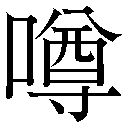
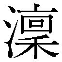

| とある飛空士への誓約 01 | |
| 犬村小六 | |
| 小学館 (2013) | |
小学館ｅＢｏｏｋｓ
とある飛空士への誓約１
犬村小六
イラスト 森沢晴行
主な登場人物
［坂上清顕（さかがみ・きよあき）］
河南士官学校三回生。十七歳。エアハント士官学校への編入入学を目指す。親善飛行では操縦を担当。
［ミオ・セイラ］
河南士官学校三回生。十七歳。エアハント士官学校への編入入学を目指す。親善飛行では偵察を担当。
［イリア・クラインシュミット］
エアハント士官学校三回生。十七歳。親善飛行では操縦を担当。
［ライナ・ベック］
エアハント士官学校三回生。十七歳。親善飛行では偵察を担当。
［紫かぐら（むらさき・かぐら）］
箕郷士官学校四回生。十八歳。親善飛行では副長を務める。
［セシル・ハウアー］
エアハント士官学校二回生。十六歳。親善飛行では電信を担当。
［バルタザール・グリム］
エアハント士官学校四回生。十八歳。親善飛行では機長を努める。
あのとき、ぼくは特に世界を救いたかったわけではなく、ただいなくなった彼女との約束を守りたかった。
すでに彼女はとても遠いところへ行ってしまって言葉を交わすことはできなかったけれど、約束を破ったなら彼女が悲しむことはわかっていたから。
だから、いま世間で伝えられている、世界のために我が身を投げ打つ聖人君子のようなぼくのすがたは間違いだ。実際のぼくは個人的な想いをなによりも優先して、十数万人の人間を戦闘に巻き込み死傷させた大罪人である。
結果としてぼくらの行動はいわゆる「プレアデスの奇蹟」へとつながり、みなさんの知るところとなったわけだけれど、報道や関連書籍に伝えられているぼくら七人のすがたはいずれも本当のものとはかけ離れている。
まず、七人の内訳は「英雄」五人に「裏切り者」ふたり、ではない。
あのふたりが「裏切り者」と呼ばれるたびに、ぼくの心から血が流れることを、どうかご理解いただきたい。
ふたりを「悪役」とすることで、ぼくを含めた五人を「英雄」にして、わかりやすい勧善懲悪の構図を仕立て上げたい方々には申しわけないが、ぼくら七人は全員、善と悪が入り交じった普通の人間だった。違いがあるとすれば生まれ育った環境と、出会って以後の状況だけだ。
国家への忠誠心を基準にしたならば、あのふたりのしたことは確かに許されるたぐいのものではなく、仲間たちを地獄へ突き落とした裏切り者かもしれないけれど、しかしあの時代、あの状況において、ふたりに選択肢などなかった。
そして、選択肢がないにもかかわらず、あのふたりもまたそれぞれの約束を守っていた。誰にも知られることのない、守ってもなんの得もない約束を、裏切り者と罵られ、石を投げつけられながら、ずっと大切に抱きかかえていたのだ。
あれから十年以上が経ったというのに、いまさらぼくが口をひらいたのは、このままでは裏切り者としてのふたりの虚像が後世に伝わってしまうからだ。ぼくの話を最後まで聞いていただけたなら、五人は聖人君子などではなく、あのふたりは悪役などではないと、みなさんに首肯していただけると信じる。
前置きはこのくらいにしよう。
ときに調子が外れるかもしれないが、ぼくのうちにあるありったけの誠実さをかき集めてとにかく語りきるつもりだ。
絢爛華麗な英雄叙事詩ではない。
これは、空にあこがれる子どもたちが交わした約束の物語──。
七人の少年少女が織りなす、恋と空戦の物語である。
一．
帝紀一三四二年、五月、マウレガン島チャンドラー飛行場──。
幾条もの光の束が星空を切り刻んでいた。
箔を散らしたカクテルのように、光のストローでかきまぜられる夜を不安げに見上げ、婦人は滑走路の端で風に吹かれていた。
先ほど無線連絡を入れてきた飛空機はこのサーチライト廻廊を目がけて飛行してくる。その後席に、多島海の希望を乗せて。
婦人は見えない飛空機の無事を祈った。ウラノス侵攻に伴う混乱のなかでシエラグリードを飛び立ち、敵中を突破してこの地まで単機で辿り着くには奇跡が必要だ。
遠い雷の響きが伝った。かすかな大気の振動が居並ぶ人々の耳元へ寄せる。婦人の傍らに控えていた大使館員が、夜空の一角を指さす。
「来ました」
婦人は示された方角へ目を凝らした。
星の光を縫って、ただ羽虫に似たプロペラの響きだけが伝ってくる。
照射隊が夜をまさぐる。天空を目がけて交叉する光条は、天に慈悲を懇願する棄民の両腕のよう。
と、光の腕先がなにかをつかみ取った。
おお、と居合わせた高官たちから歓声が上がる。
五本のサーチライトが一斉に、夜空の焦点を炙りだした。光の三角錐の頂点付近に、懐かしい複葉機の機影があった。
「アクメド......」
安堵とともに騎士の名を呟いた。
誘導灯代わりの角灯が四つ、滑走路の両端に置かれた。群青の洋上迷彩を施した機体が接近してくる。大使館員や地上員の指笛と歓声を浴びながら、殊勲の複葉機はゆったりとした仰角を描いて、両輪を地に擦りつけた。
待ち焦がれていた人々が飛空機へと駆け出し、婦人はそのあとから歩んでいく。人の輪が複葉機を取り囲み、搭乗席から降り立った青年を迎え入れる様子が影絵のように見て取れた。
「叙勲ものだ、アクメド！」「王の血は残った、再興は成るぞ！」
歓呼へ手を振ることもなく、アクメドは後部座席の風防をひらいた。
十歳前後とおぼしい子どもが、アクメドに抱きかかえられて翼へ降り立つ。
人々の歓声がひときわ大きくなった。王の名を呼ぶもの、泣きむせぶもの、地に両膝をついて天の主へ感謝の祈りを捧げるものもいる。
──シルヴァニア王家は滅びていない。
人の輪へ歩み寄りながら、婦人はその事実を静かに確認した。
婦人に気づいたアクメドは地に片膝をつき、細長い文箱を差し出した。受け取った大使が婦人の了承を得て地に箱を置き、蓋を外す。
紫紺の絹織りにくるまれていたのは、古拙な一本の杖だった。杖頭には聖アルディスタの紋章がとりどりの宝玉で象嵌されていた。
──聖杖。
王の証。この杖を手に立つものがすなわち、シルヴァニア王家の王位継承者である。
「苦労をかけました、アクメド」
万感の思いを、簡素なねぎらいに込めた。
アクメドは片膝をついたまま、右手の拳を地に押し当てて頭を垂れる。
「王と王妃をお救いすること、叶いませんでした」
いつもの無機質な声が、慚愧を吐いた。婦人は首を左右に振った。
「兄は最後まで戦うことが王としての役目でした。義姉も兄に寄り添うことが本望であったはず。あなたは王の命令に従い、聖杖と王位継承者を救い出した。騎士としてこれ以上の働きがあるでしょうか。たったひとりでウラノスの重囲をよく突破してくれましたね」
近づいてみれば、機体もアクメドも傷を負っていることがわかった。シルヴァニア王国を取り囲んだウラノス航空隊の追跡がどれほどのものであったかは、王国一と讃えられる撃墜王の被弾状況を見ればわかる。
婦人は身を屈め、アクメドの手を取った。
それから、残った手で王位継承者の小さな身体を抱き留める。
「おばさま」
小さな声が婦人の耳に寄せられた。婦人は残された希望の両目をのぞき込む。
「さぞ怖かったでしょう。よく生き残ってくれました。これからのことは心配しなくていいのよ。わたしがあなたの面倒をみます」
小さな身体が婦人に抱きついてきた。婦人は優しく、その震える身体を受け止めた。安心させるように背中を二度ほど叩いてから、いまだ膝をつくアクメドへ目を戻す。
「......王権を奪われたいま、わたしどもには航空隊を保有する資金がありません。しかし、あなたが必要です。この子が成人するまで、教育係として仕えてくれないでしょうか」
アクメドはじっとうつむいたまま、答えた。
「身に余る光栄......。ですがわたしなりに今後に関して算段があります。王家が再興のために立つならば、必ずお役に立てるものと」
「......聞かせてください」
「残った仲間たちと空の傭兵隊を組織するのです。世界中の戦場を巡りながらおのれの腕を磨き、腕の立つ飛空士を集め、互いに研鑽しつつ再興の日を待とうかと」
婦人の胸が痛みに呻いた。これほどシルヴァニア王家に忠誠を尽くした偉大な騎士が、傭兵などに身を落とさねばならないなんて。
「アクメド......あなたは......」
婦人の悲しみがアクメドへ伝った。アクメドは誓約の言葉を告げた。
「翼は永劫に、シルヴァニア王家のもとに」
「............」
「幾度雇い主を変えようとも、我が魂は王家とともにあります。再興の狼煙が上がったならば、わたしは仲間たちを引き連れ、新たな王のもとへ駆けつけましょう」
言葉に決意を込めた。噓偽りのない言葉だった。シルヴァニア王はアクメドの出自を知りながら、その功績を称賛して聖騎士にまで取り立ててくれた。その恩を忘れることは生涯ない。
婦人は静かにアクメドの言葉を受け止めた。
「王に代わり、あなたに感謝します。シルヴァニア王家があなたの忠誠を忘れることはありません。ですが」
一度言葉を切って、婦人はもう一度、王位継承者の背を抱き寄せた。
「わたしはこの子へ、重い宿命を背負わせることを望みません」
「............」
「王家のことを忘れ、市井の人として平凡な人生を歩む......。その可能性も、この子に残してあげたい。この地へ嫁いで以来、わたし自身がそう暮らしたから、その生き方も決して悪くないと......いいえ、むしろ幸福かもしれないと思うのです」
アクメドはうつむいたまま動かない。婦人はこの地で外交官の夫と結婚して長らく生活してきたため、王家とはまた異なる価値観を育んでいた。残酷かもしれない言葉を、婦人はつづけた。
「この子が成人したとき、この子自身に自分の道を選んでほしい。王家再興を望むか。普通の人間として、平凡な生活を望むか。その選択を、わたしたちはただ受け止めましょう」
「............」
「再興を選ぶことは、再びの戦火を意味します。大勢の罪もない人々を巻き込み、それでも王家の復権を望むのか......。その決断ができる人間として、わたしはこの子を育てるつもりです。異論がおありですか」
アクメドは変わらず、拳を突き立てたまま即答した。
「御意に」
「アクメドを医務室へ。温かいものを用意してあげて。アクメド、おもてをあげなさい」
持ち上がった騎士の精悍な表情へ、婦人は感謝を送った。
「もはや叙すべき勲章もありませんが。シルヴァニア王家があなたを忘れることはありません。また逢えることを信じます」
「はっ！」
婦人は王位継承者の手を引き、身を翻した。強い風が外套の裾をはためかせる。
継承者は叔母の横顔を見上げてから、手をそっとほどき、アクメドに抱きついた。
「ありがとう。アクメドのこと忘れない」
アクメドはじっと、おのれの救い出した命のぬくもりを感じていた。顔を上げて、王位継承者の幼い表情を網膜に刻んだ。
「......あなたが大人になり、わたしを必要としたときは、地の果てからも駆けつけましょう。どうかお元気で。翼は永劫に、シルヴァニア王家のもとに」
継承者はアクメドの背に回した手に力を込めて、泣きそうな顔を一度腕でぬぐい、叔母のもとへ駆け戻った。
去っていく小さな背中をアクメドは見送った。
最後に王から託された大きな仕事をひとつ、やり遂げることができた。わずかな満足は瞬く間に過ぎ去り、次なる風雲の予感がアクメドの胸を震わせていた。
立ち上がり、夜空をつんざくサーチライト群を見上げた。
逆巻く風たちが幾条にも折り重なり、光の廻廊を星へ吹き上がっていく。
これから敗残者たちの行く手に立ちはだかる困難は想像を絶するだろう。目障りなシルヴァニア王国を滅亡へ追いやり、ハイデラバードを手中におさめたウラノスは掃討戦を開始する。王家の残党は南多島海を追いやられ、大瀑布を越えて北多島海を目指すしかない。財産も領土も領民もなにもかもを奪われて、ただおのれの生命だけ握りしめ、見知らぬ土地を長くさすらう棄民の運命が課せられる。
──だが、しかし。
風と光が突き上げる星空を、睨み据えた。
「ワルキューレは滅びぬ」
側頭部から流れ出た血が、頰を伝い、地へ落ちる。腕でそれをぬぐい、アクメドは身を翻した。
「いつか再び、ハイデラバードの空へ」
おのれの魂へ、その誓約を血がにじむほどに深々と彫りつけた。
二．
帝紀一三四二年、六月、ウラノス首都プレアデス──。
ウラノス秘密情報部から与えられたコードネームは「ハチドリ」だった。
出発は本日十八時、空中都市プレアデス右岸のフィルトラ港から客船に乗って地上へ降り立ち、ハルモンディアを経由して、三日後にセントヴォルトへ入国する。セントヴォルトにはすでにウラノス諜報官が待機しており、ハチドリにセントヴォルトで生活するための偽りの家族と戸籍を提供する。それからなに食わぬ顔で三年間の学生生活を送り、十五歳の春、士官学校へ入学し、セントヴォルト人として軍の上層部に入り込み、あらゆる秘匿情報をウラノスへ横流しする......それがハチドリの人生に与えられた役割だ。そのために必要な訓練はすでに経てきた。ハチドリとそこらの十二歳では歩んできた道が違いすぎる。死人が出るのも当たり前な訓練に、歯を食いしばって耐えてきた。七歳で諜報官養成所へ入ったころ、百人いた仲間が、ひとり死に、ふたり死に、五年後は八人にまで減っていた。三か国語の完全習得、潜入・脱出技術、射撃・格闘術、爆薬・爆破訓練、盗聴技術、耐寒・耐熱訓練、耐拷問訓練、暗号技術、密林での生存術、ダンス・ギャンブル・テーブルマナー、雪中行軍、飛空機械の操縦などなど、すべての課題を克服し、晴れて諜報部員として認められたいまのハチドリは、たった十二歳でありながら肉体も知性も教養も一般兵士を遙かに凌駕する。
これから異国での長い潜入生活がはじまる。
おそらく周辺の誰にも本当の自分を見せることのできない、孤独な旅路だ。しかしハチドリはすでにその苦難の道を歩む覚悟を決めていた。
出発まで時間があった。ハチドリは情報部に許可をもらって、実家に別れの挨拶に行くことにした。
商業地区の一角、ありふれた雑居ビルの二階に公益法人団体を装って設置してある秘密情報部局を辞してバスで実家へむかった。
窓の外に空中都市プレアデスの豪奢な街並みが連なっていた。
常に高度二千メートルを飛翔する全長五十五キロ、全幅二十四キロ、全周約二百二十キロに及ぶ広大な地表面に、飛行場・軍港・対空砲台など軍事施設はもちろん、王宮、行政区、商業区、歓楽街に住宅地、それらを結びつける幹線道路、海水から真水を抽出する海水蒸留プラント、上下水道、電気・通信設備、あらゆる都市インフラを詰め込んだ「空飛ぶ要塞都市」。ウラノスが保有する十二の飛空要塞を統べるにふさわしい、「空中都市の王」ともいえる威容である。
この都市に暮らす五百万人の市民の多くが、地上との貿易を営み財貨を得ている。プレアデスはミッテラント大陸とヴェステラント大陸、ハイデラバード群島を周回しており、普通に生活しているだけで洋上航海するのと同じ貿易利益を得られる。稀少資源を産出する幾つもの植民島を飛び石伝いに渡るように周回ルートを組んでおり、空軍力を保有したまま移動するため航路も安全、通常は遠距離になるほどかさむ輸送コストも都市そのものが移動することで引き下げられ、周回するごとに莫大な富がプレアデスへ転がり込む。行き交う人々の身なりはどれも裕福で、街並みにも活気があり、まさに天空の楽園と呼ぶにふさわしい華やかさだ。
ハチドリはただ賑々しい窓の外を見ていた。流れてゆく人々の笑顔はどれも、ハチドリからは遠くてまぶしい。市民たちのありふれた日常は、ハチドリにとって分厚いガラスに隔てられた夢の世界の光景だった。
これから少なくとも十年以上、この街へ帰ってくることはないだろう。明日からはじまる、地上都市での生活のことを少しだけ考える。
肝心なのは、ウラノス人だとバレないこと、その一点だ。そのために留意すべき事柄が幾つかあるのだが、最も基本なのは「呼称」にまつわる点である。
地上の人々はウラノス人のことを「空の一族」と呼んで恐れている。アルディスタ正教会版の「創世記」に則ってその名がついたらしいが、ここプレアデスで自分たちをその名で呼ぶものはいない。聖アルディスタを主神と仰ぐ、いわゆる「アルディスタ教」は現在幾千もの分派に分かれて互いに争っており、ウラノスが信奉する「アルディスタ統一教」における記述は「ウラノス・ヴァシリシャス」である。「空の一族」という呼称は、邪教を信奉する地上の民が無知ゆえに使用するものであり、ウラノス人同士で使ったなら軽蔑される表現であった。
十分ほど走って、住宅街の外れの停留所でバスを降り、ハチドリはうらぶれた路地裏へ入っていった。華やかな表通りの喧噪は過ぎ去り、行き交う人の少ない、濡れて湿った細い通りをしばらく歩いて、漆喰が剝げて石灰に穴があいたみすぼらしい家屋の前で歩を止めた。
隆盛を極めるプレアデスだが、光が眩いほどまた影も濃くなる。繁栄がつづくほど人口は増え、プレアデスの限りある地表面は富むものに買い取られ、踏まれるものたちは都市の外輪にスラムを形成してそのおこぼれに与ることになる。粗末な家が身を寄せ合うように密に詰め込まれ、半裸の汚れた子どもや濡れた野良犬がうろつき、側溝には民家から投げ捨てられるゴミが溜まった、行政からも見捨てられた犯罪多発地区──ハチドリの家はその片隅にあった。
入り口の鍵はとうの昔に破壊されているので使いものにならない。屋内に金目のものがないことは一目瞭然であるため、鍵をする必要もない。立て付けの悪いドアをあけて、ハチドリは薄暗い我が家を見回してみる。
誰もいない。家具らしいものは年期の入った安楽椅子と傾いた机のみ。煤けた石炭の匂いが立ちこめ、歩くだけで床に溜まった埃に足跡が残る。
ハチドリは狭い階段を上って二階へ着いた。
カーテンが閉め切られていて、屋内は薄暗い。照明具も含めて売れるものはすべて売り払ったため、あるのは煤けたベッドと木の椅子がひとつだけ。
ハチドリの母親は青の褪せた寝間着を着て、椅子に座り、古い写真を見つめていた。
「スプーンは手前から奥へ動かすの」
かすかな独り言が、母親の口の端から漏れ出ていた。
「食べ終えたら、ナイフの刃はこちらへむけて」
「母上」
呼びかけた。
「背筋を伸ばして。ナプキンの畳み方が違うわ。両端はこう折らないと」
母は写真へむかってのみ語りかけていた。
ハチドリはカーテンをあけた。透明な二月の日差しが、室内を深く洗った。
「ひっ」
ハチドリの存在に気づいた母親が、我が子を守るように写真を胸に強く抱き寄せて身をよじる。
「カエレ......!! ナニモノだ、カエレっっ!!」
低くしわがれた老婆の声で、母はハチドリを見ることもなく叫んだ。
五年間の訓練を通じて、ハチドリは感情を殺すすべを学んでいた。自尊心を守ろうとするから感情が荒れるのだ。自分を大事に思う心など捨ててしまえば、どんな言葉を投げつけられようと悲しみなど感じない。
そのはずなのに。
自分はまだまだ、諜報員としては未熟なのだな。
歪んだ表情を床へむけて、ハチドリは別れの礼を示した。
「お別れをつげに参りました、母上」
「キエロ......!! カエレ......!! この子にテダシはさせぬ、このワタシがさせぬぞ!!」
母親は写真を胸に抱きしめる。写っているのは、五歳のころのハチドリだ。母のくるった心のなかで、ハチドリは永遠に五歳のままだった。
「次に会えるのは、おそらく十数年後となりましょう。しかし、必ず戻ります。どうかそれまでお元気で」
母親は野良犬じみた唸り声を発すると、ハチドリの垂れた頭へ積み木細工を投げつけた。
「イエはくれてやる!! オットもコロスがいい!! だがこの子だけは渡さぬ、この子だけはワタシのものだ、キサマら下郎のスキにはさせぬぞ!!」
頭から血を流しながら、ハチドリは顔を上げた。青白くやせ衰え、頰も唇も枯れ果てた母の相貌に、赤く濁った瞳がふたつ憎悪の色を穿っていた。
いまから七年前。
記憶の母は美しかった。
プレアデスの高級住宅地に住まい、豪奢な庭園に珍しい花や動物を遊ばせ、月に一度は着飾った紳士淑女と華やかな宴をひらいていた。幼いハチドリは母親と手をつないで、入れ代わり立ち代わり挨拶にくる来賓にちやほやされるのが大好きだった。
父親はウラノス宮廷の中書省長官だった。皇帝の意志を法案化する立法機関の長であり、実質、皇帝に次ぐ権威の持ち主、ウラノスを実務レベルで取り仕切る存在だった。
そして父はその高い地位に比して、あまりに清廉だった。ウラノスの政財界を渓流のごとく清らかに澄んだものにするため情熱を注いだ。白河に住む魚たちは喜んだが、あまりにも透明すぎる水になじめない魚からは嫌われた。この世界には汚水のなかでしか生きていけない魚も存在しており、そのものたちは生き残るために群れを形成して流れをもとのドブ川に戻そうと努めた。
父はある日、反逆罪で囚われた。皇帝を暗殺しようとした宮廷料理人が黒幕として父の名を吐いたのだ。さらに父の名を冠した皇帝暗殺計画が複数の有力者から密告され、宮廷にはびこる貴族たちも父にまつわる黒いを皇帝の耳に流し込んだ。
父の処刑から一週間後、母親とハチドリは流れ流れてこの町へ辿り着いた。持ち出したわずかな金と家財道具をこの家へ押し込んで、ふたりで寄り添って生活した。食うや食わずの生活だった。着るものも家具もすぐに二束三文で売るはめになり、ハチドリはおなかをすかせて母にすがりついて泣いた。
母がどうやって糧を得ていたのか、当時のハチドリにはわからなかった。食べ物を持ち帰るたびに、母の精神は蝕まれていった。母の心が変調をきたしていることに気がついたのは、この町に来て一年が経ったころだった。昔の写真を握りしめて、過去のハチドリへむかってのみ母親は語りかけるようになっていた。
「いつかあなたの目に、成長したわたしが映りますように」
ものを投げつけられながら、十二歳のハチドリは別れの言葉を告げた。
「キエロ!! イナクナレ!! また来ればコロス、必ずコロス!!」
母の罵声を背中に受けながら、ハチドリは階段を下りて通りへと出た。二階を見上げると、日の差さない部屋から母親のわめき声が伝ってきた。
ハチドリは少しだけ泣いた。
泣くのはこれで最後にしようと思った。これから少なくとも十数年、本当の自分の感情というものは表に出せないのだから、いまだけは心の痛みに正直でいよう。これが自分に許す、最後のわがままだ。
ウラノス秘密情報部が母親の面倒をみてくれるから諜報員になった。自分が公務を果たす限り、母親は生きていられる。それにこの任務がうまくいけば、ウラノス情報部で出世できる。売られた家を買い戻して、母親にドレスを買って、医者に診せて、傷ついた心が癒えたなら、また自分を我が子として認識してくれるかもしれない。
母親に自分を思い出してほしい。
そのための旅がはじまる。
流れ落ちたものを腕でぬぐって、けがれのない青空を仰いだ。
これから先、任務に不必要なものはなにもかも捨てようと思った。人間としての誇りも感情も他人を思いやる心も、全部この最果ての町に置き去りにして。
「行こう」
これから出会う、あらゆる人間を裏切るための旅路へ。
「必ず戻ります、母上」
いつかまた慈しみとともに、あなたがわたしの名を呼んでくれますように。
三．
帝紀一三四二年、八月、メスス島オデッサ──。
青々としたトウモロコシの葉が密に茂り、ふたりの前に壁となって立ちはだかっていた。茎の高さは二メートル近く、ふたりの背丈の倍近くもある。
十二歳のミオ・セイラは不安そうに、この夏に友達になったばかりの同い年の少年へ顔をむけた。
「この中に入るの？ 迷子にならない？」
よく焼けた肌に、袖なしのシャツ、半ズボン。いかにも腕白小僧の風貌をミオへむけて、坂上清顕は挑発する。
「もしかして怖い？」
むう、っとミオは頰を膨らませる。こちらは清顕とは対照的に、いかにも良家の子女といったフリル付きのブラウスと赤いスカート、子ども用の革ブーツ、麦わら帽子。柔らかそうな金色の髪に夏の日差しをいっぱい含ませ、両手を腰に当てて、虚勢を張る。
「怖いなんて言ってないもん！ あなたが頼りないから、大丈夫かなと思って」
「ぼくん家の畑で迷うわけないでしょ。ついてきて、絶対、すごいんだから」
にこにこしながら、清顕は真っ青なトウモロコシ畑へ足を踏み入れていく。
ためらうミオの肩に、白い鳥が舞い降りてきた。
「フィオ、どうする？」
体長三十センチほどの鳥は、ミオと顔を見合わせてから、フィーと鳴いた。
「しようがないな。行こうか」
ミオは夏空の濃厚な青と入道雲の真っ白な対比を見上げ、頰を引き締めて生意気な少年のあとにつづいた。
「面白いでしょ。葉っぱで空が見えないんだよ」
清顕の言うとおり、真っ青な葉が頭上で折り重なり、空を隠していた。木漏れ日がきらきらと斑に降り注ぐ。光の時雨を浴びながら、湿った軟らかい土を踏みしめて進むが、どれだけ行っても青いトンネルは終わらない。清顕の背中を見失ったらきっともう二度とこの迷路から出られないだろう。
「ちょっと、そんなに急がないで、もう少しゆっくり......」
「大丈夫、全然平気だから！」
ミオは麦わら帽子を手に持ち直して清顕の背を懸命に追った。金斑の迷宮はどこまでもつづき、不安が喉元までこみあげてきたころ、いきなり視界がひらけた。
「着いた！ ほら、どう!?」
密に詰まっていたトウモロコシ畑が、ここだけぽっかりと円形にひらけていた。空き地の直径は五メートルほどもあり、その真ん中に、スレートと鉄材、トタン屋根を組み合わせて作った小屋らしきものがあった。
「ぼくの秘密基地！」
清顕は誇らしげにふんぞり返る。ミオはハンカチで額の汗をぬぐうと、フィオと顔を合わせて、ふん、と鼻を鳴らした。
「なによこのオンボロ小屋。全然たいしたことない」
「え、うそ!? みんなびっくりするのに！ 本当はすごいって思ってるでしょう？」
「思ってないもん。ハルモンディアにはもっとすごいものがいっぱいあるし」
遙か彼方のミッテラント大陸にある、見たこともない国の名前を出されて、清顕はひるんだ。うなだれて悔しそうに、
「やっぱり都会の女の子は違うなあ......。こんなにかっこいい基地なのに......」
ミオは腕組みをして、つんと横顔をむけると、
「あなた、井の中の蛙よ。よくいる思い上がった田舎者だわ。こんなみすぼらしい小屋にこもってないで、もっと広い世界へ目をむけるべきね」
「うぅ......。悔しいなあ」
「うなだれてないで、さっさと中見せなさいよ。どうせビー玉とか、瓶の蓋とか、そんなのしかないでしょうけど」
「なんで知ってるの!?」
「やっぱり入ってるのね。呆れた。男の子ってなんできらきら光るものばっかり集めるのかなあ。ばっかみたい」
「そこまで言わなくていいでしょ！ ねえ、フィオ、この基地かっこいいよね？」
ミオの肩に止まっていたフィオは、フィーと返事して夏空へ飛び立ってしまった。
「きっと入るのがいやだったのね」
「そんなことない！ 鳥は空飛んでるほうが楽しいんだよ。ほら、中入って。ぼくの大事なものは、全部この中に入ってるんだ」
促されて、清顕につづいてミオは秘密基地の中へ入ってみた。外観同様、なんの変哲もない、廃材を集めて建てかけた、雨風を避けられるだけの小屋だった。床にはわらのベッド。ビー玉や瓶の蓋、壊れた機械の部品などが片隅に大事そうに並んでいて、お世辞にもかっこよくない。
「狭いし暗いよ？」
「そんな狭くないよ。ほら、寝っ転がれるし」
暗がりのなか、清顕はわらのベッドに足を伸ばして寝転んだ。
「あー、いい塩梅だなー」
「おじいちゃんみたーい」
「なんで文句ばっかり言うの？ ほら、きみも寝転んでみなよ。すごく気持ちがいいよ」
「しようがないなあ」
ころん、とミオは清顕の傍らに寝転んでみた。都会育ちのミオにとって、わらのベッドは新鮮だった。昼間よく遊んで疲れていたので、安らいだ気持ちにもなる。隙間だらけのトタン屋根から、細く切り分けられた日光が入り込んでくる。肥沃な土壌が日に焼かれて立ち上る香りが、鼻孔に心地よい。
「どう？ 気に入ったでしょう？」
「全然。ばっかみたい」
「ミオって文句ばっかりだなあ」
「そんなことないもん。あたし素直だから、すごいと思ったらちゃんとすごいって言うもん」
寝っ転がったまま、傍らの清顕に顔をむけて頰を膨らませる。
清顕も間近から、ミオのほうへ顔だけむけた。
「ほんとに？」
「うん。ほんと」
「......よし。じゃあ、ほんとにすごいの見せてあげる」
清顕はなにごとか決意した顔を、ミオに近づけた。
「な、なによ。顔近づけないでよ」
「次のはほんとにすごいよ。なにしろ命がけだから。それでもいい？」
おでこがくっつくほど、清顕はますます真剣な顔を寄せる。ミオは気丈に、翡翠色の瞳を大きく広げて、清顕を睨みかえす。
「もしかしてあたしが怖がると思ってる？ ばっかじゃないの？ 全然怖くないし」
「言ったな。言ってしまったね。ぼく、ついに本気だすよ」
「なにがついによ。自分でついにとか言わないよ普通」
「秘密兵器登場」
おもむろに立ち上がって、清顕は乱暴に並べられた玩具をかきわけ、おかしな形の木靴を取りだした。布靴の上にさらに履く、ここメスス島オデッサ特有の大きな木靴だが、靴底に長さ三十センチほどの円筒が継ぎ足してある。これを履いたなら三十センチは背が高くなるが歩くことはできないだろう。
「変な靴──」
「師匠に作り方、教えてもらったんだ。師匠も子どものころ、これを履いて練習してたって。よし、飛行場に行くよ、ついてきて！」
清顕は変な木靴をそれぞれ両手に持つと、また風のように小屋から駆け出していく。
「ちょ、待ちなさいよ、なんでいつもいきなり走り出すの......」
迷子にならないよう、ミオはまた懸命に清顕の背中についていく。
トウモロコシ畑を抜けて、五分間ほど全力疾走すると、坂上家の飛行場に着いた。
広い農場をもつ農家は、飛空機を使って水や農薬を散布するため、ほとんどがこうした飛行場をもっている。管制塔は掘っ立て小屋であり、滑走路も土をならしただけの素朴なものだ。
「よし、お父さんいない！ 見つかったらげんこつじゃすまないからね、師匠より怖いんだ、命がけだよ......」
清顕は用心深そうに周囲を見回して、家族が誰もいないことを確かめると、滑走路脇にぽつりと置いてある、真っ赤なおんぼろ複葉機へ駆け寄っていく。
「ミオ、早く！」
「待って、待って......」
息せき切って、ミオはなんとか清顕についていく。勢いのまま、清顕の手を借りて翼に片足をかけ、気がついたなら複葉機の後席に座っていた。前席では、飛行メガネをかけた清顕が満面の笑みを浮かべて、
「ベルト締めた？ 締め方わかる？」
「え？ あ、これ？ 締め方はわかるけど......。ねえちょっとあんた、まさか......」
「早くして！ 見つかったら殺されちゃう!!」
こちらを振り向いて、清顕は笑いながら物騒なことを言う。いやな予感を抱えながらも、ミオは言われるままベルトで身体を座席へ固定した。前席と後席は一メートルほど胴体部で仕切られていて、互いに前をむいて座っているため、ミオは清顕の後頭部へ話しかけるかたちだ。密封型の風防はなく、前席と後席のそれぞれに遮風板がついているだけで、むき出しの身体を外気へさらしている。
清顕は円筒のついた木靴を履いた。子どもの足でフットバーを操作するための木靴だった。後方を振り返り、円筒の底で左右のフットバーを踏み込んで、尾翼の方向舵がぱたぱた動くのを確認する。つづけて操縦桿を押し引きして昇降舵を、左右に倒して補助翼の利きを確かめる。
ミオの心臓が、音を立てて高鳴りはじめた。
まさか、そんなわけがない。
たった十二歳の少年に、複葉機を操縦できるわけが。
そのはずだが、清顕の一連の動作は紛れもなく、離陸準備の作業だった。
「ね、ねえあんた、まさか、飛ぶとか言わないよね？」
質問の返事は、高らかな音とともに回転をはじめたプロペラ音だった。
清顕が振り返る。
「え!? いまなんか言った!?」
「まさか飛ぶとか言わないよねー!?」
ミオは必死に声を張り上げるが、座席同士が胴体部で隔てられているうえ、プロペラ音にかき消されて聞こえていない。清顕は面倒くさそうに、
「伝声管使って、伝声管!! いま忙しいから、あんまり相手できないけど!!」
搭乗席内にある、あれやこれやの複雑なレバーやスイッチを操作して、機体は離陸滑走に入った。
いかにもオンボロそうな複葉機が、激しく振動しながら土の滑走路を走りはじめる。悪い予感が正しかったことを悟って、ミオはついに叫んだ。
「いや──っ！ 下ろして───っ！」
「え──っ？ なんか言った──!?」
「こんなとこで死にたくない──っ!!」
「全然聞こえないよ──っ！ 離陸したら聞くから、ちょっと待ってて──」
ひときわ高らかにエンジン音が轟き、プロペラの回転が勢いを増した。
レシプロエンジン特有のばりばりとした排気音につづいて、ぼろぼろの機体がその外観に不釣り合いなほどの高速で滑走路を駆けていく。
速度が上がる。視界の端を流れゆくトウモロコシ畑が徐々に線上になり、やがて真っ青なカーテンになった。
「飛ぶよ!!」
「や───め───て─────っ!!」
泣き叫ぶ声を地上に押し流して、真っ赤な機体が宙へ浮いた。ミオの肺腑からすうっと空気が抜き取られ、滑走路に反響していたプロペラ音が遠のき、カーテンだったトウモロコシ畑が今度は模型みたいに眼下へ押し下がっていく。
冷たい風が後席に吹き込む。草と土の匂いの全然しない、ありのままの空の風。手で押さえていた麦わら帽子が、健闘空しく機外へ吹っ飛んでしまった。ミオの金髪が、風に激しくかき乱される。
「い─────や───────っ!!」
悲鳴までも機体後方へすっ飛んでいく。清顕には届いていない。飛空機は順調に青空を上りつめ、高度百二十メートルで機体を水平に戻し、時速百五十キロメートルで巡航する。
「どう？ 最高でしょ？」
伝声管が鳴った。目を前へ戻せば、遮風板のむこう、清顕が得意げにこちらを振り返っている。飛行は順調らしく、機体の振動も収まっている。複葉機は心地よさげなエンジン音とともに、トンビのごとくゆったりと飛んでいた。
ミオは唇を思い切り嚙みしめてから、腕で目元をこすって涙をぬぐい去り、はためく髪の毛をゴムバンドで後ろに束ね、フックにかかった伝声管を取り上げて、思い切り怒鳴った。
「最っっっ低だよ、バカっっっっ!!」
「え、え、え、な、なんで!?」
「なんでいきなり飛ぶの!? ばっかじゃないの!? あんた、まだ子どもじゃん!! 運転免許ないじゃん!! 足も届かないくせに飛空機に乗るなっ!!」
「だから、命がけだって言ったじゃない!! お父さんに見つかったら飛ぶよりもっと怖いんだよ、飛ぶくらい全然平気、大丈夫!!」
「あたしは平気でも大丈夫でもない!! もういやあ、お願い下ろしてえ」
「わー、ミオ、泣いてやんの」
「うるさいバカ!! バカバカバカバカ!!」
「もしかして空飛ぶのはじめて？」
「あんたよりよっぽど頼りになる飛空士に乗せてもらって飛んだよ!! あんたみたいな無免許の飛空機に乗りたくない！」
「大丈夫だよ、ぼくの師匠もすごい人だから。すごい人に教えてもらったぼくもすごいはずだよ、たぶん」
「どうしてそんな能天気なのよバカっ!!」
「泣かなくてもいいじゃない。ほら、落ち着いて景色見てごらんよ。すごいでしょ、こんなのハルマゲドンでも見たことないでしょ？」
「ハルモンディアよ、バカ!! ぐすん、ぐすん......。もうダメだあ、あたしもう二度と地上に戻れない......」
「戻れるってば！ 着陸もこれまで何回も師匠に教わってるんだから......。あ、ほら、要塞!! オデッサ要塞が見えるよ!!」
清顕は右斜め下方の港湾を指さした。きらきらと夏の日差しを弾き返す海原に貨物船がぽつりぽつり航行していて、港を見下ろす山並みにコンクリートの砲台群が据えられていた。二十門近い巨大な砲塔がすべて、海原を指向している。現在、メスス島の宗主国である秋津連邦が建設中のオデッサ要塞だ。
「秋津軍がいる限り、この島は安全だよ。ウラノスなんて近寄れもしない。シルヴァニア王家は滅ぼせても、秋津軍には勝てないよ」
「..................」
「ん？ どうしたのミオ？」
「............あんたって、ほんっと、無神経よね」
「え、な、なんで怒るの？」
「............なんでもない」
「よくわかんないけど......ほら、海！ 海！ きれいでしょ、すごいでしょ、青しかないでしょ！」
ミオの気持ちなど置き去りにして、ひとりではしゃぐ。ミオはなんとか気を取り直して、仏頂面を空と海へとむけた。
「........................」
清顕の言うとおり、世界には青しかなかった。
視界の彼方まで広がる、海原のカーペット。うねりの少ない多島海の海面はおだやかな湖に似て、空を映し出すための広大すぎる鏡面だった。複葉機の影が、その真っ青な鏡面をイルカみたいに走り抜けていく。天頂からまっすぐ打ち下ろされる夏の日差しがふたりの遙か足の下で砕け、きらきらした光の粒子を夏空へ撒き散らす。
清顕は水平線を目指し飛ぶ。彼方、一万メートルを超える入道雲がひとつあった。見ている間にも膨張していく純白の巨体は、青だけの世界に異を唱えるように空へむかってけがれのない大きな頭を突き上げていく。
地上を歩きながら見る町や山や海とはまったく違う景観が足の下にあった。空から見ると、これまで自分が暮らしていた地上の世界がおもちゃ箱のように思えてしまう。
降り注ぐ日光が、搭乗席内でぐるりと回った。左に落ちていたミオの影が、計器盤を伝って右に流れる。機体が旋回したのだ。遮風板のむこうにメスス島の海岸線があった。山の傾斜に据えられたオデッサ要塞の砲台群が、こちらへ砲塔をむけている。
「面白かったでしょ？ すごいきれいでしょ？」
伝声管から無邪気な声が伝う。ミオは仏頂面で伝声管を握った。
「まあまあね」
「うそだー。ほんとは絶対、すごいって思ってるよ」
「思ってないよ、バカ。無駄話してないで、ちゃんと前むいて飛びなさいよ。もう少し乗っててあげるから」
「うー......。やっぱり都会の女の子は違うなあ。これでもダメだとぼくもうお手上げだよ」
困り顔で後席を振り返る清顕へ、ミオはご満悦な笑みを返した。
「ふふーん。あなたもようやく身のほどをわきまえたようね。でもまあ、あなたにしては悪くはないわよ。かろうじて及第点といったところね。まだ着陸しちゃダメよ。あたしがいいっていうまで飛ぶこと」
「なにそれ。実は気に入ってるじゃない」
「気に入ってないもん！ このくらい普通だもん！」
「泣いたり怒ったり忙しいなあ。あとどこかいいとこあったっけ。オデッサって要塞くらいしか見るとこないけど......。そうだ、お姉ちゃんのとこ行こうか。ぼくのお姉ちゃん、すごい優しいんだよ。美人だし。勉強もすごいできるの」
「........................」
「なにその顔。なんで睨むの？」
「別にー。行きたいなら行けばー？」
「うん、よし決まり！ お姉ちゃん、あっちの葡萄畑にいるんだ......」
清顕は操縦桿を倒した。心地よいプロペラの響きをあとへ曳いて、複葉機は左に旋回する。
海岸線を越えて、麦やサトウキビの広大な畑作地帯を一気に突っ切り、川沿いに内陸を目指すと、なだらかな丘一帯にもうすぐ収穫をむかえる葡萄の木々が数千本、整然と列を為して植樹されていた。
葡萄畑の直上、六十メートルほどのところを航過しながら、清顕は機体を傾けて地上へむかって手を振る。
「お姉ちゃ──ん!! お姉ちゃ─────ん!!」
葡萄畑で働いている人々が、なにごとかと木々の狭間から顔をのぞかせ空を見上げる。時速百キロメートルにまで落とし、清顕は懸命にそのひとつひとつの顔を判別し、目的の人を捜し求める。
「あっ、いたっ、お姉ちゃん!! お姉ちゃ─────ん!!」
地上では、十代半ばとおぼしい少女がひとり、清顕の複葉機へむかって笑顔で手を振っていた。清顕はいかにもうれしそうに、地上の少女の直上を何度も何度も旋回する。
ミオは仏頂面で、手を振ることもなく清顕の姉を見下ろしつづけた。ミオの不機嫌に気づくことなく、清顕は何度も何度も、執拗に地上の姉へ呼びかけつづける。
「お姉ちゃーん!! どう、ぼく、かっこいいでしょ!? お姉ちゃーん!!」
いつまでも終わる気配がないので、ついにミオは伝声管へ怒鳴りつけた。
「いつまでやってんの!! もういいよ、終わんないじゃん！」
「え？ つまんない？」
「最っ低だよ、バカ！ 無神経すぎ、自分のことしか考えてない！」
「え、え、え？ ミオなんで怒るの？ ほら、ぼくのお姉ちゃん、美人でしょ？ 優しいんだよ、料理も上手だし。ミオなんで怒るの？」
「もういいよ、バカ！ バカバカバカ！ 着陸しなさいよ、あたしもういいから。あんたなんか知らないもん、バカ！」
「な、なんかよくわかんないなあ......。都会の子は違うなあ......」
ミオの剣幕に首を傾げながら、清顕は首と反対方向へ操縦桿を倒した。
無事に着陸して、清顕に手を借りて滑走路へ降り立ち、フィオが肩に止まったのを確認してから、ミオは思いっきり清顕にビンタを見舞った。
清顕の視界いっぱいに星が飛んで、舞い散る星屑のなかにミオの怒り顔があった。
「無免許！ 無鉄砲！ 無神経！」
「いったあ......いきなりなにすんの......」
「帽子なくしちゃったじゃない!! あんたのせいよ！」
「え、帽子？ ほんとだ、ないね。落としちゃったんだ、ばっかだなあ、麦わら帽子かぶって飛空機に乗れるわけないじゃん」
おなかを抱えて笑う清顕の左頰をミオのビンタが容赦なく打ち、再び視界が星の色に染まった。
「痛いってば！」
「乗るとき言いなさいよっ！」
「だって、だって、ぼく、ミオが喜んでくれると思って......」
清顕はいきなり悲しげな表情になってうつむいた。ミオも少し怒りすぎたことに気づいて、不機嫌な顔を背けると、
「ま、まあ、でもいいところもないこともなかったかな。悪くはなかったわよ。うん。まあ、ちょっとは気持ちよくなくもないかな」
すると清顕の顔がぱあっと明るく輝いた。
「でしょ!? 空飛ぶの気持ちいいでしょ!? ミオもやっぱりそう思うよね、うんうん、飛空機っていいよね！」
「......まあ、ちょっとはいいかもね。あんたに操縦できるんだから、あたしもできるかな」
「できるよ！ ミオならできる、ぼくよりもっと上手に空飛べるよ！」
清顕は心底うれしそうにそんなことを言う。不機嫌だったミオの表情がだんだんほぐれてくる。
「そ、そうかな？ あたし、飛空士になれるかな？」
「なれる、なれる！ ぼくと一緒に飛空士になろうよ！ ふたりで一緒に空飛ぶの！ 絶対気持ちいいよ！」
「あたしとあんたが、ふたりで一緒に？」
「うん、うん！ ミオとぼくのふたりで、海のむこうまで飛ぶの！ うん、ぼくと一緒に飛空士を目指そう！」
あわ、と口をあけて、ミオは頰を真っ赤にしてうつむいた。にやけそうな表情を無理やりに引き締めて、いつものつんとした表情を取り戻し、顔を上げた。
「まあ、あんたが望むならそれでもいいけど。そうね。ほかに取り立ててやることもないし、あたしも飛空士になってあげようかな」
「わあ、やった！ うれしいな、一緒にがんばろう！」
「でもひとつだけ条件があるわ」
「なに、なに？」
「飛空士になったら、あたしをあんたのお嫁さんにすること」
「へ？ お嫁さん？」
「なによ。なんか文句ある？」
「ない、ないけど、でもミオがぼくのお嫁さんかあ。突然だなあ」
「しようがないじゃない。あんたが無理やり、あたしを飛空士にしたんだから。責任とりなさいよ」
「よくわかんないなあ。将来のことはなんともいえないよ。ミオより素敵な人に出会ったら、ぼく、そっちにいっちゃう可能性もあるし」
ばちーん、と首がねじきれるほど清顕の顔が横ざまへ弾け飛んだ。ビンタされた頰を押さえて、
「痛いって！」
「浮気者！ バカ！ 最低！」
叱りつけると、ミオはいきなり反転して、腕で目元をぬぐいながら駆け去っていく。視界に星をちりばめながら、清顕は慌ててミオの背中を追いかける。
追いかけながら、よくわからない女の子だ、とつくづく思う。
養父母と一緒にミオがここメスス島に引っ越してきたのが二週間前のこと。ミオの養父はセントヴォルトの外交官をしていて、このあいだまではハルモンディアに赴任していたのだが、今夏からはここメスス島オデッサ要塞に派遣されて他国との調定や交渉仕事をこなしているそうだ。ミオが島へ降り立ったその日にフィオがなぜか清顕の頭の上に止まって知り合った。出会ったその日からミオはまるで女王のように清顕に接し、清顕もなんとなく従者のように振り回されながら今日まで一緒に遊んできた。会ってそれほど時間も経っていないのに、どうしていきなりお嫁さんにしてくれなどと言い出すのか、清顕には見当もつかない。
「ミオ──、なんで逃げるの──っ」
「もういいよ、あんたみたいな田舎者知らない、もっと都会的でハンサムな人を見つけてやる──っ」
泣き声だった。ミオが泣いていることがわかると申しわけない気持ちになって、清顕は声を張り上げた。
「ごめんってば、ごめ──ん。わかったから、ミオをお嫁さんにするから！」
いきなりミオは菜の花畑の直前でぴたりと止まった。全力で追いかけていた清顕は、思いっきりその背中へぶつかってしまう。
「わっ」
ふたりはそのまま、軟らかい土の上へ倒れ込んだ。ミオを組み敷くような体勢になって、清顕は謝る。
「ご、ごめん、いきなり止まるから......！」
組み敷かれたまま、金の髪を土の上へ流して、ミオは笑っていた。
「ほんと？ あたしをお嫁さんにしてくれる？」
翡翠色の瞳が、まっすぐに清顕を見上げていた。
約束がどんな意味をもつのか、このときの清顕にわかるはずもなかった。
清顕はできるだけ真面目な顔を取り繕うと、少女を見下ろして誓った。
「うん。飛空士になって、ミオをお嫁さんにするよ」
んふ──、と喉元から変な息を満足げに漏らして、ミオは微笑んだ。
どきん、と清顕の胸が鳴った。見下ろす微笑みが、経験のない感情をかきたてた。どきどきしながら、清顕は手を引いてミオを立たせた。
「約束、忘れちゃダメよ」
ワンピースの土を払って、ミオは念押ししてくる。清顕は頰を真っ赤にして、うつむいて返事する。
「うん。忘れないよ」
「なんかすぐ忘れそう」
「そんなこと......ないよ。たぶん」
「頼りないなあ。そうだ！」
なにごとか思いついて、ミオはいそいそと菜の花を摘みはじめた。黄色い花弁を茎へ器用に巻き付けて、菜の花のティアラを作り、清顕に手渡した。
「はい。これをあたしにかぶせなさい」
ミオはなにかの儀式みたいに清顕の前に跪いた。
清顕はわけもわからないまま、黄色いティアラを見つめる。粗雑なミオが作ったにしては手慣れていて、かわいらしい花の冠だ。けれどなぜこんな宮廷作法じみたやり方を強要してくるのか、理解できない。
「早くしなさいよ。婚約の儀式なんだから」
跪いたまま、ミオは頰を膨らませて睨みあげてくる。
「う、うん。じゃあ......」
おぼつかない手つきで、清顕は菜の花のティアラをミオにかぶせた。金色の柔らかい髪の上に、黄色い花弁が鮮やかに咲き乱れる。
ぱあっと、夏の花そのものの笑顔をミオは咲かせた。立ち上がって、清顕の両手を握り、声を弾ませる。
「浮気しちゃダメだよ、あたしたち結婚するって約束したんだから！」
「う、うん......」
「このティアラに誓って！」
「うん。そのティアラに誓って......ミオと結婚するよ」
ぬふ──、とミオは喉の奥で満足げな音を転がすと、両手を腰に当ててふんぞり返った。
「あたし、清顕のお嫁さん！」
「う、うん」
「あとはね、あたしから清顕に銀色の指輪を贈るの！ そうすると儀式が完了して、ふたりの愛が永遠になるんだよ！ いま持ってないから、今度あげるね！」
「いろいろ手続きがあるんだねえ」
「約束だからね。指切りしなさい、指切り」
かわいらしい小指を差し出して、ミオは勝ち気に笑う。おどおどしながら、清顕は自分の小指を絡ませた。
ちっぽけな約束がこの世界へなにをもたらすのか、ふたりともまだ知るはずもなかった。
やがてミッテラント大陸列強と多島海全域を巻き込み、世界を革命することになる誓約が、辺境の菜の花畑でひっそりと交わされていた。
四．
帝紀一三四四年、八月、メスス島オデッサ──。
澄んだ夏空を地上の炎が下から焚きあげ、真っ白なちぎれ雲たちを幾百の飛空機械が蹴散らしていた。
空を埋め尽くす飛空機と飛空艦艇の群れ。
オデッサ要塞が炎上していた。森林に燃え移った炎が踊りくるいながら延焼していく。市街地では逃げ惑う住民たちをプロペラ戦闘機が面白半分に追いかけ回す。港湾施設、飛行場、役場、兵舎......主要施設のほとんどが急降下爆撃により破壊され、内部の鉄骨を晒して炎を吐き出している。
防空施設が戦闘開始と同時に壊滅させられ、丸裸にされたオデッサはもはや、侵略者たちの一方的な狩り場だった。軍事施設を壊滅させたのち、やることのない戦闘機隊は土産話を持ち帰るために遊びはじめた。
「はぁ、はぁ、はぁ......っ!!」
十四歳の清顕もまた、トウモロコシ畑のなかを駆けていた。上空では二機の複葉機が、新たな獲物を求めて旋回をつづけていた。もしも見つかれば、どこまでも執拗に追ってくる。清顕は身をかがめて、トウモロコシの葉に隠れて秘密基地を目がけ走りつづける。時折、天蓋の隙間から上空を見上げ、敵機の両翼に描かれた禍々しい紋章を確認する。
「空族......!!」
空の一族。セントヴォルトの呼称では「ウラノス・ヴァシリシャス」。
天空を統べる、といわれる空中都市国家連合体が、その巨大な空軍力のほんの一部をここメスス島オデッサへ差しむけていた。
「お父さん、お母さん、お姉ちゃん......」
家族がどうなったのかわからない。空襲がはじまって学校から駆け戻ったときには、我が家はすでに全焼していた。山へ逃げろ、と近所の住民たちに急かされたが、空には敵戦闘機が満ちていた。ここから遠い山まで逃げ出したなら、確実に途中で狩られる。そう判断して、無我夢中でトウモロコシ畑へ駆け込み、なにかの予感に駆られて秘密基地を目指す。誰かがそこにいる気がする。
やがて青の天蓋が切れて、ぽっかりひらいた円形の空間が現れる。その真ん中に、もう見慣れたトタン屋根の秘密基地。清顕は躊躇なく、入り口をあけた。
中にいたのは、高等学校の制服を着た女学生だった。
「お姉ちゃん!!」
安堵して、清顕はその場に両膝を突いた。五つ年上の姉、坂上由美子も両腕を前に差し出して清顕を胸に抱きしめた。
「清顕、よかった。無事だったのね、本当によかった......」
嗚咽まじりの声でそう言うと、頰を清顕の頭頂へ擦りつける。清顕も姉の細い背に両手を回して、
「うちが燃えてた。お父さんとお母さんは？」
「わからないの。ふたりとも葡萄畑にいたはずだから、山へ逃げてるはずだけど......。お父さんがむちゃしなければ」
「大丈夫だよ、お父さん、戦争に慣れてるし、大丈夫だよ......」
お互いの体温で無事を確認し、励ましあった。薄いスレートのむこう側から、相変わらず敵複葉機のプロペラ音が伝ってくる。爆撃開始から二時間ほどが経過し、地上をうごめく目標が少なくなったことから、一度見つけた獲物は仕留めなければ気がすまないようだ。
おそるおそる、清顕はトタン屋根の継ぎ目から上空を確認した。敵機が二機、トンビのように旋回しながらトウモロコシ畑を見張っている。
「ここから出ちゃダメだよ、出たら見つかるから......」
由美子へそう告げて、隠していたお菓子の残りを確認したとき、プロペラ音が徐々に大きくなっていることに気づいた。
「あ......」
不吉な予感がして、地面にお尻をつけたまま由美子を見上げる。由美子は表情を引き締めて清顕をぎゅっと抱き寄せ、
「大丈夫。出ていったらダメ。出たらダメだよ......」
トタン屋根のむこうを睨む。プロペラ音が近づく。トウモロコシ畑がざわめき、大気の振動が壁のスレートをびりびり鳴らす。
「ぼくたち、見つかった......？」
「大丈夫。動いちゃダメ。じっとしてて......」
由美子はそう言って、清顕の顔を自分の胸に埋めさせ、我が子をかばうように両手で強く抱きしめて、プロペラ音が伝ってくる方向へ自分の背をむけた。
大気の振動が転調する。高度を落として回転数を上げたらしい。プロペラ音に悪意が毛羽立つ。敵機は明らかにこの秘密基地を見つけている。銃撃が来る。予感した次の瞬間、清顕は由美子の覚悟に気づいた。
「お姉ちゃんっっ!!」
絶叫と同時に、雷鳴の直撃のごとき轟音が小屋を震わせた。焼け爛れた火線が、幾条も小屋のなかを貫いていく。
火の欠片がちぎれ飛ぶ。硝煙が爆ぜる。ビー玉が、瓶の蓋が、雑誌類や保存食が巻き上げられる。両側のスレートがふたりへ覆いかぶさってくる。
壁が倒れ、屋根が落ちてきて、光がまっすぐに小屋のなかへ打ち下ろされる。
由美子が清顕を押し倒し、自分の身体で弟を包み込む。
彼方、もう一機が詰めてくる。プロペラ音が再び接近してくる。由美子はスレートの下敷きとなってなお、清顕を抱き留めたまま離さない。全身を盾にして清顕をかばうつもりだ。
「お、姉ちゃん......っっ!!」
泣き濡れた絶叫を、再度の銃撃が引き裂いた。
夏の陽光が清顕の眼前に乱舞した。砕かれたスレート片が、撃ち抜かれた屋根が、そしてそのなかへ紛れた血潮が、プロペラ後流を食らって夏空へ舞い上がっていく。
土埃と砕けた石灰が乱れ舞うなか、清顕は血と陽光の狭間に、銃撃した複葉機の脇腹に描かれた黒豹を見た。
「清顕」
頭蓋の内側を反響する轟音のうちに、耳元に寄せられた由美子の唇が言葉を伝えた。
「動いちゃ、ダメだよ」
姉の身体から清顕へ、温かなものが伝ってきた。ぬるぬるしたそれが、清顕の胸いっぱいに広がっていく。
「あんたは死なせないから。大丈夫だから」
背に回っていた姉の両腕から、力が抜けていくのがわかった。
「お姉ちゃんっっ......!!」
なにが起きているのか、理解できない。
ただ大切なひとの名前を呼ぶことしかできない。
「ずっと一緒だよ」
敵機「黒豹」は無人の小屋を破壊したと思ったか、狩り場から遠ざかっていく。
プロペラ音が消えてから清顕はようやく、自分の全身が姉の血に染まっていることに気づいた。姉の背中へ左手を回すと、粘性の高い、黒々としたものが手のひらへ付着した。
目に映る世界がひび割れて砕け散り、血潮がすべてを押し流す。頭が、破壊されてしまう。
「お、姉、ちゃ......ん............」
かろうじて絞り出した言葉へ、姉は頰を涙に濡らしながら笑みを返した。
「清顕と一緒に生きてる」
最期の力を、清顕の背に回した両手へこめた。
それから、由美子は動かなくなった。
清顕は由美子の体重を受け止めながら、ずっと横たわっていた。
覆いかぶさった由美子が徐々に冷たくなっていくのがわかった。
砕け散った世界から細かく切り分けられた真夏の陽光が降り注いで、姉の血を固めはじめた。
清顕は何度も姉の名前を呼んだ。返事はなかった。冷たく硬くなっていく姉の身体を抱きしめて、清顕は泣いた。日が沈んでもそのまま泣いていた。
その日、ウラノスの上陸はなかった。
オデッサ要塞の防空施設を一時間かからず破壊し尽くすことで、空軍力を顕示することが今回の目的だったようだ。秋津軍は今回の件を踏まえたうえで、ウラノスとの難しい休戦交渉に臨まねばならない。
飛空艦隊が去ったのを確認し、清顕は動かない姉を背負って、焼け落ちた我が家の前へ戻った。父母がどうなったのかわからなかった。姉の亡骸を地面に横たえ、その前に両膝をついて座り、うなだれたままでずっと泣いた。
夜半過ぎ、近隣の農家が清顕の父母の亡骸を担架に乗せて運んできてくれた。ふたりの骸は全身に毛布をかけられていた。
身体は見ないほうがいい、と言われて、顔だけ見た。父も母も静かな表情で眠っていた。
「小学生を助けようとして撃たれたんだ。山に入ってりゃ無事だったのに。子どもたちが撃たれるのを見過ごせないで、自分たちが囮になって、他人の子どもたちを逃がしたんだ。立派なひとたちだったのに。偉いひとたちなのに。なんでこんな目に遭わなきゃいけないんだ」
ここまで運んでくれたひとたちがそう言って泣いた。
清顕は父母と姉、三人の亡骸を我が家の前へ並べて、人々にお礼を告げた。
夜半になり、誰もいなくなってから、清顕は我が家の瓦礫をかきわけて地面を露出させ、シャベルで穴を掘った。
三人が一緒に眠れるくらいの大きな穴を掘って、父母と姉を並べて横たえた。
月明かりが、静かな三人の表情を蒼く染めていた。
今朝方、一緒にこの家で朝食を食べながら笑いあっていた家族が、いまは身体の一部をもぎとられ、真っ白な顔をして、横になったまま動かない。
穴の縁に佇んで、清顕は泣いた。
気がすむまで泣こうと思った。気がすむわけがなく、疲れ切って眠るまでずっと泣いた。翌朝起きてからも泣いた。家族はなにも答えてくれなかった。
昼になって、清顕は亡骸を埋めた。埋めたくなかったが、蝿や虫が集まってくるのでしかたなかった。埋め終えて、土をうず高く盛って、我が家の建材を三つ突き立て墓標に代えた。
その夜も清顕は墓標の前でうずくまって眠った。生きる気力が湧いてこなかった。このままここでおなかをすかせて死んでしまいたかった。そうしたら家族に雲の上でまた会えるから。
「清顕」
三日目の朝、呼びかけられて力なく目をあけると、傍らにミオが立っていた。
「ミオ......」
清顕は泥と煤に汚れた顔をミオへむけた。ミオの身なりはいつもどおりきれいで、戦災を被った気配がなかった。ミオが暮らしている山の手の一画は、奇跡的に爆撃の難を逃れていた。
「......話、聞いた。本当に......なんていうか......あんなにいいひとたちが......」
そう言ってミオは清顕の傍らに跪いて、墓標に手を合わせて泣いた。
言葉はいらなかった。いまここで隣にいて、一緒に泣いてくれることがうれしかった。
「おじさまもおばさまも、由美子姉さんも......わたし、大好きだった。こんな素敵な家族がいる清顕がうらやましかった......」
「ミオ......」
清顕はミオにむかい両腕を差し伸べた。ミオも黙って両手をあげた。ふたりは地面に膝をついたまま、お互いを支え合うようにして抱き合った。
「痛いよね。つらいよね。わたし知ってるよ、その気持ち。わたしのパパとママも戦争で死んじゃったから......」
ミオもまた、本当の家族を戦争で亡くし、親戚の養父母に育てられていた。いまの清顕の痛みも悲しみも、よく理解できるのだろう。痛みを少しでも分かち合おうとしているのが、すがりつく細い両腕から清顕へ伝う。
「ううう......。ううぅ......」
かっこ悪いとは思うが、涙が止まらなかった。身体の内側をすべて食い尽くし、穴だらけにしていた痛みが、ミオの優しさにくるまれていく。
すると胸の奥から、聞き慣れた声が響いた。
いつまで泣いている、泣くな、男なら立ち向かえ。清顕が泣いて家に帰ってくるたびにそうやってどやしつけた、父の言葉だった。
「お父さん」
悲しいときは悲しんでいいよ、でもそのあと笑うこと。いつか聞いた母の言葉も、胸の奥から響いてくる。
「お母さん」
清顕と一緒に生きてる。心の奥に焼き付いた姉の最期の言葉が、耳元に確かに聞こえた。
「お姉ちゃん」
清顕は唇を嚙みしめて、涙を押しとどめようとした。それでも悲しすぎるものが、まなじりからどうしてもあふれ出てしまう。
ふたりは抱き合って泣いた。いつまでも泣いた。清顕はミオの優しさに身を委ねていて、ミオは清顕の痛みが溶けてなくなるまで、こうして抱いていてあげようと思った。
ウラノスの空襲から二週間後──。
清顕は真新しいシャツとスラックスをはいて、かつて葡萄畑のあった山の斜面からオデッサを眺望していた。その傍らに、私立中学校の制服を身につけたミオも並んで立っていた。
清顕は戦災孤児として、オデッサ町役場が提供した施設で暮らすことになった。中学校を卒業するまでは国家が養ってくれるが、そのあとは自分の力で生きていかなくてはならない。
──ぼくはこれから、なにをするべきか。
そんな自問を抱えて、生まれ故郷を眺めていた。
かつて住民たちの笑顔に満ちていた島は、いまや破壊され尽くし、死に絶えた廃墟だった。
民家はほとんどが焼夷弾と炸薬弾で銃撃され、火災により全焼していた。彼方、オデッサ要塞では砲台群が煤煙を噴き上げ、虚しく折れた砲身が足元をむいていた。
父母が森から木を切り出して建てた家、荒れ地を切りひらいて作った田畑、手塩にかけて育てた家畜、秘密基地のあったトウモロコシ畑。長い時間をかけて営々と築きあげてきたそれらすべてが、たった一日で灰燼に帰した。
土地や財産ならまだいい。ひとが生き残っていれば、また取り戻すことができる。けれど父母や姉の生命は、二度と取り戻すことができない。喪失の痛みは、いつまでも癒えない。きっと何十年経っても痛いままだろう。残されたものにできることは、この痛みとともに生きることだけだ。
「どうしてこんなことになったのかな」
途方に暮れて、清顕はミオに問いかけた。
「わかんないよ。わかるわけない。でも......」
ミオはうつむいて、考えを整理してから、清顕の横顔を見た。
「こんなの、間違ってる。正しくない......」
自分の気持ちをうまく言葉に換えることができず、ミオは語尾を自分で消した。
ふたりの間を風が吹き抜けた。風のなかの爆撃の名残が鼻を突いた。重油と煤煙と火薬の混じった、おなかの底に重くいつまでも淀む香りだ。
「......うん。わかる。こんなのおかしい。ウラノスはくるってる......」
ウラノスへの怒りが、ふつふつと湧き立ってくる。
「武器をたくさん持っているほうが、持っていないほうを踏みにじって。掠奪して。皆殺しにして。大切な家や畑や持ち物をみんな奪い取る。そんなやり方がまかりとおってる。こんなの正常じゃない。異常だよ、みんななんでおかしいと思わないんだよ」
語気がだんだん荒くなってくる。
地面を一度強く踏みつけ、なにもない足下を意味もなく踏みにじってから、清顕は焼け落ちた故郷を睨み据えた。
澄み切った朝の空へ、ウラノス飛空艦隊の幻影が覆いかぶさる。ひとも家も田畑も、行き過ぎる地のあらゆるものを焼き尽くす飛空鉄塊群。天空を統べる一族、を自称しているらしいが、やっていることは殺人機械の運用じゃないか。そんな空の使い方がいつまでも許されてたまるか。
──これが、ぼくの生きる世界なのか。
──こんなくそったれの残酷な世界が、ぼくの行く手にあるというなら。
抑えきれない怒りが、握り込んだ拳に血をにじませた。
こんな悲しみを、怒りを、二度と繰り返させないためには、やることはひとつだけだ。
「ミオ、こんなこと言ったらきっと笑うだろうけど、ぼくは」
勢いのまま、なにかを告げようとして、清顕は言葉を飲み込んだ。本当に正しい決意なのか自分では判断がつかない。
「......笑わないよ。笑わない。なに、教えて」
ミオは真面目にそう返した。
制御することもできず、清顕は魂から噴き上がるものを言葉に換えた。
「ぼくは、空の一族をぶっ潰す」
ミオは表情を変えず、その言葉を静かに受け止めていた。
「戦争をなくすために。世界をこんなふうにしているのはウラノスだ。奴らが大国を裏から操って戦争を引き起こしてる。だからウラノスを滅ぼして戦争がない世界をつくらなきゃいけない。ぼくが、この手で」
「............」
「......笑うだろうけど。十四歳の子どもが見そうな夢だろうけど。......でも。......でも、ぼくは......いまの世界が許せない。ウラノスが牛耳ってる世界を受け入れられない」
想いを吐き出してから、清顕は自信なさそうに、ミオの横顔を盗み見た。
笑いをかみ殺している......だろうと思ったが、そんなことはなかった。
ミオは、あろうことか、微笑んでいた。
「いいじゃん。いい夢だね。やれば？」
「......バカにしてるだろ」
「してない。全然。清顕らしいと思うよ、うん」
「......うそだ。バカにしてる」
「してないって。お父さんとお母さんと由美子さんも、戦争のない世界を清顕がつくったら、絶対喜ぶよ」
「......叶うわけないけど」
「そんな最初から諦めてどうすんの。やるんなら絶対できるって信じてやらなきゃ。突き進んでみればさ、ちょっとは理想に近づけるかもしれないじゃない。それでいいじゃない。清顕がなにもしなかったよりはマシになってるかもよ、世界」
ミオはそんなことを言って、清顕の背中を叩いた。
勢いのままに真実の想いを口にしてしまって、清顕は気恥ずかしさを覚えつつも少しだけうれしかった。現実味のない夢だけれど、ミオが励ましてくれるだけで、もしかすると不可能ではないかもしれない、と勇気が出てくる。
「わたしも清顕と同じ夢、見させて。ウラノスをやっつけて、戦争のない世界をつくるって、なんだかわくわくする。できなくてもいいから、挑戦してみたい。だってみんなが同じ夢を共有したら、戦争なんてなくなるでしょう？ そうしたら、わたしのパパとママも、清顕の家族も、みんな喜んでくれるよ。自分たちがいなくなったことは無駄じゃなかったって、そう思ってくれるよ」
「うん。そうだね。そうだよね......」
「うん。一緒にその夢、叶えよう」
ミオは微笑んで、左手で清顕の手を握った。
清顕も頰を真っ赤にして、その手を握りかえした。
雲に切り分けられた曙光が天空を駆け、清顕とミオの頭上を飛びすぎていった。空の青のずっと奥から降り注ぐ光の粒子たちが、理不尽な悲しみに打ちひしがれた心をみずみずしく洗い上げる。苦しみを受け入れて、それに負けないことを誓うと、強くて新しい力がこんこんと身体の中心から湧き上がってくる。
清顕はと顔を上げ、眼前に立ちはだかる世界を睨みつけた。
「あ、フィオ......」
白い鳥はふたりの前途を祝福するように、高い声で鳴きながら不思議な色の空を泳ぎ抜けていた。
「フィオも一緒だよ」
微笑みとともにミオが右手を差し伸べると、フィオは一直線に降りてきてその手の甲へ止まった。ふたりと一羽はけがれない視線を交わして、残酷な世界へ自分の意志で立ち向かっていくと決めた。
一．
帝紀一三四七年、八月、秋津連邦首都、箕鄕──。
箕鄕軍港には政財界の要人や秋津連邦軍の高級将校、幾百の士官が詰めかけて、大瀑布のむこうからはるばる訪れた賓客を見送っていた。
濃緑色を基調とした秋津軍の艦艇に守られ、南多島海（南海）では見慣れない青灰色の艦影が二列縦陣で箕鄕湾に停泊しており、その直上を秋津軍のプロペラ戦闘機が轟音を立てて行き交っていた。ものものしくも華やかな送別の宴は、間もなくセントヴォルト軍飛空艦隊の出立をもって終わろうとしている。
派遣されたセントヴォルト艦隊の陣容は重巡空艦二隻、駆逐艦四隻、護衛空母一隻、輸送船三隻。
両国間は大瀑布に隔てられているため、いずれも揚力装置を取り付けた飛空艦艇である。
親善旅行にしては大がかりなのは、目的が南海におけるセントヴォルト海軍の存在の誇示、示威行動だからだ。往路はまったく邪魔立てされなかったが、果たして復路はどうなるか、予断を許さない旅路となる。
「ごめんね、フィオ。セントヴォルトには連れていけないんだ。転校先の学生寮が、ペット持ち込み禁止らしくて」
指先に止めたフィオに謝り、十七歳のミオ・セイラはそのまま勢いよく手を振った。
足場を失ったフィオが飛び立ち、頭上を名残惜しげに旋回する。
「元気でね。冬休みには会いに帰るから。お父さんとお母さんをよろしく」
ミオがお別れを告げると、賢い鳥は、ふぃーっと鳴いて青空の彼方へ消えていった。
警戒戦闘機が飛び交う空を見上げ、長い両手を空へ突きだし伸びをしてから、支給された軍服に身を包んだミオは唐突にぼやいた。
「ずっと気になってたんだけど、これってもしかして、わたしたちってば餌じゃない？」
憂鬱そうな顔を、フィオが消えていった空へ送る。
「親善とか文化交流とかいってるけどさ。ほんとの狙いは、わざと危ない航路を進ませて、ウラノスに手出しさせて、セントヴォルトが参戦する口実にするための餌。犠牲者のなかにはうら若い学生たちも含まれていたのであったー、とかなんとかあとから言うための」
その傍ら、同じ軍服を着込んだ十七歳の坂上清顕は濁りのない目に青空を映して、
「士官候補生が総司令部の思惑をどうこう言ってもしかたないよ。無事にセントヴォルトに辿り着ければエアハント士官学校に編入留学させてもらえるんだから、チャンスだと思わなきゃ」
きっぱりと言い切る。
身につけている軍服は、ふたりが通う河南士官学校のものではなく、大瀑布の彼方、エアハント士官学校の制服である。南北多島海を横断する二泊三日の航海を終えて、生きてセントヴォルト帝国首都セルファウストへ辿り着けたなら、幾多の名将、名参謀を輩出してきた名門士官学校に三年生から編入留学し、この制服を着て歴史ある広大なキャンパスを闊歩する予定。
「まあね。これだけ味方もいるんだし大丈夫だろうけど。でも不安だな。一緒に行くひとたち、変なひとがいないといいけど」
ミオは浮かない顔で周囲を見渡す。セレモニーが行われている場所から少し離れた、埠頭に設置されたテント屋根の下には数十名のセントヴォルト海空軍の士官、下士官たちが談笑しながら出発のときを待っている。
全員が飛空艇乗りだ。四千以上の島嶼からなる多島海において、飛行場を必要としない飛空艇（水上飛空機）は万能機として重宝がられ、輸送、偵察はおろか爆撃、雷撃をもこなす主力兵科である。清顕とミオもまた、河南士官学校の士官候補生代表として、飛空艇を自ら操ってこれから多島海を翔破しようとしている。
そして同じ飛空艇には、箕鄕士官学校で最優秀の成績を取った四年生がひとりと、エアハント士官学校から派遣されてきた四名の士官候補生が乗り込む手はずだ。いずれもこれまで会ったこともない生徒たちだけに、どんなひとなのかミオは不安そうだ。七人がひとつのペアとなって助け合わなければ円滑な飛行は望めない。
けれど、まあ、ミオがいるから安心かな。と清顕は思う。
あのメスス島空襲で家族を全員失ってから、ちょうど三年が過ぎた。
あれからミオとふたり、河南士官学校に合格して士官候補生として研鑽を積んできた。
現在ふたりとも十七歳、飛空科の三年生である。実習では飛空機を実際に操縦し、座学と併せて非常に優秀な成績を収めており、今回、同じ学校の四年生を差し置いて秋津連邦の士官候補生代表としてエアハント士官学校へ編入留学が決まった。ずっとふたりで同じ目標にむかって一緒にがんばってきたことが、今日の晴れ舞台に結びついている。ミオがいなければ、いまの自分はない。
「秋津人の四年生ってどんなひとかな。怖いひとじゃないといいな。成績いいだけじゃなくて剣術五段って相当すごいひとだよね......」
ミオがきょろきょろしながらそれらしいひとを探す。同乗者に関する、事前に伝え聞いたでは、箕鄕士官学校では剣術部主将を務め、実技、座学の成績はともに学年一位を四年間一度も他に譲ったことがなく、将来の提督候補として軍上層部からも期待される人材らしい。
「ええっと......あ、あのひとかも......」
立ち話する飛空艇乗りの合間を縫って、ひとり、エアハント士官学校の制服を着た秋津人が歩み寄ってくる。肩章の四本線が、四回生であることを示している。
女性だった。
それは特に驚くに値しない。両国の士官学校には大勢の女子生徒が通っており、男子生徒以上の成績を収めるものもざらにいる。
しかし清顕は、彼女が近づくにつれて髪の毛が逆立つのを感じていた。
ぞわっ、と鳥肌が全身に走る。
「やあ。きみたちが河南士官学校の代表生かな」
清顕とミオの面前へ歩み寄り、女性は涼やかに呼びかけた。
すらりとした長身に、段のついた前髪、後ろでひとつにまとめた黒髪。腰には候補生でありながら軍刀とおぼしいものが差してある。いにしえの女剣士を思わせる颯爽とした女子生徒は引き締めた表情の奥に友好的な感情を差し挟み、
「箕鄕士官学校四回生、紫かぐら。今回、同乗機の副長を務めることになる。若輩者ゆえ不手際もあるだろうが、最善を尽くすつもりだ。以後よろしく頼む」
口ぶりは青年士官のそれだが、女性らしい柔らかさも言葉の底に忍ばせてある。好感をもつなと言われても不可能であろう、とした言葉、さっぱりした清潔な佇まい。ミオは弾かれたように挨拶を返した。
「河南士官学校三回生、ミオ・セイラです。今回、偵察を担当します。足手まといにならないよう努力します」
背筋を伸ばして自己紹介すると、かぐらは快活そうに笑んだ。
「優秀だと聞いているよ、ミオさん。国籍はセントヴォルト？」
「はい。育ったのは秋津連邦領メスス島ですが、養父母がセントヴォルト人です」
「祖国がふたつあるわけか。両国の友情を取り結ぶにはうってつけの条件だね。それで......こちらは坂上清顕くんでいいのかな？」
かぐらは清顕へ顔をむけるが、清顕は目を見ひらいたままかぐらを凝視して動かない。そのこめかみから汗が流れ出て、青ざめた唇がわなわな震えている。
「......どうした？ 幽霊でも見るような顔つきだが」
「......あ........................え..................？」
ついに清顕の足までも震えはじめた。返事しようとしているらしいが、まだなにも言葉になっていない。ただまじまじとかぐらを凝視したまま震えている。
「......わたしの外見に、問題があるのだろうか？」
かぐらは怪訝そうに、ミオに問いかける。ミオは慌てて首を振り、清顕の脇腹をつねった。
「なにしてんの。副長だよ、挨拶しなさいよ」
「あ......。う、うん......。あ、あの......」
いまだ忘我の淵にありながら、清顕はなんとか我を取り戻して直立不動の体勢を取った。
「し、失礼しましたっ......！ 今回、操縦を担当します、河南士官学校三回生、坂上、清顕、です......」
かろうじて自己紹介するが、後ろのほうが息切れしてしまう。呼吸が荒い。こみあげてくる感情を懸命に理性で押しとどめようとするが、うまくいかない。かぐらはますます訝しそうに清顕の様子を眺める。
「......彼は、普段もこういう感じなのかな？」
問われて、ミオは推測を口にした。
「あの......紫先輩に似てるひとが昔、彼の身近にいたんです。たぶん、それで......動けないのかな、と」
「わたしに、似ている......？」
ミオはついに、清顕の尻を膝で蹴り上げた。
「痛っ！」
顔をしかめて跳ねた清顕に、ミオはつんと顎を持ち上げて、
「自分で説明しなさいよ。女のひとの顔をまじまじ見るって、失礼だよ」
「あ、あ......うん。......うん、わかってる......」
清顕は腕で一度、目元をぬぐった。それからようやくかぐらへ相対し、深々と頭を下げてから、顔を真っ赤にして事情を説明した。
「失礼しました、紫先輩っ！ その......私事で恐縮ですが、その......亡くした家族に、先輩に瓜二つのものがおりまして......。わたしの知らぬところで生きていたのかと、つい錯覚してしまいました！ 無礼をお許しください！」
「......そうか。家族というと？」
「......姉です。三年前、ウラノスのオデッサ侵攻の際、銃撃を受けて他界しました......」
「なるほど。......しかし、なんといったらいいか。返す言葉を失ってしまうな」
清顕は顔を上げて、かぐらに目線を合わせた。それだけで懐かしい感情が理性を振り切ってあふれてきて、別人だとわかっているのに涙ぐんでしまう。
「......それほど似ている？」
またしても顔をくしゃくしゃにしてうつむく清顕を見て、かぐらはさらに不審そうに問いかける。
「......はい。わたしから見てもそっくりです。清顕、あんた、由美子さんの写真持ってるでしょ。先輩に見せなよ」
「あ、う、うん......」
清顕は懐から手帳を取りだし、父母と姉と一緒に撮った古い写真をかぐらに手渡した。
清顕に寄り添う由美子を見て、かぐらが驚く。
「これは......確かに。うん......きみの反応も合点がいく」
清顕と写真を交互に見やりながら、古ぼけたセピア色の由美子の笑みが自分と瓜二つであることを確認する。
「ありがとう。しまってくれ。......悲しい記憶を掘り起こしてしまったかな」
写真を戻しながら、かぐらは女性らしい気遣いを示す。清顕は慌てて激しく首を左右に振って、涙を腕でぬぐい去り、顔を上げた。
「い、いえっ......！ わたしは、そのっ......。大変、うれしく思います！ もう二度と会えないと思っていましたので......その......っ！」
自分の気持ちを言葉にしようと思うが、うまくいかず、要領を得ない。しかしかぐらは、近しいものへの親しみを笑みに込めた。
「正直、光栄だね。できた弟がほしいと常々思っていたんだ。道中、よければわたしを姉だと思ってくれ。それで優秀な後輩を懐柔できるなら安いものさ」
清顕の胸の奥へ、かぐらの飾り気のない言葉が深く沁みた。またしても泣きそうになるのをこらえた。
「......はっ！ お言葉ありがたく頂戴します！ 紫先輩のために粉骨砕身、努力します！」
かぐらの言葉どおり、出会ってわずか数分で懐柔されてしまったことを自覚したが、それでいいと思った。ミオがいかにも面白くなさそうに傍らで腕組みをして仏頂面をする。
「照れる。普通にしてくれ。それに、かぐらでいいよ。旅の間ずっと堅苦しいのは、わたしも疲れる」
かぐらは少し頰を染め、照れくさそうに清顕の言葉を受けてから、気を取り直すように目線を持ち上げ、口調を硬くした。
「セントヴォルト側の士官候補生たちも来たようだ。ここからはセントヴォルト語が公用語だ、秋津語は使ってはならない。いうまでもなく、我々は秋津連邦の士官候補生を代表してここへ来ている。敬意を忘れず、舐められることなく、堂々と相対しよう」
「はっ」
言われて清顕も、歩み寄ってくる四人の士官候補生たちを見据えた。
男子二名、女子二名。
国外にまでその名を轟かす名門、エアハント士官学校から選抜された候補生たちだ、実力もプライドも相応のものがあるだろう。
先頭、長い金髪の男子生徒が、清顕たちの制服に気づいて足を止めた。
「秋津連邦の士官候補生たちか？」
特になんの感慨も含まれない、冷たい言葉だった。かぐらが答える。
「はい。エアハント士官学校の方々ですね。副長を務めさせていただく、箕鄕士官学校四回生、紫かぐらです。どうかよろしく」
まずかぐらが名乗り、清顕とミオもつづけて名前と学年をセントヴォルト語で告げた。
「エアハント士官学校四回生、バルタザール・グリム。今回、機長を務める。よろしく頼む」
頭ひとつ抜けた長身痩躯に、鮮やかな金髪、氷山から切り出したような蒼氷色の瞳。いかにもエリート然とした冷たさが言葉からも瞳の底からも伝ってくる。機長を務めるということは、彼がこの旅の指揮官であり、機の運命を担っているわけだ。
──このひと、危ない。
清顕の直感が、頭蓋の内でささやいた。なぜそう思ったのかもわからないが、繊細さと強靱さが共存しうるぎりぎりの一点を理性で縫いとめて歩んでいるような危うさがバルタザールの佇まいから伝ってくる。
「三回生、ライナ・ベック。偵察担当。せっかくなんでできるだけ楽しくいこうと思ってまーす、よろしくー」
その傍ら、銀髪のへらへらした軽薄そうな若者がこめかみに指先を当てて挨拶する。形式どおりの敬礼ではあるが、なにかしら浮ついた感じが紛れ込ませてある。しかも下ろすとき、ミオにむかってウインクまでした。セントヴォルト人は水を飲むように女性を口説く、と評判だが、ライナは典型的なそれらしい。ミオがムッとしているにもかかわらず、にやけ顔をミオと清顕に交互に送り、明らかにこちらへ近づきたがっている。
「二回生、セシル・ハウアー!! 電信を担当しますっ！ 一番年下ですけど、甘えることなくがんばろうと思いますっ！ セシルって呼んでくださいっ!!」
つづけて小さい女子生徒が、背伸びするように精いっぱい胸を張って元気よく挨拶した。活発そうなショートヘア、蜜柑色の瞳もきらきらとけがれなく、まだ幼さが抜けきらない容貌なのだが、二回生でありながら選抜されてここへ来ているということはなにかしら秀でた能力があるのだろう。外見で判断しないように気をつけようと思ったが、清顕と目が合うと、セシルは子どもみたいに無邪気な笑顔をたたえた。思わず清顕も笑みが出てしまう。
そして、最後の女子生徒は最も清冽な印象を清顕に与えていた。ほかの生徒が自己紹介する間、なにも言わずに直立しているだけなのだが、清顕の意識の片隅はなぜかその女子生徒に釘付けになったままだった。
バルタザールのなんぴとも寄せ付けない凍てついた雰囲気とは異なる、無条件にひとの目を惹きつけながら、しかし本人は頑として視線を拒む、矛盾した雰囲気。
氷河に封じられた機械人形。
はじめて出会った彼女の印象は、それだった。触れようとしても触れられず、分厚い氷塊の内側で永遠に表情を変えない無機物。
「三回生、イリア・クライシュミット。操縦担当。よろしく」
任務以外の余計なやりとりを一切拒む姿勢が、いまの短い挨拶から十分伝った。視線の焦点を清顕たちのむこうの海原に合わせ、あとは自らの存在を消し去ったように音を立てず身じろぎもしない。任務のためだけに一瞬スイッチを入れてすぐに切ったような。
──クライシュミットって......まさか。
聞き覚えのある姓に少しだけ疑念が爆ぜたが、すぐに打ち消した。そんな偶然が起こるわけがない。
「機内での配置は通達ずみだな。両国の士官候補生が同じ飛空艇を操縦して多島海を翔破することにより、強固な同盟関係が未来もつづいていく事実をウラノスへ知らしめるだろう。無事に旅を終えるためにも、道中、わたしの指示には必ず従ってもらう。機内では秩序が最優先だ、異存ないな」
バルタザールの言葉に、他六名が了解を示す。
それから飛空隊長がほかの飛空艇乗りを整列させ、今回の遠征について訓示してから、各員は桟橋から小型艇へと乗り移った。
発動機が唸り、白波を蹴立てて、七名の士官候補生を乗せた舟は飛空艇を目指す。夏の海は霞んで、蜃気楼が揺れていた。
やがて旅の相棒が、海上の濛気を裂いて現れた。
──エリアドール飛空艇！
セントヴォルト帝国が誇る傑作飛空艇を目の前にして、武者震いが清顕の足へ伝う。
全長二十五メートルに及ぶ細長い胴体を、全幅四十メートルもの両翼が吊り下げる上翼構造。長い翼に据えられた四発の大型プロペラが陽光を弾き返す。最大積載量約２トン、航続距離は六千五百キロメートル、前部、尾部、前部上方に十五ミリ機銃動力銃座、左右側面にも十五ミリ機銃座を備えており、現在の飛空艇としては最高性能を誇るといわれる。
全体がセントヴォルト軍を示す青灰色に塗られている。夏空に溶け込む爽やかな迷彩だ。まぶしげに相棒を見上げていると、舟艇が前部乗降ハッチに横付けになった。エリアドール飛空艇の下腹は半ばまで海面に沈んでいて、両翼から下りる左右のフロートでバランスをとっている。
舟から機内へと乗り移り、すぐに各員があらかじめ通達されていた配置につく。
機首動力銃座にミオ、前部上方動力銃座にライナ。ふたりは偵察員として、自機の針路・速力、風向、風速を計算し、現在位置を割り出す「航法」を担当する。刻々と変化する風の流れ（偏流）に機体がどれだけ影響を受けたかを正確に割り出さなければ、飛空艇は遙か彼方の洋上に浮かぶ目的地に辿り着くことができない。天文・地文・電波などの補助航法の知識も必要とされ、非常に難度が高く重要な役目である。
操縦席の後ろ斜めに、通信機器を備えた電気通信席がある。ここの担当はセシル。編隊や基地との通信はもちろん、機上レーダーを使用して敵機や洋上の島を発見する役目である。
操縦席の背後に、バルタザールが座る機長席と、かぐらが座る副長席が並んでいる。ふたりは操縦、航法、電信に関するすべての知識を備えており、状況に応じて指揮決定を下すのはもちろん、航法チャートや電文を作成したり、ときに自ら操縦桿を握ることもある。
そして、コックピットの前列に主操縦席と副操縦席が並んでいる。
士官学校における成績と、教官たちの話し合いにより、出発時は主操縦席に清顕、副操縦席にイリアが座ることとなった。ふたりともそれぞれの士官学校において最優秀の成績を収める操縦士であり、将来のエース候補として嘱望される人材だ。出発時こそ清顕が操縦桿を握るが、そのあとは随時交代しつつ、この巨人機を操ってセントヴォルト帝国首都セルファウストを目指すことになる。
飛空艇の操縦席は、単座戦闘機とは様相が異なる。
主操縦席と副操縦席には、ほぼ同じ計器盤と、補助翼（機体を傾斜させる）を動かす舵輪、方向舵（機体を左右に動かす）を操作するフットバーが備え付けられている。四発のエンジンを操作するスロットルは左右の席の真ん中に、電車の吊革のように天井から吊り下がっており、左右どちら側からも操作できる。操縦桿（飛空艇では、機体を上昇・下降させるためだけに使う）は、左右の席に横棒を差し渡すように配置されていて、これも左右どちら側からも操作できる。
座席の前に据えられた舵輪は、普通自動車とまったく同じタイプであり、片方を右に回すともう片方の舵輪も自動的に右に回る。フットバーも同じく、片方の左を踏み込むと、もう片方も勝手に踏み込まれる。主操縦席、副操縦席は、どちら側からでも操縦できるよう連動しているのである。こうすることで空戦時に操縦が忙しくなった場合、主操縦席が速力を担当し、副操縦席が上下左右の動きを担当するといった分業が可能になるし、万が一、どちらかの操縦士が重傷を負った場合でも、残ったほうが操縦を継続できるわけである。
ふたりの操縦士がどこをどう分担するか、決めるのはバルタザールの役目だ。
「離水操作は坂上のみで行え。イリアは前方確認と機器に異常がないか点検せよ」
「はっ」
清顕は主操縦席に座り、計器盤を確認して三舵（方向舵、昇降舵、補助翼）の利きを確かめた。秋津連邦のものより遙かに質の高い油圧式操舵補助装置が実装されていて、非常に舵が軽い。セントヴォルト海空軍においては飛空士の二割を女性が占めると聞くが、この補助装置のおかげだろう。空戦時に重くなる操縦桿を扱う膂力において男性は女性に優るが、この装置があれば女性のハンディは皆無となる。むしろ荷重耐性は女性のほうが男性よりも強いため、より飛空士にむいているという意見もある。隣に座るイリアもおそらく、かなりの腕前をもつのだろう。
──舐められたくないな。
そんなことを思う。イリアからはなんの感情も伝ってこないが、主操縦席を他国の士官候補生に奪われて面白いはずがない。
「艦隊が動きはじめた。飛空艇隊は遅れて離水し、艦隊の直上を飛ぶ。編隊離水は飛空艇隊の花だ、くれぐれもしくじるな」
「はっ」
機長バルタザールの檄に応じて、見晴らしのよい風防ガラスのむこうへ目を送った。
箕鄕湾に停泊していたセントヴォルト艦隊が盛大に水飛沫を噴き上げはじめた。ここからでは聞こえないが、楽隊はきっと高らかな行進曲を奏でて使者たちを見送っていることだろう。
やがて、どうっ、と大気の鳴る音がして、重巡二隻、駆逐艦四隻、護衛空母一隻が揚力装置の駆動音を曳きながら中空目指して上昇を開始した。船体から流れ出る水の尾がきらきら光って、まるで送別の水晶を撒き散らすかのよう。
高度五百メートルにまで上り、飛空艦艇の巨体が彼方の祖国を目指して水平飛行へと移る。港湾から打ち上がる祝砲が、午後の空にぽんぽんと灰白色の華を咲かせる。清顕は陶然と夏空に消えていく艦隊を見送った。生まれてはじめて見る、飛空艦隊の離水シーンだった。
「こちらも行くぞ」
バルタザールに後ろから声をかけられ、はっと我に返った。
周辺では、清顕たちの機も含めて、全部で九機のエリアドール飛空艇が離水準備に入っていた。これだけの数の大型飛空艇による編隊離水は、飛空艇乗りにとっての晴れ舞台だ。港で見送る観衆たちも、飛空艦隊に負けず劣らずの期待と歓声を飛空艇隊へ送っている。
「後席よろしい」「前部機銃よし」「上部機銃、おっけー！」「電信、いけますっ!!」
配置についた仲間たちが次々に操縦席へ声をかけてくる。清顕は頷いて、号令した。
「発動！」
雄牛が地を蹴立てるように、エナーシャーが駆動する。音を聞きながらタイミングを計る。
「コンダク!!」
上翼に据えられた四発のプロペラ軸がエンジンと直結し、勢いよく回転をはじめる。回転計の計器示度は大雑把な数値を示すのみなので、四つの発動機を、回転数を合わせてすべて同調させるのは神業であり、どうしても若干のくるいが出てくる。この誤差をどれだけ小さくできるかが操縦士の腕の見せどころだ。目ではなく耳でプロペラ音を聞いて、天井から吊り下がった四つのプロペラピッチ操作レバーを調整し、四つのプロペラがまったく同じ回転数で回るようにするのだ。
──わりとうまくいったかな。
心中で自賛して、片目だけを傍らのイリアに送った。しかしイリアは相変わらず表情を変えることなく、前方を注視している。
風上を目がけて水上滑走がはじまる。
九機編隊が息をそろえて、互いに五百メートルほどの距離をおいての遠隔編隊離水。
振動する操縦桿を上から押さえつける。かき立てられた水飛沫が遮風板を滑っていく。前方のエリアドール飛空艇たちも思い切り銀の飛沫を蹴立てて、まっしぐらに風へむかい走る。
風の音が激しくなる。鋭く切りつける音が風防の隙間からコックピット内へ入ってくる。跳ね上がろうとする機首を操縦桿で押さえつけ、目を凝らし、前方の飛空艇が離水するタイミングを見守る。
そして、先頭の隊長機の下腹が海面を離れた。傍らの二機も同時に機首を持ち上げる。
後方へ瀑布のごとき飛沫の尾を曳きながら、巨人同士が手を携えるようにして舞い上がっていく。巨体を浮揚させる四発エンジンの咆吼が海原を震わせる。
巨人機の機体上部面が夏の陽光を弾くのを見た瞬間。
「離水!!」
清顕は号令し、操縦桿を引き付けた。
刹那、海が消える。
水を切る音が足の下へ遠ざかる。
四発の発動機が力強く、重力の鎖を引きちぎっていく。
眼前いっぱいが夏空に埋まる。ただ無限の蒼だけが行く手に鎮座している。
──ああ。
もう何十回も経験したというのに、地を離れて空へむかうたびに清顕は言いしれぬ解放感を味わう。なにもかも必要ない、とさえ思う。この瞬間さえ経験できれば、それ以外のことはすべてくだらない、意味をもたない些事だ。
けがれのない真っ青な空へ自由な翼を広げてどこまでも飛ぶ。ぼくの人生はそれだけで十分に幸せだ。これだけでいい。これ以外になにもいらない。
しかし現実は、そんな甘すぎる夢にいつまでも浸らせてはくれない。
高度二千メートルで水平飛行に移った直後。
「隊長機より入電ですっ！ 学生にしては見事なり！ しかし先走るな、機速落とせ！ だそうです!!」
電信を受けたセシルが伝声管を通じて呼びかける。飛空艇隊隊長からのお言葉だ。計器盤へ目を送ると確かに三十キロほど速度超過していた。清顕たちの占位する九機編隊の三列目右端だけが前方へのめったかたちだ。慌てて速度を落とし三機が三列に並ぶ隊形を立て直した。
──ミスった。
気まずそうに、またしても左目だけをイリアへ送ってみる。反応はない。しかし彼女の内面は「下手くそ」と呟いているように思えて悔しい。
気を取り直して操縦桿を握り直す。エリアドール飛空艇の胴体部は二階建てになっていて、操縦席は二階部分にあたる。前面ガラスは前方百八十度を見晴らすことができ、視界も良好。機首銃座のミオは、コックピットから階段で下りた先にいるためここからではすがたが見えない。同じく上部銃座のライナもコックピットの後方隔壁のむこうにいるので連絡をとるには伝声管を使うか、伝令が走るしかない。
風防の有機ガラスのむこうには、飛空艦隊の勇姿を見下ろせた。艦隊は現在、高度一千五百メートルほどのところを二列縦陣で飛翔している。陽光がきらきらと真新しい艦体に反射して所在を教えてくれる。飛空艇隊は艦隊と速度を合わせて、時速二百四十キロメートルで巡航している。
「清顕くん、自動操縦に切り替えないのか」
背後からかぐらが声をかけてくる。清顕は身を乗り出して背もたれから顔を半分だけかぐらへと突き出し、
「自分でやります。勘どころを知りたくて」
「先は長い。休めるときは休むといい」
「はっ」
自動操縦に切り替えてもよかったが、せっかくの機会なので自分で操縦した。操縦桿から伝ってくる振動で上空の風を読み、三舵を操作しつつスロットルを細かく加減して、エリアドール飛空艇の癖を少しでも読み取ろうとする。かぐらはベルトを身体から外すと、
「機長、わたしは機器を点検してきます」
「許可する」
バルタザールは事前に配布された天気図と飛行チャートを見比べながら頷いた。かぐらはコックピットを出て、機体後部へとむかう。尾部銃座や側面銃座、電波探知機や通信機、それらを担当する各員と話しながら、機長を補佐して円滑な飛行を進めるのがかぐらの役割だ。
セシルは機長席の後方で電波通信機器を操作しながら、電波傍受に努めている。味方からの電信を受け取るのはもちろん、敵機が空中で交わしている会話を傍受して敵襲を察知したり偽伝を流したりするのも彼女の仕事のひとつである。
「味方がすっごいばんばん電波打ってるんですけど。いいんですか、これ......」
ヘッドホンを片方の耳に当てて、バルタザールに告げる。バルタザールは機長席を離れてセシルの傍らに座り、騒がしい交信を傍受した。
「意味のないやりとりだ。敵に気づいてほしいのだろう」
「ええっ、わざとやってるんですか!? どうしてそんなことするんですか!?」
「我が帝国がウラノスとやりあう口実ができればなんでもいいのだ。派手に電波を発信し、敵に我が艦隊の所在をあえて知らせて、追わせ、あわよくば砲門をひらかせる。それがこの旅の真の目的だ」
バルタザールは論文を読み上げるようにそう言い捨てると、電波探知機が照らし出す味方艦隊の影をブラウン管で確認した。
通常、艦隊の移動では電波管制が敷かれる。不要な電波を打てば、敵はこちらの所在を特定し、群れを成して襲ってくるからだ。電波を出せば必ず発見されるのが現在の戦場である。
「そ、それって戦争になっちゃうじゃないですか!! いやです怖いです!!」
セシルが声を震わせるが、バルタザールは対照的に声を落ち着かせ、
「空戦になるかはウラノス次第だ。それにこの艦隊が攻撃されたからといってすぐに全面戦争になるものでもない。おれたちは発生した状況に対処するのみ。怯える余裕があるなら任務を全うしろ」
「......は、はいぃ......」
セシルがうなだれる。バルタザールは清顕の傍らに立ち、肘を背もたれの頂点にのせて、進行方向の空を睨みながら問いかける。
「飛空時間は」
「士官学校で百七十時間、実家の農場で三百時間ほどです。十二歳のころから複葉機に乗って農薬を撒いていました」
自信満々に答える。十七歳にして、これだけの飛空時間がある生徒はそうそういない。河南士官学校では、航空機操縦においてぶっちぎりの成績を収めた。
「実戦経験は」
「ありません」
まだ学生なのだ、あるわけがない。しかしバルタザールはためらわず、イリアに言った。
「万が一、空戦になった場合はイリアが三舵を担当せよ。坂上は速力のみに専念するんだ」
「はっ」
副操縦席のイリアは、清顕へ目もくれず返事する。清顕は驚いて、バルタザールの横顔を仰ぎ見る。飛空艇の操縦席の構造上、副操縦席からでも補助翼、方向舵、昇降舵の操作は可能だから、空戦になった場合、その役割分担だと清顕はスロットルの開閉しかできない。命令を無視して無理やり、主操縦席側から三舵を操作したら、滑稽なことに、イリアと腕力勝負をすることになる。より力の強いほうにハンドルもフットバーも操縦桿も傾くわけだが、そんなことをしていて敵機に勝てるわけがない。
「失礼ながら、機長、理由をお聞かせ願えますか」
「機内ではおれの命令に従ってもらう。事前に言ったはずだが」
「理解しています。しかし、せめて交代の理由を」
「貴様は命令されるたびに根拠を尋ねるのか」
バルタザールは冷たく言い放つ。清顕は出かけた言葉を飲み込み、前方へ目を戻した。
「......失礼しました。空戦時は三舵の操作を譲ります」
「ころ合いをみて昼食をとれ。ツルギ島到着は薄暮時の予定だ、集中するのはそのときでいい」
言い捨てると、バルタザールはコックピットの階段を下りていった。ミオの偏流測定を確認するのだろう。
コックピットには、清顕、イリア、セシルの三人が取り残された。
「えへへ。自由時間だ、やったー」
セシルが破顔して、操縦席のふたりの前へ無邪気な顔を突き出してくる。
「坂上さん、操縦上手ですねー。旋回計の玉がずっと真ん中。こんなおっきい飛空艇なのに離水とか難しくないですか？」
おしゃべり好きらしい。目の前へ顔を出されると行く手の空が見えないのだが、今日はずっと気を張り詰めているから、清顕も微笑んで付き合う。
「何度も練習してきたから。いい船だね、エリアドール。思ったよりずっと操縦しやすい」
「そうでしょう！ うれしいな。イリアも大好きなんですよ、この船。ね、イリア」
セシルは気安くイリアへ声をかける。イリアは相変わらず微動だにせず、
「セシル、操縦士の面前に顔を突き出さない」
あらかじめテープに録音していた言葉を再生するように、口調が硬い。しかしセシルは慣れっこらしく、清顕に笑顔をむけたまま、
「イリアってエアハントのエースなんです！ 模擬空戦でも負けなしで、四回生のエースに勝っちゃって！ 卒業したら絶対、イリアがセントヴォルトの撃墜王になるんです！」
「そうなんだ......。すごいね！ だから機長も信頼してるんだね」
「セシル、いい加減なことを言わない。無敗ではない。ライナに一度負けたことがある」
「あれは風で流れ弾が当たったんだよー。ライナ、模擬空戦そんな強くないもん」
ふたりの話に、清顕はうずうずしてくる。河南士官学校でも模擬空戦は行われるが、ほとんどが教官との対戦であり、学生同士でやることはない。未熟なものが無理な空戦機動を行い、事故死する例があるからだ。イリアの方が模擬空戦の経験があるから、バルタザールは先の指示を出したのかもしれない。
「エアハントでは生徒同士でも模擬空戦するんだね。使うのはペイント弾？」
「もちろん！ 真っ赤な塗料がついたほうが負けです」
「面白そう。うらやましいな」
「坂上さんも編入したらできますよ！ 楽しみだな、自信あります？」
「どうかな。でも、負けたくないと思うよ」
「イリアにも？」
セシルが率直な疑問を投げつけてくる。清顕は左目を副操縦席へ送って、
「負けたいと思って操縦桿は握らないでしょ」
「ですよねー。イリア、ほら、負けたくないってさ」
セシルはまるで伝書使のように、清顕の言葉をいちいちイリアへ伝え直す。そんなことをしなくても声は聞こえる距離なのだが、いまは心の距離が問題なようだ。
イリアはじいっと、前方を見つめていた。操縦席に座ってから一度も清顕のほうを見ようとしない。
時折ちらりと盗み見る横顔は、人形のごとくありながら、十七歳の少女らしい生気もその真っ白な肌の奥に隠しようがなかった。ともすればあふれ出ようとする生命力を、鉄面皮で絶えず抑えつけたその結果、イリアだけの人形美が完成している。
──きれいなひと。
自然な感想が胸のうちにたなびいたとき、人形の口が、おもむろにひらいた。
「わたしは、坂上という姓に聞き覚えがある」
搭乗席の空気が、一瞬にして凝固した。
「きみは、クライシュミットという姓に聞き覚えはないか」
イリアは前方を見据えたまま、いきなり冷徹に問いかけてきた。
それは先ほどイリアの姓を聞いたときから清顕も気になっていたことだった。イリアの言うとおり、聞いたことがある。
「......カルステン・クライシュミット大尉のこと？」
「わたしの父の名だ」
やはり、そうか。
父親絡みの厄介な因縁がイリアとの間にあることを清顕は知った。
──これ、面倒なことになる。
直感したが、ごまかすわけにもいかない。なるようになれ、と捨て鉢な気分で、おのれの父の名を告げた。
「......きみのお父さんと一騎討ちをした坂上正治はぼくの父親だよ。......偶然というにはできすぎているね」
「そうか」
短く答えて、イリアは沈黙した。セシルはきょとんとした顔をイリアと清顕へ交互へむけてから、ようやくやりとりの意味を理解した。
「え、え、え、なにそれ!? 坂上さんってマサハル・サカガミの子どもなの!? それってすごくないですか!? だって、カルステン大尉と一騎討ちして、騙し......あ。あ、あ、あ......」
勢い込んでいたセシルの言葉が急速に落ち込んでいき、気まずそうに消えた。いま操縦席に並んで座っているふたりの、因縁の重さに気づいたようだ。
沈黙ののち、溜息じみた言葉がイリアの口の端からこぼれた。
「......わざわざきみとわたしを隣り合わせて座らせるなどと、エアハント校長はなにを考えておられるのか」
今日はじめて、イリアの言葉に感情が挟まれた。苛立ちと怒りが、張り詰めた語気から十分に伝う。
約二十年前──。
セントヴォルト帝国と秋津連邦が多島海を挟んで戦った「多島海戦争」において、確実撃墜数が百機を超える超エースが両軍に誕生した。
カルステン・クライシュミット大尉と坂上正治飛曹長。
多島海に生きる人間で知らぬもののない、かつてのふたりの「空の王」。
だが、王はひとりでよい。
ふたりとも、いつか一騎討ちで雌雄を決したいと願った。
願いは、双方併せて二百五十機もの飛空機、飛空艇が入り乱れた多島海戦争最大の空戦「ツルギ沖航空戦」において叶った。
ふたりの王の一騎討ちは壮絶極まりないものだったという。
戦っていたはずの敵味方が、いつのまにか互いに銃撃を収め、超エース同士の戦技の応酬に見入ってしまった。目撃した飛空士のひとりは「空戦というより、ふたりの舞だった」といささか叙情的に回想した。当時の戦闘機は複葉機であり、単葉機よりも速度が遙かに遅いぶん、旋回性には優れていた。複雑な航跡を描いて互いの背後を取り合うさまが、ふたりのダンスに見えたのだろう。
だが、舞の終幕は美しいものではなかった。
「坂上飛曹長は、一騎討ちの詳細に関して、きみにどう伝えたのか。それを知りたい」
イリアの言葉が錐となって、清顕に突きたつ。イリアは相変わらず清顕と目を合わそうとしないが、清顕はイリアの横顔へ真摯な言葉を送った。
「......なにも話そうとしなかった。ただ、信じてほしい。父さんはカルステン大尉を尊敬していた」
それは本当だった。父が語らなくても、父のもとを訪れるかつての同僚飛空士たちが証言していた。正治にとって、カルステンは墜とさねばならない敵であると同時に、尊敬できるライバルだった。言葉を交わしたことは終生なかったが、空に生涯を捧げたものとしての深い共感と友情を異国の撃墜王に感じていた。
しかしイリアの返事は、冷笑だった。
「尊敬する飛空士への贈り物が、騙し討ちというわけか」
やはり、その話になる。
こうなることはわかっていた。反論する。
「騙し討ちじゃない。父さんは最後まで一騎討ちで決着をつけるつもりだった」
「しかし、仲間が乱入してきた。もはや一騎討ちではない。騙し討ちだ」
「それは......でも......」
「父は片腕を失った。もう飛空機には乗れない身体にされてしまった。父が誇りと名誉をかけて臨んだ勝負に、坂上は奸計で応えた。尊敬などと、どの口が言うのだ」
清顕はぐっと言葉を飲み込み、イリアの横顔を見据えた。イリアはいまだに決して清顕を見ようとしない。
「あ、あの、ふたりとも、ペアなんだから、ケンカはダメですよ......？」
セシルが慌てていさめる。清顕は言葉をつづけるべきか迷った。
イリアの怒りはもっともだ。だが、伝え聞いた話が異なっている。
そして、清顕の知る限り、父正治は騙し討ちができるような器用な人間ではない。不器用さを人間のかたちに押し固めて目と耳と口をつけたのが坂上正治というひとだった。なにしろ自分の家族を置き去りにして、他人の子どものために我が身を囮にするひとなのだ。卑怯なことなど、あの父にはできない。それは息子が、誰よりもよくわかっている。
「騙し討ちじゃない。父さんは、正々堂々とカルステン大尉に勝った」
理性が制御する前に、想いが言葉になってイリアへ送られる。
「親子そろって恥知らずとはな」
「違う。乱入があったのは本当だ。でも勝負は、その前に決まっていた。乱入した本人、扇ガ谷晴彦飛空士から聞いた話をしたいけれど、おそらくきみにとって心地よい内容じゃない。それでもいいかな」
「構わない」
「決着の直前、カルステン大尉はぼくの父......坂上を追っていた。徐々に高度を下げて、必中の距離まで詰めたそのとき、坂上機はいきなり、進行方向に対して垂直に機体を立てた。通常であれば失速して墜落する空戦機動だ。その瞬間、坂上の危険を感じた扇ガ谷機が戦闘空域に乱入する。ここまではいいね？」
「ああ。坂上は失速して空域から離脱し、父は扇ガ谷機の銃撃を受けて撃墜される」
「違う。扇ガ谷機は撃ってない。撃ち墜としたのは坂上機だよ。機体を立てて失速状態を起こし、追ってくる敵を前方に押し出して背後から銃撃する戦技『蛇撃ち』が、カルステン大尉を仕留めた」
「........................」
「扇ガ谷機の乱入は、一騎討ちに影響していない。カルステン大尉は『蛇撃ち』を見切ることができず、坂上機に敗れた。......ぼくが扇ガ谷さんに聞いた話は、以上だ」
イリアはじいっと押し黙ったまま、前方空域を睨みつけていた。
薄い雲が次々に遮風板にぶつかってきて、砕け散っていく。飛翔する味方艦隊の威容が、眼下の雲の隙間に悠然としている。飛空艇編隊も乱れなく、つつがない進撃風景であるのだが、搭乗席内の空気は緊迫の度合いを深めていく。
長い、長い気詰まりな沈黙を経たのち、イリアはようやく口をひらいた。
「......いわゆるスネーク・ショットを使ったというわけか。実際の戦場で完遂可能な技とは思えないが」
「父さんには可能だった。ぼくも見たことはないけど、同僚の飛空士たちが証言してた。失速状態でも機体を制御するすべを、父さんは体得していたらしい」
「......セントヴォルト軍でもスネーク・ショットに挑んだ例はある。だがいずれも機体を立てた時点で空中分解するか、飛空士が急激な減速加重に耐えきれず失神するか、錐もみになって墜ちるか......成功した事例がない。結局はフィクションの戦技として片づけられている。それを実戦で成功させたと？」
「ああ」
「......子どもじみたことを臆面もなく。スネーク・ショットはファンタジーだ。卑怯な手段を隠蔽するために自軍にそう吹聴したのだろうが、父を撃ち墜としたのは横合いから入ってきた扇ガ谷機だとセントヴォルト軍の記録にも残っている」
「......ぼくからは、そちらの記録がファンタジーだとしかいいようがない」
「......秋津連邦の軍人は名誉と誇りを尊ぶサムライだと思っていたが、残念だ。浅薄な騙し討ちを妄想と捏造で自軍の勝利に仕立て直している」
「父さんを噓つきだと？」
「きみがわたしの父を愚弄したのだ」
「そこまで」
いきなり背後から、凜とした声が響いた。いつのまにか紫かぐらが、操縦席の背後に立っていた。議論に夢中になっていて、気配に気づかなかった。
「事情は聞いたよ。きみたちに因縁があることを知っていながら操縦席に隣り合わせて配置したなら、なにかしらエアハント校長の意図があるのだろう。無事に目的地に辿り着き、その胸の内を問うてみようじゃないか」
「............」
「それまで諍いは封印しておこう。互いに譲れないものはあるだろうが、少なくとも旅の間、過去の因縁を機内に持ち込んではいけない。この飛空艇の航海ではきみたちだけでなく、ほかに五人のペアが運命をともにしている。そうだね？」
「......はっ」
「......理解しています」
かぐらはにこりと微笑んだ。
「うん。難しいことだけれど、きみたちにはできると信じてるよ、清顕くん、イリアさん」
「はっ」
返答は、清顕とイリアの声がそろった。わだかまるものは胸中に堆積したままだが、かぐらの言うとおり、この巨人機をつつがなく飛翔させるためには個人的感情を脇へ押しやり、全体のために献身せねばならない。
傍らのイリアへ左目を送ってみた。人形は再び分厚い氷壁の奥へ閉じこもってしまったらしく、先ほどわずかに見せた激情は消え去っている。しかし、確実に嫌われた。ひとの因縁を弄ぶようなこの人員配置に恨み節を残しつつ、眼前の空に集中して舵を握りつづけた。
†††
エリアドール飛空艇の有機ガラスいっぱいの青空を眺めわたして、シルヴァニア王家王位継承者は楽しんでいた。
養父母の反対を振り切って、身分を隠して士官学校に入学し、抜群の成績を上げて今回の旅のメンバーに選出された。生まれ持った権威の力ではなく、おのれの力だけでいまここにいる自分を褒めてやりたい。
こんなことをいえば養母はきっと怒るだろうが、わずらわしいことをなにもかも忘れて、このままどこまでも飛んでいきたい気分だ。
しかし、これからの士官学校での生活を楽しむためにも、自分の身分は絶対に隠し通さねばならない。どんなに大事なひとだろうと、気のおけない仲間たちであろうと、それを知られてしまえば普通の生活は望めなくなるし、当然、王家を再興しようとする人々が接近してくることになる。そんなことは望んでいない。いまはただ、大事なひとと一緒に士官学校生活を満喫したいのだ。
そう。
大事なあのひとが士官学校に入ったから、自分もまた同じ学校へ入ることを決めた。そのひとと一緒に同じペアを組み、飛空艇で旅することができて、いま、最高に幸せだ。
二泊三日の短い旅路が終わらなければいい。
王位継承者はそう祈りながら、艇内における自分の職務を淡々とこなした。
†††
疲れる。面倒だ。なぜこんなことをしなければならない。
有機ガラスのむこうを流れる青空を見晴らしながら、ウラノス特殊工作員「ハチドリ」はそんな愚痴を胸中に垂れ流しつづけていた。
作業自体は片手間にできるような簡単なことだ。ハチドリがこれまで訓練してきた内容に比べれば、士官学校の課業などいずれも児戯に等しい。目をつぶってもこなせる自信がある。
だが、工作員であることを悟られるわけにはいかない。
だから、あえて手を抜く必要がある。
しかし手を抜きすぎればただの劣等生となり、卒業後、軍の中枢へ食い込むことは不可能となる。
そのため、そこそこ優秀に見せねばならない。そのさじ加減が非常に難しい。突出するわけにはいかず、群れに埋没してもいけない。ハチドリにとってはこれが面倒で面倒でしかたない。
ペアを組むほかの六人も、学生にしては優秀なのだろうが、ハチドリからみればドングリの背比べであり、作業ものろのろして不正確で、見ているだけで思わず尻を蹴り上げてしまいそうになる。その衝動をぐっとこらえ、周囲にレベルを合わせて艇内作業をこなしていく。
我慢するしかない、と自分を戒める。
母はいまもきっと、あの廃屋でひとりで椅子に座っている。
一日も早く目的を達成して、地位と財産を築き、母を治療してあげたい。
そのためなら、どんな苦労も耐え忍ばなくては。これまでの生きるか死ぬかの訓練に比べれば、ずいぶんマシな現在だ。ウラノス諜報部から与えられた任務達成だけを念頭において、旅の仲間たちにも本心を明かすことなく、表面だけは仲間づらを繕ってこの旅路を行こう。
楽しそうな学生たちを傍目に見て若干の虚しさを覚えながらも、ハチドリはそんなふうに自分自身を厳しく律した。
二．
イリアとケンカしてから二時間後。
「はあ......。疲れた。ここは落ち着くなあ」
清顕は機首銃座付近のスペースに座り込んで、機上食のサンドイッチとチーズを食べていた。エリアドール飛空艇の機首には十五ミリ機銃の動力銃座が据えられている。ミオは銃座の椅子に腰を下ろし、半球形に張られた有機ガラスのむこうを眺め、風向、風速、偏流測定値を記したノートに目を通しつつ、
「なんかいきなり消耗しちゃってるね。先長いのに」
「うん......。いろいろあった」
「あ、そ。紫先輩と？」
何気なさを装っているが、少し強ばったミオの声だった。清顕はきょとんとして、
「なんで紫先輩が出てくるの。違うよ、イリアと、ちょっと」
「へえ。操縦のこと？」
「まあ......だいたいそんなとこ」
清顕は言葉を濁してごまかした。詳しい説明はあとでいいだろう。いまはイリアに操縦を委ねて、休憩時間である。気詰まりなコックピットを離れ、気心知れたミオと雑談しながらタマゴサンドを頰張る。
「ミオいいなあ。ひとりでこんな広い空間使えて」
ここはコックピットから階段を下った先にある、飛空艇の突き出た鼻に当たる空間だ。隔壁で胴体部と仕切られていて、ふたりくらいなら寝泊まりできる。コックピットは最大五人もいて、常に機長バルタザールに見張られているから肩が凝る。
「遊んでるわけじゃないよ。偵察員って計測ばっかりして大変なんだから」
「でも編隊飛行だから道に迷うことはないでしょ。航法は隊長機がやってるから、ぼくらはついていけばいいだけだし」
「そうだけど。でも今日のルートが終わったあと、わたしの出した測定値とかチェックされるんだよ。下手すると失格しちゃうし、こっちだって息抜けないんだから」
そう言ってミオは頰を膨らます。
風防の外に雲はほとんどなく、真っ青な夏空が行く手にあった。
眼下、海原がプラスチックみたいに固まって見えた。ところどころ、その蒼い平面が緑の隆起に破られている。多島海に散在する大小の島々だ。
多島海の島嶼数は四千を超えるといわれ、小国の数だけで三百以上、なかには邪教を信奉する異端国家や食人の風習をもつ島もあるという。だから万が一、いずれかの島に不時着を余儀なくされた場合、未開の民との接触は可能な限り避けて速やかに救援信号を送るよう士官学校では教えられている。
エリアドール飛空艇編隊は高度二千メートルを飛び、その直下、高度一千メートルを飛空艦隊が二列縦陣で飛翔している。乗っていてわかるが、イリアの操縦はうまい。九機編隊を崩すことなく、横風のなかでも機体をずっと水平に保っている。凪の海をゆく大型客船のように、この飛空艇は揺れない。
まるでイリアが、清顕へ自分の技術を見せつけているように。
──戦ってみたい。
清顕の本能が、そうささやく。いつか模擬空戦でイリアとやりあってみたい。そして父親が噓つきでないことを、勝って証明してみせる。
「清顕、変なこと考えてるでしょう」
いきなりミオに言われて、はっとなる。
「別に。変なことは考えてないよ」
「当ててあげようか。紫先輩のことでしょう」
清顕の口が半開きになる。全然当たっていない。今日はミオはやたら、かぐらとのことで絡んでくる。
「あのねえ。きみ、なにか勘違いしてない？ かぐらさんは確かにお姉ちゃんにそっくりだけど、ぼくもバカじゃないから。個人的な感情を機内に持ち込まないよ」
「かぐらさん、だって。もう下の名前で呼んでるし」
「だって、そう呼んでくれってかぐらさんが。ていうか、どうしてそんなんできみに文句言われなきゃいけないの」
「文句言ってないよ！ あんたがスケベなこと考えてるから注意しただけ！」
「考えてないよ！ ちょっと待って、きみ、酸欠？ 言ってることおかしくない？ なんでぼくがいまここでスケベなこと考えなきゃいけないの？」
「ふん。知らない、バカ。いいよ、コックピット行きなさいよ。スケベなこと考えながらかぐらさんのためにがんばるんでしょ？」
「言ってることめちゃくちゃだなあ」
ミオの怒りの原因がわからないまま途方に暮れていると、救いの主のように隔壁のドアがあいて、航法士ライナ・ベックが顔をのぞかせた。
「お、喧嘩中？ 邪魔しちゃ悪いかな」
ミオが顔を上げる。
「あ、ライナ。天測出た？」
「おう。こんな感じ」
ミオはライナの天体測定結果が書かれたボードを受け取り、自分の計測と照らし合わせる。
ライナが六分儀で測った太陽の高度により飛空艇の針路の縦線が割り出され、ミオが計測している偏流角（飛空艇が風に流される角度）が横線を割り出す。自機の速度とふたつの計測結果を合わせれば現在位置を把握できる。目印のない大海原を飛行する際に用いられる「推測航法」と呼ばれる航法である。
「......うん。いい感じ。あっちの島がカラナクタで、左の遠くで霞んでる島がレスニブンでしょう。問題ないよ、合ってる」
ミオはガラスのむこうの島影を見やって、推測航法で算出した自機の位置が間違っていないことを確認する。四千の島をもつ多島海は目印が多く、洋上地文航法（実際の地形を眺めて自機の位置を知る航法）も有効であるため、推測航法を練習するにはよい航路といえた。
ミオは計算結果を伝声管でバルタザールへ伝えた。了承をもらってからライナは両手を突き上げて伸びをして、右手に提げたランチボックスを突きだし、へらりと笑う。
「坂上、休憩中か。おれもここでメシ食ってっていいかな。ひとりじゃ寂しくてさ」
「うん。清顕でいいよ。上の銃座は大変だね、狭いでしょ」
「狭いのはいいが、太陽がきつい。日焼けしまくり」
床にあぐらをかいて、ライナはランチボックスからサンドイッチを取り出す。あぐあぐとぞんざいに水筒の水で機上食を流し込みながら、ミオへ目をやって、
「んで、きみら付き合ってんの？」
雑な感じで問いかけた。
ミオは銃座の椅子に腰を下ろしたまま体勢をぐらつかせ、清顕は顔を真っ赤にしてライナを見やる。
「な、な、な、なに言ってんの!?」
「へ？ おれ、変なこと聞いた？」
「そ、そんなわけないでしょ!? な、な、な、なんでそんなこと言うの!?」
清顕の大仰な反応を怪訝そうに見やり、ライナはミオへ目を戻した。
あろうことかミオは椅子から転げ落ちていて、両手で台座にしがみつき、あわあわした表情をライナへむけていた。
「な、なにが!? な、なんのこと!? わ、わたしと清顕が、なんて言ったのいま!?」
ライナはしばらくぽかんと口をあけて、ふたりの取り乱し方を眺め渡してから、神妙に肩をすくめ、
「......わりい。そうだった、秋津人ってそういう話、苦手なんだっけ？ 十代の男女交際とか認められてないとかなんとか聞いた気がする」
「結婚前に女の子とそんな関係になるなんて......ふしだらだよっ」
間近から怒鳴りつける清顕を珍獣のように眺めて、ライナはただ謝る。
「わりい。セントヴォルトじゃ、そういうの大雑把でさ。......そうか、国によって全然違うんだな、そういうの。そっかあ......なるほどな。でもそれってラッキーだな」
しばらく考えてからライナはへらりと軽薄な笑みを浮かべ、ミオにむかって水筒を掲げる。
「乾杯しようぜ、ミオ。てっきり清顕と付き合ってんだと思ってた。これからよろしく」
「な、なによその言い方っ！ なんか、すっごい、イヤなんですけど！」
「偵察員同士がんばろうぜ、ってことだよ。おれたちが協力しないと、この船だけ道に迷っちゃうだろ？ 密接に協力し合おう、これからずっと」
ミオはつんと顎を跳ね上げてそっぽをむいた。
「知らない！ わたし、下品な冗談って大嫌い。セントヴォルト人は紳士だと思ってたけど、ライナはそうじゃないんだね」
「あー、うん、紳士の基準が違くて。セントヴォルトじゃ目の前の素敵な女性を口説かないほうが失礼なんだわ。つーわけで、清顕、おまえいまからライバルな、負けねえから」
意味不明なことを言いながら、ライナは右の手のひらを差し出してくる。わけがわからないながら清顕も握手に応じる。
「ライナって変わってるねえ」
言うとライナは爽やかに笑って、
「そうか？ おれにはおまえらが変人に見えるが」
「......セントヴォルトのひとって、みんなそんな下品なわけじゃないよね？ ライナだけだよね？ わたし、なんだかエアハントに行くの不安になってきた......」
心配そうにミオが問いかけたとき、コックピットにつづく階段からセシルが下りてきた。
「あの、わたしもこっちで休憩していいですか!? なんか、みなさん、楽しそうだからっ」
大事そうに胸のランチボックスを両手で抱いて、あけっぴろげに笑う。ライナが適当に調子を合わせ、
「おう、オッケーオッケー。そのへん座って食えよ」
「お邪魔しますっ。みんなでごはん、楽しいですよねっ」
セシルは清顕の隣に腰を下ろすと、えへへえ、と無邪気に笑ってさっそくサンドイッチをぱくつく。清顕、ミオ、ライナは同じ三回生で、セシルはひとつ下の二回生。一番年下だけれど萎縮することなく人の輪に入り込んでくる。
セシルはもぐもぐしながら悪戯っぽく、
「ライナ、もうミオさんに変なこと言いました？」
「いや、言ってねえよ」
ミオと清顕はずっこけてから、ふたりそろって首を伸ばす。
「言ったよ！」「言った！」
「言ったんでしょうねえ。ミオさんのライナを見る目でわかります。ライナって誰でも口説くんです。そういう病気なんです。初対面のイリアを口説いてハイキックされてましたし」
「あー、あれは効いた。見えなかったもん、あの蹴り。口説いた次の瞬間、視界が真っ暗になって気づいたら医療所で寝てた」
「向こう見ずですよねー。ほんと、誰でも彼でも見境ないから呆れちゃいます」
「セシルは大丈夫だったの？」
「初対面のときいきなりやられました。両手で髪型ぐしゃぐしゃにしてやったら黙りました」
清顕は呆れてライナの横顔を見やる。
「すごいね。ほんとに、条件反射なんだ」
「みんな公平に口説かないと失礼じゃん」
「やめて。お願いだから」
「二度とやめてください」
「......もしかして、紫先輩にもそんなこと言った？」
「いや。これから。ふたりきりになる瞬間待ってんだけどなかなかなくてさ。殺されるかもしれねえけど、口説かないと失礼だし」
「やめなよ！」「やめなさい！」「お願いやめて！」
「......だよなあ。おれもそう思うんだよ。あのひとはヤバイね、腰に剣提げてっし。怒らせると斬りかかってくるタイプだな」
「わかってるなら、しなきゃいいじゃない......」
「まあな。でも人生、楽しまなきゃ損だしさ。ときどき、なんかの拍子で間違っておいしいとこ食えたりすっと最高だし。男ならわかるだろ、そういう機微とか情緒とか。な？」
笑顔で同意を得ようとするライナだが、清顕は表情を固めたまま頷きもしない。ミオは嫌悪感をあらわに自分の身体を両手で抱きしめて、セシルに問いかける。
「ねえ、エアハントってこんなひとばっかりなの？ わたし、怖くなってきたんだけど」
「ち、違いますっ。このひとはちょっと極端っていうか、あの、こういうひともいるにはいるんですけど、ごく一部っていうか！ ほとんど真面目な学生ですっ」
「だよね。うん、セシルちゃんはわりと普通のひとだもんね。わたしたち、いまのうちにエアハントのこと知っときたいから、いろいろ教えてくれるとうれしいよ」
「はいっ、セシルって呼んでくださいっ。エアハント士官学校はもうとっても厳しくて、でも息抜きもあって、男女みんなでがんばってて......」
セシルは身振り手振り、セントヴォルト帝国一の名門士官学校の詳しい話を聞かせてくれる。
清顕もミオもこれから自分たちが編入する学校のことだから、ときに質問を挟みつつ、食い入るように内容を聞いた。
特に気になるのは飛空科における実習内容だ。河南士官学校と比較すると操縦訓練に多くの時間が割かれていて、ときには不幸な事故死も発生するほど真剣なものだという。清顕は武者震いを禁じえない。
「楽しみだな。模擬空戦の撃墜王がイリアなんだね？」
「はいっ。もう圧倒的にイリアですっ。わたし、ギムナジウム（七歳～十四歳の生徒が通う学校）からずっとイリアと同じ学校なんですけど、イリア、昔っから誰にも空戦で負けたことありませんっ」
「そう。やっぱり、かなり強いんだね。挑戦したいな、早いうちに」
隔壁に隔てられた搭乗席を見上げて、清顕は表情を引き締める。先ほどのやりとりを知らないライナとミオが問いかけてくる。
「清顕、イリアと模擬空戦するの？」
「おまえ、わりと負けず嫌いだな。もうちょい、おとなしいやつかと思ったけど」
清顕はお互いの父親の因縁についてざっと説明してから、言葉を足す。
「イリアの技術はすごいよ。実戦に出てもおかしくないレベル。気づいてる？ ここに四人もいるのに、さっきからずっと機体は安定したままだ」
「あ......言われてみれば」
ミオは窓の外を見張らし、水平線が機体に対して水平であることを確認した。
飛空機というものは重心を保っていないと空を飛べない。座席が固定された飛空機であれば離陸後に保った重心を維持すればよいが、エリアドール飛空艇のような、艇内でひとの移動が可能な大型機になると、移動した人数に合わせて操縦桿を操作し、重心を変えていかねばならない。機首に四人も集まれば飛空艇は前のめりになってしまってもおかしくないのだが、イリアはひとの移動が見えているかのように、搭乗員が気づかないほど自然に重心を変えて対処している。
「すごい腕だね。うん。でも、負けたくないよ。エアハントでもがんばらなきゃ......」
自分へむかってそう告げた。その傍ら、ライナがイヤそうに背伸びをして、
「まあ、熱血もいいけど息抜きも必要だぜー。毎日鍛えられてキツイしさ。エアハントの生徒はよく遊びよく学ぶ、が本領なわけよ。イリアみたいな生活してたらそりゃ強くなるだろうけど、あれで楽しいんかねー」
イリアを悪く言われて、セシルが頰を膨らませる。
「イリアはお父さんを喜ばせたくて努力してるのっ。もう飛空機に乗れないお父さんのために遊びにもいかないで、ずっと飛空機のことばっかり勉強してて、すっごい偉いんだよ。だから......あ」
清顕の表情が強ばったことに気づいて、セシルは言葉を止めた。伝わっている内容に違いはあるものの、イリアの父がもう飛べなくなったのは、清顕の父との一騎討ちのせいであることは間違いない。
「いや、ぼくは大丈夫。うん......わかってる。それでも負けたくないんだ。空では絶対にぼくは、負けるわけにいかない」
こんなところで負けるようでは、ウラノスを滅ぼすことなんて夢のまた夢だ。父から受け継いだ夢がイリアにあるように、こちらも家族の死を乗り越えて抱いた目標がある。ふたつの志がいつか激突しなければならないなら、真っ向から立ち向かうまでだ。
「熱いねー。おまえいると機内温度三度くらい上がりそうだな。ミオ、おれたちは楽しい話しようぜー」
「いやです。お断りします。あ、でもセシル、日常生活のことも知りたいかも。授業内容は把握できたけど、寮生活とかどう？」
「あ、はいっ。エアハントにはスタジアムが四つ入るくらいすっごい大きい寮があって、一千人くらいの士官候補生が生活してて......」
セシルははきはきとエアハント士官学校の名物寮「ビッグ・マザー」について教えてくれる。迷路のように複雑に入り組んだ建築物群に詰め込まれた生徒たちは、厳格でありながら遊び心も忘れずに日々の生活を送っているという。
「生徒館ていう五階建ての建物があって、いろんな部活の部室が入ってるんですけど、分隊ごとに士官室っていう休憩室があてがわれてて。宿題が終わったら、みんなで士官室に集まってゲームしたりして楽しいですよ。厨房もあって、簡単な夜食とかも作っていいんですっ」
ミオがうらやましそうに溜息をつく。
「河南と全然違うね。河南は厳しいとこばっかりだったなあ。部活も士官室もないし、消灯時間も夜九時半。早すぎるよね......」
「そうなんですかあ。エアハントは夜十一時消灯ですけど、そのあとも士官室は使っていいんです。あとですね、不思議な話があって。朝早く生徒館に行くと、誰が作ったかわかんない、すっごいかわいいドーナツが並べてあるときがあるんですっ。わたしも一回だけ食べたことあるんですけど、すっごいかわいくて、おいしくてっ。クマとかウサギの絵が、チョコチップで描いてあるんです。『謎のメルヘンドーナツ』って呼ばれてるんですけど、誰が作ってるのかわかんないんですよ。誰も作ってるところを見たことないから、妖精のしわざじゃないかとか言われてて。でもほんっとおいしかった！ 坂上さんも出会えるといいですね、メルヘンドーナツ！」
「うん、楽しみにしてる。でもすごいなあ。河南では学生寮で生徒が夜食作るなんて考えられないよ。見つかったら往復ビンタ......、いや、お尻をバットで叩かれるね」
「そんなことされるんですか!? 信じられない！ エアハントに体罰はないですから安心してください。でも成績悪いと落第したり、下手すると放校になっちゃったりするんで気をつけてくださいね......」
その話はあらかじめ清顕も聞いていた。河南士官学校においては、内規に違反する行為にはビンタや鉄拳制裁が飛ぶが、エアハントは口頭の注意ですませる代わり、如実に個人成績に反映される。一定の点数を下回ると弁解の余地もなく放校にされるため、ある意味、河南以上に容赦がない校風ともいえる。
ライナがあくびしながら、
「ま、ポイント押さえて適当にやっときゃいいんだよ。そんな目くじら立てて訓練したって大した差が出るわけないしさ。卒業したらテキトーに軍隊入って飛空機乗って、五年で退役して民間航空会社に就職してパイロットになる。これがおれの人生プラン。あー、メシ食ったら眠くなってきた......」
「あの、ライナみたいなひともいますけど、誤解しないでくださいね、坂上さん、ミオさん。ほとんどの生徒はみんな真面目に軍人になろうとしてますから......」
セシルがしおらしく弁解したとき、突然、艇内ブザーが鳴った。場の雰囲気を打ち砕く、その無骨な警報が居合わせた全員の背をびしりと伸ばす。
伝声管から、緊迫したかぐらの声が伝った。
「索敵機がウラノス艦隊を発見した。艦隊同士の遭遇戦がありうる、各自、配置につけ」
「はっ！」
清顕は全身が総毛立つのを覚えた。旅立つ前から、こういうことも起こりうる、と脅されてきた事態だが、まさか本当にそうなるとは思ってもみなかった。
「行かなきゃ！ ミオ、気をつけて！」
「うん。みんなも、がんばって！」
ミオの言葉を背中で受け止め、セシル、ライナにつづいて梯子を上がり、コックピットに辿り着いた。
電信機にバルタザールがつき、その傍ら、かぐらが前方を注視している。イリアは表情を変えることなく、主操縦席の操縦桿を握っていた。ライナは上部動力銃座へつづく梯子を上り、清顕は副操縦席に滑り込み、セシルは電波探知機の電源を入れる。レーダーには味方艦隊の影が映るのみ。バルタザールが伝声管を握り、全員へ状況を伝えた。
「旗艦『ディオクラウス』より入電。ウラノス機動艦隊が南東方面へ進撃中。目的地はツルギ島と思われる。陣容は正規空母三、重巡六、軽巡十二、駆逐艦十四、輸送船多数。艦艇はいずれも水上に展開、空母と輸送船を中心に輪形陣を組む」
敵艦隊の規模を聞いて、艇内が凍り付く。
明らかにツルギ基地攻略を目的とした大機動艦隊だ。
事前に入念に作戦計画を練っていなければこの規模の艦隊は動かせない。不幸にして、清顕たちの今日の宿泊地が敵の標的になっていたというのか。
「親善艦隊と攻略艦隊が遭遇するなどできすぎている。我が軍司令部はウラノスが今日攻略作戦を行うことを知ったうえで、親善艦隊を派遣したのではないか。いまごろ総司令は小躍りしているぞ、できれば我々に死んでほしいに違いない」
バルタザールが愚痴をこぼし、セシルがさらなる入電を読み上げる。
「ウラノス艦隊より警告！ 貴艦はハイデラバード領海を侵犯している。速やかに変針せよ。従わぬ場合は防衛行動せざるをえない」
あたかもウラノス艦隊司令と会話するごとく、バルタザールが吐き捨てる。
「南海に公海も領海もない。ここは複数の国家が領有を主張する斑の海だ。親善艦隊は当然、秋津連邦の領海を航行していると主張する。はじめから殴り合いたいもの同士のやりとりだ、どこに帰結するかは知れている」
そう呟いてから、ミオとライナにも聞こえるように、機首銃座と上部銃座へ通じる伝声管を握りしめて警告する。
「戦闘になる公算が大だ。見張りを怠るな、機銃に弾倉を装填しておけ」
と、セシルが叫んだ。
「ウラノス艦隊、防衛行動を宣言っ！ 旗艦ディオクラウスより全艦へ告ぐ、総員、戦闘配置につけっ!!」
その瞬間、艇内にびりぃっ、と電流が走った。
清顕は、自分がいま歴史の転換点に居合わせたことを自覚した。
ウラノスとセントヴォルト間で、これからついに戦闘がはじまるのだ。
いまから約五年半前、一三四二年一月に勃発した秋津連邦とハイデラバード連合共同体の戦争「ハイデラバード戦役」。
互いに島嶼要塞を攻略できぬまま、泥沼の持久戦に突入した金のかかる戦争──。
それに参加する口実を、セントヴォルトはずっと求めつづけてきた。今日ここでウラノス艦隊に遭遇した親善艦隊が全滅させられれば、セントヴォルトは堂々とハイデラバード戦役に参戦できる。
少しややこしいが、セントヴォルト・秋津連邦連合軍が戦う相手はハイデラバード連合軍だが、セントヴォルト・秋津空軍が戦う相手の中身はウラノスだ。ハイデラバード連合軍が雇った「空の傭兵」がウラノスなのである。
開戦以来ずっと、ハイデラバード連合共同体は貧弱な軍備を補うため、空軍力をウラノスに「外注」している。ウラノスは自らの空軍力の一部をハイデラバード連合共同体へ貸与して、政治的利便性と貿易恩恵、それに多額の報酬を得ている。多島海においては、戦争のあるところに必ずウラノスがいるといわれる。その空軍力は、セントヴォルトと秋津連邦が協力してようやく対抗できるほどに強力なものだ。
だからこそ、今日この場で戦闘が起こる。
なにしろウラノスは戦争によって生業を立てている。より多くの国々が戦争してくれたほうがありがたい。進撃方向に居合わせたセントヴォルト親善艦隊を「作戦秘匿のためにはやむをえない」として攻撃するなど、ウラノスには造作ない。ウラノスからしたら、クライアント（ハイデラバード連合共同体）を戦争の泥沼に引きずり込み、さらなる戦費を調達できればそれでいいのだ。
「編隊長機より入電！ 飛空艇編隊は高度三百へ落とせ。編隊間を詰めろ。絶対にこちらから敵機を追ってはならない、近づいてくる敵だけを墜とせ！ ......です！」
戦闘準備が号令されたのを受けて、九機のエリアドール飛空艇編隊は徐々に高度を落としていき、高度三百メートルで水平飛行に移った。着水する飛空艇には底部銃座がない。だから下からの脅威をあらかじめ封殺するため、こうして高度を低くするのだ。
イリアが三舵を操作する。空戦時の清顕の担当は、速力だ。天井から吊り下がった、四つのエンジンを操作する四つのスロットル。そのうちのひとつへ右手をかける。
「三百十キロに増速」
イリアへ声を出して伝える。
飛空艦隊も同じく、高度を落として次々に着水をはじめた。
二万トンを超える鉄塊が着水する衝撃が、凪いでいた海原を嵐の日のそれへ変える。進軍中は飛行していたほうが速度が速いが、対空戦闘となると空を飛んでいるメリットは皆無だ。親善艦隊の全艦艇は安全な海原へ降り立って、護衛空母と輸送船四隻を真ん中に挟み、重巡と駆逐艦が二列縦陣を組み上げる。
旗艦護衛空母ディオクラウスから三十機のベオウルフＲ４Ｒ戦闘機が飛び立った。これは直接掩護（直掩）専門の戦闘機隊だ。
プロペラ音も高らかに、虻に似たベオウルフの機影が親善艦隊の上空を旋回する。敵艦隊は正規空母が三隻だから、おそらく六十機以上の制空戦闘機、百二十機近い爆撃機・雷撃機が襲ってくるだろう。たった三十機のベオウルフでは、防ぎきるのは難しい。
コックピット前方には、エリアドール飛空艇隊が一糸乱れぬ編隊飛行を見せている。艦隊よりも飛空艇のほうが優速であるため、直掩機の網から外れることのないよう、二列縦陣の周囲を旋回しながら敵襲を待ち受ける。
「艦上レーダーが敵機群を探知しましたっ！ カラナクタ方面より約二百機、こちらへむかっています!! 接敵まで七分っ!!」
セシルの悲鳴がコックピットに響いた。とにかく敵の第一波を防ぎきるしかない。
バルタザールが伝声管を握る。
「おれは尾部銃座、副長は左側面銃座、セシルは右側面銃座を担当する。イリアは三舵、坂上は速力を担当。必要なら、イリアは三舵のいずれかを坂上へ任せろ。ライナとミオはいまの位置を動くな。わかっていると思うが、これは訓練ではない。ひとりのミスが全員の死につながる、決して気を抜くな、以上だ」
言い捨てて、バルタザールは機体後部へむかった。セシルは電信機を小脇に抱えて右銃座へ、かぐらも左銃座へ移動する。エリアドール飛空艇に装備された五つの銃座すべてに人員が配置された。戦闘になれば編隊全機によるハリネズミのごとき弾幕が張られ、空域を幾千万の曳痕弾が鉤裂きにするだろう。
コックピット内には、イリアと清顕がふたりで取り残された。
「........................」
この非常事態にあってなお、イリアは一言も口を利かない。顔色さえ変えない。彼女の傍らに腰かけて、計器盤の数値を確認してから、清顕は話しかけてみた。
「......実戦で飛んだこと、ある？」
イリアはまっすぐに前を見据えたまま、短く答えた。
「ない」
「......そうだよね。学生だもんね。......なのにずいぶん落ち着いてるね、すごいね」
イリアは応えない。ただ、視界の利く範囲すべてに目を送りつづける。コックピットからは前周しか見えない。後方の状況は、伝声管を使ってバルタザールに聞くしかない。
清顕はイリアほど落ち着くことができない。これからはじまる未知の状況を想像して、情けないとは思いながらも怯えを禁じえない。エリアドール飛空艇は、狼のごとき敵戦闘機から見たなら鈍重なオットセイだ。取り囲まれ、追い立てられたなら、学生の腕では逃げ切るのは難しいだろう。
──こんなところで死にたくない。
だんだん、この巨人機が巨大な棺桶に思えてくる。高度三百メートルという低高度を飛んでいるのに息が苦しくなって、酸素が薄いように錯覚する。
現在時刻、十六時半。夏の午後、いつのまにか洋上の雲が増えていた。傾きかけた日の光が薄い雲の膜に濾されて、雲と空を銀灰色の幔幕に閉ざしている。
「来た」
イリアが短く告げた。
清顕は風防のむこうへ目を送る。範囲の広い、薄い層雲が幾重にもたなびいていて、全体的に霞がかった見通しの悪い空だ。だが清顕もまた、目ざとく敵影を見つけた。
「戦闘機隊......。三式イドラ......かな」
彼方、高度四千五百メートルほどのところに、太陽を後ろ斜めに背負った一群の輝点があった。やや反り返った長い両翼が、ウラノスの主力単座戦闘機「イドラ」シリーズの特徴を示していた。士官学校の授業で敵種別判定訓練を受けていたのが、いま役に立っている。
三式イドラは臆することなく接近してくる。三機編隊が十。予想される制空隊よりもずいぶん数が少ない。
「たったあれだけのはずない。別方向からもう一群、来てるかもしれない」
案じる清顕に応えるかのように、親善艦隊の直上を掩護していた三十機のベオウルフがふたつに分かれた。十五機が用心のために艦隊直上に残り、もう十五機がまっしぐらに三式イドラ編隊を目指して突っ込んでいく。
──空戦がはじまる。
清顕は前のめりになって空域へ目を凝らす。
いきなり、ずうん、と重い轟きが足の下を震わせた。
爆炎の閃きが、風防の隅を赤く染める。
「砲撃したっ！」
親善艦隊の二隻の重巡が、三式イドラの群れを目がけて二十センチ主砲弾を斉射した。不気味な二秒を経たのち、イドラ編隊の直前で時限信管が作動する。約百キログラムの砲弾内に詰まっていた幾百の弾子が空域へ広く飛び散る。
たちまち、幾多の噴煙が戦闘空域に咲き乱れた。焼け爛れた幾万もの火線が死の御使いのごとく、真っ赤な網の目を夏空へかぶせる。
死の網に捉えられて、長い炎の尾を曳きながらイドラが墜ちていく。空へ拡散していくその青紫の長い尾が、もう戻れない道へセントヴォルト帝国が踏み込んだことを示していた。
「こちらへ来る」
恐ろしいほど冷徹な声でイリアが告げる。このひとは局面が緊迫の度合いを深めるほど冷たく硬くなっていくらしい。一個の機械の傍らに座っているように錯覚しつつ、清顕は空域を押し隠そうとする煤煙へと目を凝らした。
イドラ編隊はひるまない。むしろ戦闘がはじまり、喜々としている。墜ちていく味方などに構うことなく、炸裂砲弾の網目をくぐって接近してくる。
味方のベオウルフ隊もまたまっしぐらにイドラへむかっていく。両者、真正面から相対しつつ、戦闘速度で突っ込んでゆく。
いにしえのセントヴォルト騎士団重騎兵のごとく、十五機のベオウルフは一本の槍となり、イドラの群れを突き破った。
たちまち炎の華がひらめく。
砕け散った機体が蒼穹に銀の雪を降らす。
咲き乱れた爆炎を縫うようにして、ベオウルフとイドラは急旋回しつつ互いの背後を取り合う。
縦の円舞と横の円舞が、空間へ幾重にも折り重なる。
翼端から曳かれた水蒸気の糸たちが、舞の軌跡を夏空へ刻みつける。
ふたつの獣の群れが、もつれ合い、嚙み合い、血を流しながら蒼穹に戦舞を舞う。
この日まで少なくとも五百時間以上、なかには一千時間以上もの時間をかけておのれを磨き上げ、鍛え上げてきた戦士たちが真正面から激突し、あっという間にその命を散らしていく。蓄積されてきた莫大な労力が戦闘機というかたちになって戦闘空域に結集し、呆気なく破壊され、海原の水柱と化して、海底深く飲まれてしまう。
「............!!」
空戦場は清顕たちの位置から水平距離で二千メートルほども離れていて、互いの戦闘機はソラ豆くらいの大きさにしか見えないのだが、しかしその情景は清顕を震撼させた。
──これが、本物の空戦......っ！
士官学校の訓練とは根底から次元が異なる。
互いに翼が触れ合わんばかりに接近しながら、獣が身をよじるように機体をくねらせ、捻り込み、回転しながら三次元空間を高速で移動しつつ、敵機を照準に収めている。あれでは照準器に敵機を入れるだけでも大変な苦労だ。さらに捉えた敵を固定銃で撃墜するなど、神業に思えてくる。
敵味方、まったく互角の戦況だった。しかしやはり敵は別方面にもいた。尾部銃座のバルタザールから、伝声管を通じて報告が飛ぶ。
「左上方百六十度、敵戦闘機隊が接近してくる」
機首方向が０度、尾部方向が百八十度だから、いまの報告は左後ろ上方から敵機がくるということだ。
コックピットからは後方がまったく見えない。後方に関して頼れるのは各銃座員の見張りのみ。目を親善艦隊に送ると、居残っていた十五機のベオウルフがバルタザールの言う方向へ猛進していくのが見えた。艦隊直上はがら空きだ。
「これ、敵が多すぎる......」
清顕はその不安を口にする。わかってはいたが、実際に戦闘がはじまると、ウラノスの優勢が肌身に沁みる。
と、いきなりイリアが右斜め前上方の空域を指さして、ぽつりと言った。
「あの空域が、澱んでいる」
「......え？」
「空が黒ずんでいないか？ わたしの目の異常だろうか」
指し示された方向へ、清顕は目を送ってみた。先ほどから変化のない、薄くたなびく銀灰色の層雲がたちこめているだけだ。
「澱んでるの？ 空が？」
「......あぁ。そう見える」
今日はじめてイリアが、確信をもてない口調で呟いた。これまでずっと、機械のように無機質な受け答えしかしなかったのに、わずかな戸惑いが凍てついた表皮の下に差している。
「........................」
清顕はもう一度、イリアの言う方向へと目線を持ち上げた。
そういえば、撃墜王だった父、正治から聞いたことがある。本物の超エースは空域に存在する敵機を、視認するのではなく五感を超えたなにかで捕捉するのだという。
イリアの言う「澱み」とは、彼女だけに感じ取れる敵機来襲の前兆ではないか。
──カルステン大尉の血。
かつて「空の王」と呼ばれた男の血を、イリアは受け継いでいる。その血がイリアへ、敵編隊の進撃方向をささやいているとしたら。
「............っ！」
黙考は、途中で遮られた。
「やはり......っ」
イリアもまた、わずかな興奮をその言葉の奥に隠せない。
「澱み」を突き破り、天空から一直線に、銀灰色の槍が降ってきた。
一本ではない、二本、三本、先頭につづいて間断なく、降下角六十度で突っ込んでくる。
ウラノス急降下爆撃機「アクタイオン」。
大気と擦れあう不気味なエアブレーキ音とともに、腹に抱えた五百キロ爆弾の銀光りが、清顕の網膜に映じた。アクタイオンの機首の先には、二列縦陣の味方艦隊。
「ベオウルフがいないっ!!」
思わず悲鳴が上がる。直掩戦闘機がすべて出払った瞬間を狙った、キツネのごとく狡猾な奇襲攻撃。
高度五百メートル、無情の爆弾がアクタイオンの胴体部から切り離された。
機体は急降下から見事な引き起こしで急上昇に移る。さすが空戦場を稼ぎ場とするウラノスらしく、恐ろしく練度が高い。投下された五百キロ爆弾は、あらかじめ空中に敷設された線路をなぞるがごとく、味方重巡の第一艦橋に結びついた。
全長百七十メートルの艦体がぶるりと身震いしてから、赫灼とした炎が艦橋の根元を焚きあげる。遅れて、どうん、という轟きが海原を圧し、さらなる爆炎が盛り上がった。
二機、三機、つづけざまに同じ爆撃針路をなぞって重巡へ襲いかかる。ようやく二列縦陣から対空火器が火線を吐き出したが、時すでに遅い。
一切容赦なく、第二、第三の火槍が重巡を貫いていく。
野犬の群れに狙われた羊のごとく、重巡は血のごとく火炎を吐き出し、よろけながら逃げようとするが、目と耳と口に相当する艦橋に損傷を被ったいま、哀れな獲物の運命は決していた。
艦体が修復不能なほど横ざまに傾斜し、消火に当たっていた乗組員たちが海へ落ちていく。もはや重巡に戦闘能力はないとみるや、アクタイオン編隊はもう一列の先頭を行く重巡へと矛先を変えた。
戦闘態勢に入った親善艦隊から、対空砲の猛射が送り届けられる。
しかしアクタイオンはひるまない。むしろこの戦闘に昂ぶるがごとく、幾千条の焼けた火線をかいくぐり、大物を目がけ火炎の槍を打ち下ろしてくる。
夏空を幾重にも穿つ、必中への急降下。
ある降下線は途中で寸断され、腹に爆弾を抱えたまま、くるくると力なく舞い落ちて海原の水柱となる。その傍らの降下線はいきなり火の玉へ変じて、微細な金属片をきらきらと撒き散らしてから大輪の火炎の華を咲かせる。高度五百へ達した降下線は見事なＶの字を空間へ描き出して急上昇していく。するとその下方、水上艦艇がぐらりと微動して炎の柱が立ち上がる。
戦闘海域はあっという間に火焰と煤煙に覆い尽くされる。幾百の死が、海上の炎熱地獄のさなかで生産されていく。
「ダメだ、これ、支援に行かないと......！」
「空戦場で飛空艇になにができる。我が身を守るのが精いっぱいだ。支援よりも逃走するべきではないか......」
イリアは先頭の編隊長機を見やる。長距離輸送と長距離偵察が飛空艇の本領であり、空戦に巻き込まれてしまったなら退避しても責められることではない。しかし編隊長は戦うことを選択していた。ただでさえ戦力の少ない味方を置き去りにできないのだろう。
「この戦力で戦うしかないのか......」
イリアが苛立ちをあらわにする。清顕は周囲の状況を確認する。敵機は親善艦隊とベオウルフ戦闘機にかかりきりで、エリアドール飛空艇編隊には目もくれない。
「まだ勝敗はわからないよ。味方は戦っているんだ。ぼくらだけ逃げるわけにいかない」
「勝敗は出会ったその場で決している。我々はセントヴォルトが参戦するための捨て駒だ。我らが全滅したなら軍司令部は小躍りして我々を軍神に祭り上げるぞ。我々はそんな役目のために、なにもかも犠牲にしてこれまで訓練してきたというのか」
これまでこらえていた怒りもあらわに、イリアが言葉を荒らげる。清顕は応えられない。
「きみはこんなところで死んで満足か。坂上飛曹長の遺志を継いでいるのではないのか。軍司令部に利用されて死ぬのが、きみの役目だというのか！」
「そんなこと言ったって......じゃあどうしろって言うんだよ!? こんな状況でぼくらになにができる!?」
「生き延びることだ。生き延びて戦うのが我々の使命だ！」
と、左側面銃座のかぐらが伝声管から伝えた。
「ベオウルフ隊が残り三機となった。余ったイドラが獲物を求めている。必ずこっちへ来る。可能な限り編隊に寄り添って、火力を集中するしかない。焦らないように」
落ち着いた声だった。それでわずかに、コックピット内の緊張が解けた。しかし状況は時間とともに深刻さを深めていく。
ふ───......っ、とイリアは深く息を吐き出した。それからいつもの冷静さを取り戻し、舵を握り直す。
「......取り乱した。頭を冷まそう。副長の言うとおり、いまは編隊火力にすがるしかない」
「うん。そうだよ、できるだけ編隊を維持しなきゃ......。わ、速度が落ちてる」
清顕はスロットルを調整しつつ、イリアの様子をちらりと見てみた。平常時の人形美は保っているが、わずかな赤みが頰と耳に残っている。無理もない、イリアだってはじめての実戦なのだ。どんなに平静を装っていても怖くないわけがない。
──どんなに才能があっても、十七歳の女の子なんだ。
清顕は気を引き締めた。若いからこそ、未熟だからこそ、ここで死んではならない。生き延びて、この経験を糧に変えなければ。
「イドラ十数機がこちらへむかってくる。各銃手、味方機が撃ち始めるまで待て。決して先走ってはならない。未熟であることを見抜かれるな。敵は弱いものから襲ってくる」
バルタザールの冷静な声が艇内に響いた。この状況にあってなお、彼はいつもと変わらず落ち着いている。さすがにエアハント士官学校を代表して機長を任されるだけはある。
空域を見ると、ベオウルフを駆逐した敵イドラ編隊がこちらを目がけて猛進してくるのが視認できた。
ぎゅうっ、と清顕はスロットルを握りしめる。いつの間にか汗でじっとりと濡れていた。計器盤へ目を送る。いまの自分にできることは、速力の増減と、空域と計器盤の異常を可能な限り早く察知してイリアへ知らせること、それだけだ。
「編隊長機より電信！ 速度と高度を保て、決して離れるな、射撃開始を待て！」
よく通るセシルの声が伝声管を震わせる。
──ぼくらを墜としに、戦闘機が来る。
風防の外へ目を凝らす。
敵機は左斜め前方、やや上方から寄せてくる。
すさまじい勢いだ。空中にいると速度を感じなくなるが、相対物の存在が現在速度を実感させる。豆粒であったものがたちまち野球ボール大になり、徐々に肥大してくる。
「来る、来る、来る......っ！」
思わず声が出てしまう。こちらを殺しにくる相手をはっきりと見据えると、死にたくない、と改めて痛切に感じる。
編隊は撃たない。自分が機銃のトリガーを握っていたならとっくに撃っている。だがエリアドール編隊は狼の来襲を待ち受けたまま、一発の銃火も発しない。
すさまじいプロペラ音の奔流が、幾重にも機体へ打ち付けてくる。
隕石のごとく、敵機群が横殴りに降ってくる。
激突する──。
そう思った瞬間、エリアドール飛空艇九機から、溶岩流のごとき十五ミリ機銃の対空弾幕が放ち出された。
機銃弾の槍衾。
灼熱の火炎槍たちが一斉にイドラを刺し貫く。
ぐしゃあ、と三つのイドラがひしゃげ、火の球を胴体から吐き出し、あっという間にジュラルミンの破片へと変じた。
槍衾をかいくぐったイドラたちは機体をぐらつかせながら、しかし自らも両翼から火の矢を放ちだし、飛びすぎていく。
ががががっ、と機体を貫いていく鈍い音を、清顕は聞いた。
被弾した。誰かに当たったかもしれない。
「ミオっ!!」
思わず叫んだ。
「なに!?」
ミオにつづく伝声管が即座に鳴り、安堵してから叫んだ。
「なんでもない、やられたかと思って！」
機体に五つある銃座の様子はいずれも、隔壁に仕切られているためコックピットからは見えない。被弾しても、誰がやられたのかわからないのだ。
「やられないよ、それよりしっかり編隊組んで！」
「うん、ごめん、がんばって！ イリア、操縦が厳しいようなら、方向舵だけでもぼくに譲って」
「無用」
イリアはむげに断って、編隊を組み直す。清顕はもどかしいが、三舵のどれかを他人に譲るのが飛空士にとってうれしくないことも知っている。いま自分が主操縦士だったとしても、イリアへ舵は譲らないだろう。
前方を飛翔する僚機が幾つか、煙を吐いていた。いまの交叉で被弾したのだ。
清顕が、次なる敵機群を視認した。
「また来る。右下方四十度。突き上げてくる......！」
指さして、イリアへ注意を促す。イドラの群れが高度百メートルくらいから上昇しながら迫ってくる。飛空艇の弱点は底部銃座がないことだ。下から来られると対空弾幕を張るのが非常に難しい。
「右旋回しつつ斉射する！ 決して編隊を崩すなっ！」
隊長機の命令をセシルが叫ぶ。言葉どおり、先頭を行く編隊長機が右旋回をはじめた。機体を傾斜させ、右側面銃座から接近してくる敵機群を撃ちおろすつもりだ。
イリアも前方を飛ぶ僚機に倣い、舵輪を回して同程度に機体を傾斜させた。清顕の面前の舵輪が、勝手に右に回る。眼下、水平線が傾く。陽光を弾き返す海原が、斜め下方いっぱいにぎらつく。前面ガラスの八割方が、斜めに傾いた海原に占められる。
乱反射のさなかを、先ほどとは別のイドラ編隊八機が駆け上がってくる。エリアドールは旋回しつつ、獣の群れを待ち受ける。
敵機が射程に入った瞬間、幾千条の真っ赤な火線が迸る。ミオ、ライナ、セシル、バルタザールが、動力銃座のトリガーを引き絞る。十五ミリ機銃弾が連続して掃射される振動が、飛空艇全体へ伝わる。同時にイドラもまた、両翼四門の十三ミリ機銃弾を放ち出す。
火線と火線がすれ違い、機体と機体が交叉する。旋回していたエリアドール飛空艇編隊が乱れる。今度はイドラ編隊に損害はなく、代わりに二機のエリアドールから火の手が上がった。
「あああっ!?」
清顕が悲鳴を上げる。ずっと左斜め前方を飛んでいた僚機が、翼上に据えられた四発のエンジンのひとつから炎を噴き上げていた。たちまち、速度が落ちていく。もはや編隊を維持できない。
「接触する、イリア、逃げてっ」
「わかっている、だが......」
斜めに滑り落ちてくる僚機の機体を、イリアは見事な舵さばきで避けてみせた。風防すれすれを、エンジンから炎を噴き上げながら味方がかすめて墜ちていく。搭乗席内で絶叫する飛空士たちの顔まで見えるかのよう。凄絶すぎる光景だがしかし、数秒後には自分たちもああなっておかしくないのだ。
最初に交叉した敵群が急旋回してまたしてもむかってくる。息つく暇がない。隊長機からの電信もやんでしまった。とても列機にまで細かな指令を出す余裕がないのだ。
ぎあああ、と空間を引き裂く耳障りな音を立てて、右斜め上方から十三機のイドラが降ってくる。こらえきれず、僚機は引き付けることなく銃撃を開始した。焦ったライナが銃撃する振動が、機体上部から伝ってくる。距離がありすぎて当たるわけがないが、恐怖のあまり撃たざるをえない。当たり前の初心者の反応だった。
こちらの混乱をあざ笑うように、イドラ編隊が火炎の矢束を送り届けてくる。
がんがんがん、と立てつづけに、鋼鉄が穿たれる耳障りな音が飛空艇内に反響する。
自機が被弾している。艇内の各銃座で奮闘している仲間たちは大丈夫なのか。
ミオは？ かぐらは？ セシルは？
伝声管から無事な声を聞きたいが、返答はない。
左斜め上方から、八機のイドラが降り下りてくる。やむことのない反復攻撃。エリアドールはもはや組織的な編隊射撃が難しい。
「敵の狙いは、編隊長機だ......!!」
イリアが呻いた。
確かに、先ほどから敵機の攻撃はほとんどが先頭の隊長機に対して行われている。命令の出所を破壊して、編隊射撃を諦めさせるのが敵の狙いだ。徹甲弾で穴だらけにされた編隊長機は炎こそ噴いていないが、そこかしこから白煙を曳いて息も絶え絶えである。
清顕は眼下を確認した。
ずっと急降下爆撃にさらされていた親善艦隊二列縦陣も、見るかげなく乱れ、二隻の重巡はいよいよこれから沈もうとしていた。旗艦空母「ディオクラウス」はさすがの操船でかろうじて無事だが、これから敵の第二波、第三波がやってくれば重巡と同じ運命を辿るだろう。
「全滅させられる......っ!!」
絶望が、言葉になって口からあふれてくる。
いやだ、こんなところで死にたくない。
「編隊長機が生きている限り、隊形を崩すな」
これ以上ないほど落ち着いたバルタザールの声が、伝声管から伝った。
このひとは、どういう胆力をしているんだ。清顕は感嘆してしまう。空戦がはじまってからまったく動じないのは、艇内でバルタザールひとりだ。
「その先は、おれが決める」
短く告げて、尾部銃座に通じる伝声管はまた静寂に戻った。その先、とはつまり、編隊長機が墜ちたあとのことだろう。
と、清顕はさらなる敵群を前方空域に見いだした。
「もう一波、来る......！」
「きりがない。このままでは全滅だ......」
イリアが呻く。時間が経つにつれ、戦況はウラノス優勢へ傾いていく。
──この戦いは、負けだ。
いまや学生にも戦況は明白だった。
──逃げるしかない。生き残るために。
祈るように編隊長機を見やる。
と、伝声管からセシルが、隊長機からの電文を伝えた。
「編隊を解く。これより全機、各個の判断で不時着地を探せ。健闘を祈る」
悲壮な空気が艇内を包んだ。
散開して各自逃げろ、ということだ。戦闘組織としては最後の命令に等しい。つづけてバルタザールからの命令が伝声管を震わせる。
「北東に厚い雲がある。イリア、あの下に入り込んで敵機をかわせ。大型機の利点を生かすしかない」
「......はっ！」
イリアは即座に応じる。バルタザールの言うとおり、機体の左前方に黒々とした雷雲とおぼしい積雲があった。大型飛空艇は単座戦闘機よりも悪天候に強い。小型機が破壊されるような嵐のなかでも飛空艇は飛行が可能だ。
いま、エリアドール飛空艇の唯一の活路は、悪天候を利用することだ。
そして、あの雲を目指すということは、ツルギ島への航路を外れるということでもある。馬鹿正直にツルギ島をまっすぐ目指したなら、敵機の反復攻撃をくらうという判断だろう。
清顕たちのエリアドールはゆっくり機体を傾け、左へ舵を切った。ほかに四機、同じ航路を選択したエリアドールが先を行っていた。編隊長機は親善艦隊の直上を離れようとしない。敵戦闘機を我が身へ引き付け、部下たちを逃がそうというのか。
「編隊長......っ」
部下を死地で戦わせ、生きて帰すことが士官の役割である......と士官学校で常々教わっているが、まさにその生きた手本を編隊長が示している。
イドラの群れが容赦なく、編隊長機を目がけて襲いかかる。傷ついた雄牛をいたぶる狼の群れそのものの空戦機動。編隊長機は胴体各部から炎を噴き上げながら、しかし動力銃座は掃射をやめない。よろめきながら、胴体部を蜂の巣にされながら、一機でも多くのイドラを道連れにしようと最後の最後まで抵抗をつづける。
エリアドール飛空艇の装甲は厚い。防御性能もそこらの戦闘機は比較にならないほど高く、引火しにくい。イドラの十三ミリ機銃では、エンジンを直撃しない限り墜とすのは難しい。編隊長機にも、まだ活路はある。
そう思った、次の瞬間──。
直上に、ひとつ、閃光が走った。
一閃が、編隊長機のコックピットに突きたった。
破砕した風防ガラスがきらきらと蒼穹に舞い散り、そのなかへ搭乗員たちの血の色が混じった。
飛空艇の弱点である、上方からのコックピットへの一撃。
ぐらり、と編隊長機は体勢を崩し、きりきりと旋回しながら、木の葉のように墜ちていく。
光の剣。
猛牛の脳髄を狙い澄まして貫くような、闘牛士の一撃。
編隊長機が海原の水柱と化し、清顕は我に返った。
「ああああっ!!」
悲鳴の傍らを、Ｖの字を描き、光の剣の正体が駆け上がっていった。
ただのイドラだ。しかし、機首付近に描かれたノーズアートが、清顕の脳髄へ突きたつ。
──黒豹。
その瞬間、髪がぞっと逆立った。
忘れたこともない。
メスス島侵攻のあの日、姉の背を撃ち抜いた複葉機のノーズアート。
黒豹は列機を引き連れ、派手にロールを打ちながら勝ち誇るように空を駆け上がっていく。
一撃のもとに編隊長機を仕留めたその凄腕の名は、イリアが知っていた。
「カーナシオン!!」
その声音に珍しく憎悪の色を込めて吐き捨てる。
清顕もその名前は聞いたことがある。
多島海にその名を轟かす、ウラノスのカーナシオン。
空中傭兵団「ワルキューレ」のアクメドと並び立つ、「空の王」。
最愛の姉を殺したその男が、いま、目の前で大空を自由に舞い飛んでいる。
この空を支配している。
「おおおおっ!!」
煮えたぎる怒りが清顕の脳髄を貫く。
──殺してやる。
思わず、目の前のハンドルを左手で握りしめ、操縦桿へ右手をかける。イリアの力が連結された操縦桿を通して伝わってくるが、それをねじ伏せるように強引に舵をひねる。
「坂上!?」
「あいつを......撃ち墜とさなきゃ!! 戦わなきゃ!!」
「な、なにを、待てっ！」
正操縦士席と副操縦士席の三舵は連結されている。このままではふたりの操縦士が力ずくで舵を取り合うことになってしまう。
イリアが制止しようとしたところで、かぐらの声が伝った。
「落ち着いてくれ。機長の命令どおり、積雲を目指すんだ」
この混乱のなかで、ひとすじの清流のような澄んだかぐらの声の色だった。
清顕の脳髄のしびれが、消える。
「清顕くん、きみはスロットルの調整と計器盤の点検を担当。いいね？」
伝声管を通じてコックピットのやりとりがかぐらのところへ届いているらしい。ふたりの操縦士が冷静さを失っていることにかぐらは気づいている。
「カーナシオンには一撃でコックピットを仕留める腕がある。悔しくとも、いまは逃げねば。編隊長の思いを無駄にしてはいけない、わかっているね？」
「......はっ！」
清顕はかろうじて返事した。なんとか頭を冷まし、空域を見晴らす。
「......あいつとはいろいろあって」
「......だから、舵を奪ってよいと？」
「......ごめん。......ぼくが未熟だった」
イリアは操縦桿を倒し、巨人機を傾斜させるとバルタザールに言われた積雲の下へ潜り込もうとする。目ざといイドラが四機、追ってくる。敵はもはや勝利を確信し、完全に狩りを楽しんでいる。おそらく仲間内で撃墜数を競っているのだろう、まず自分が撃墜しようと先を争うようにして追い立ててくる。
みじめで悔しくてしかたない。しかし単座戦闘機を相手に大型飛空艇にできることは、逃げることだけだ。風防ガラスのむこうでは、先んじていた四機のエリアドール飛空艇が積雲の底へ辿り着こうとしていた。
だが──。
再び、無情の閃光が前方を行くエリアドールの頭上に輝く。
戦闘空域を縦に両断する、光の剣。
誰も逃れえぬ、空の王の刺突。
カーナシオンが海原近くで機体を引き起こしたその後方を、破壊されたコックピットから血潮とガラス片を撒き散らしつつ、エリアドールが力なく墜ちていく。
あまりにすさまじすぎるカーナシオンの戦技だった。
あれに狙われては、逃げ延びることはかなわない。エリアドールがどんなに防御性能が高かろうが、装甲が厚かろうが、コックピットを真上から刺し貫かれたらなすすべがない。
真上からコックピットを狙う、などと言葉にすると簡単だが、三百キロ以上の高速で三次元空間を移動している目標へ、ほぼ背面逆落としで急降下しつつ固定銃の銃口を正確にむけることなど一般の飛空士にできることではない。何百万人のなかから選び抜かれ、長い時間と膨大な資金をつぎこんで磨き抜かれたエース中のエース──「超エース」と呼ばれる人種にしかなしえない、奇蹟の空戦技術だ。
「くそっ！ ちくしょう！ ちくしょう......っ！」
清顕は悔しくて泣きそうになる。憎い宿敵に目の前で一方的に味方を次々に撃ちおとされているのに、自分もまたその敵から逃げることしかできない。
──もっと強くなりたい。この空で、もっと、もっと、強く......！
希求を踏みにじるように、黒豹は高々と高度を取り直す。舌なめずりしながら次なる獲物を探し求めている。あれに目をつけられたなら、それで終わりだ。遁走をはかるエリアドールたちは、我先に積雲の真下を目指し空を滑り落ちる。
追ってくるのはカーナシオンだけではない。
「急いで逃げろ、ほかのイドラが来る！」
コックピットからは後方が見えないが、銃座についた各員の報告が状況を教えてくれる。いまのはライナの声だ。いまだ無事のようでほっとした。
しかし次の瞬間、不気味なプロペラの唸りが後ろ上方から迫ってきて、すさまじい銃撃音が機体へ切りつけてくる。
今日、何度も聞いた、ががががっ、と金属の裂ける不吉な音響が艇内を跳ね踊る。
後ろ上方から急降下で接近し斉射した敵機が、遙か前下方へ飛びすぎていく。すれ違いざまの銃撃が、胴体の真ん中へ突きたっていた。どうやらカーナシオンと同じくコックピットを狙ったようだが、わずかに狙いを外したようだ。しかし、いまの被弾箇所は。
清顕は思わず伝声管をつかんだ。
「ライナ、無事っ!?」
「お、おう。ぎりぎり外れた。死ぬかと思ったぜ......！」
動揺したライナの声が返って清顕は胸を撫で下ろす。銃撃を受けるたびに、誰かが犠牲になっていないか心配でしかたない。
「来る。左下方百五十度、三機!!」
かぐらの報告が艇内へ緊張を呼び戻し、銃座から一斉に十五ミリ機銃弾が火を噴く。
プロペラの高い響きを残して、清顕たちの鼻先を敵機が航過していく。時速五百キロを超える戦闘速度の物体が、唸りをあげて目前を飛びすぎていくさまは言語に絶するすさまじさだ。
──空戦場にいる。殺しあいの空に......！
目の前の光景が現実離れしていて、ともすれば熱に浮かされたように傍観してしまう。現実であることを自分に言い聞かせながら、清顕は自分の仕事をこなす。
敵機は諦めない。何度も何度も、後ろから追いすがってきて、飛びすぎながら銃撃を仕掛けてくる。戦闘速度はイドラのほうが二百キロ近く優速であり、こうなると鈍重なエリアドールは懸命に弾幕を張りながら耐えしのぐしかない。
ミオ、ライナ、バルタザール、かぐら、セシル、五名の銃手はやむことなく、視界に入った敵機を撃ちまくっている。艇内に響く発射音はプロペラ音さえかき消すほどのものだ。
「積雲の直下へ入る！ 座席に身体を固定してくれ！」
イリアが声を張った。先行していた三機のエリアドールにつづいて、厚い積雲の裾へと潜り込む。
その途端、遮風板に滝のごとき豪雨が打ち付けてきた。
前方の味方機が、雨飛沫にかき消されてしまう。目視できない。さらに、横殴りの風が機体へ打ち付けてくる。四発エンジンの巨人機が、風の力に負けて流される。
清顕は計器盤へ目を送った。視界が利かない以上、計器に頼って飛行するしかない。イリアの助けになるよう、速力計、羅針儀、高度計の数値を読み上げる。これに針路計、発動機回転計、水平儀と旋回傾斜計の見逃せない数値変化を付け加えるとイリアは飛びやすい。
「現在高度、四百五十メートル！ 実際はこれより低いと思う......」
「わかっている。二十メートルは低く見積もる......」
気圧高度計は飛行時間が長くなるほど、実際より高い高度を見積もることがあった。高度五十メートルを示しているのに、実際は高度五メートルだったりするとしゃれにならない。ある程度の誤差を念頭において、イリアは暗闇と嵐のなかを飛ばねばならない。
──イリア、落ち着いてる。......すごい。
清顕は傍らでスロットルを調整しながら、心中でイリアを称賛していた。
まだ学生なのに、この嵐のなかで取り乱すことなく操縦に集中している。いくら日ごろから訓練しているといっても、そこらの学生にできることではない。イリアの生まれ持った素質と、そして今日まで積み上げてきた努力の片鱗が、いまの操縦から伝ってくる。
清顕は天井のスロットルレバーに右手をかけて、
「速力はきみが指定して。ぼくが合わせる」
「三百キロで維持」
イリアの希望する速度へ減速して、嵐を睨んだ。
雨と風の唸りは、この世の果てに来たのではと錯覚させるほどのものだ。視界ゼロの暗闇のなかで、見えない怪物に弄ばれているかのような。
びょうびょうと高く、低く威嚇の唸りを発しながら、いきなり大気の拳が機体を打ち付けてくる。途端に左右に激しくがぶられる。座席ベルトを締めていなければとっくに投げ出されて、天井に身体を叩きつけられているだろう。
いきなり、神獣の咆哮のごとき稲妻が至近を引き裂く。
網膜に鉤状の屈折が焼き印される。
思わず悲鳴が上がるすさまじさだ。闇に閉ざされた世界が、一瞬にして光の奔流に塗りつぶされる。天のエネルギーを圧縮した音響と光量が視覚と聴覚から健常性を引き剝がす。
目がくらむ。音が遠い。しかしそれでも飛ばねばならない。
イリアは前方を睨み、全員の命を操縦桿に乗せて、稲妻の廻廊を突破する。
清顕は稲光に目をやられないよう、ただ計器盤だけを見据える。高度計と速力計を一定に保つために、イリアへ刻々の数値を声で伝える。
追ってくる敵機はない。この雲に入ってしまえば追えるはずもない。しかしこちらから味方も見えない。できれば先行していた三機とはぐれたくないところだが、視界がまったく利かないままこれだけの雨と風になぶられつづけては、とても編隊飛行などできない。各機、自分が飛行するだけで精いっぱいの現状だ。
早く、この雲の下を出たい。
そう祈るが、進んでも進んでも雲は切れない。滝のようだった雨が勢いを弱め、ようやく雲も切れるかと安堵していると再び稲妻を伴って激しく降ってくる。風防の隙間から風と雨滴がコックピットに入ってきて、温度が下がる。夏なのに身震いするほど寒い。傍らのイリアが歯を食いしばっているのが見えた。
「イリア、疲れたらぼくが代わるから」
「無用」
イリアは決して弱音を吐かない。さすがにエアハント士官学校のエースと呼ばれるだけのことはあり、絶え間なく風雨に翻弄されているというのに、集中力を切らすことなく飛びつづけている。
──ぼくに同じことができるだろうか。
そんな懸念が思考の端をよぎった瞬間、いきなり、風防ガラスのむこうが濃密な青へと変じた。降り注ぐ陽光が、コックピットいっぱいに満ちる。
「............っ!!」
「抜けた......！」
イリアの声が、今日はじめてわずかに喜びを孕んだ。
遮風板のむこういっぱい、赤々と焼けた夕刻の海原と、名も知れぬ島影が遠くに点在していた。とっくに見飽きたはずの海原が、いまは涙が出るほどありがたく、うれしい。
追ってくる敵機もない。そして、味方機のすがたも見えない。清顕たちは単機、いずこともしれぬ海域を飛翔していた。
「うまく敵機をまいたようだ。戦闘配置を解く。総員、コックピットに集まれ」
バルタザールの指令が伝った。艇内の各銃座についていた学生たちが全員、エリアドール飛空艇のコックピットへと戻ってくる。
七人全員が身を寄せ合うようにして、清顕とイリアは操縦席に座ったまま、ほかのものは直立してバルタザールの言葉を聞く。
「今後の針路に関してだが、一考せねばならない状況だ。受け取った電信によると、ツルギ島は現在、敵機動艦隊の攻撃を受けている。空襲下での着水は敵の標的になるため、ここを目指すのは避けたい。ツルギ島へ下りることなく、次の目的地、大瀑布を越えたチャンドラー基地を目指す手もある。残燃料は余裕があり、このまま夜を徹して飛べば明日の朝には辿り着くだろう。しかし現状ではエンジンと翼、機体装甲の損傷がつかめない。放置すれば、飛ぶほどに傷口は大きくなり、飛行困難となった場合、夜間着水を余儀なくされる。そうなれば九割方、生還は不可能だろう」
コックピット内が静まり返った。
飛空艇に乗るものなら、夜間着水の危険性は誰もが知っている。
飛空艇の操作で最も難しいのは着水だ。訓練において最も事故が多く、そして事故が起きれば必ず死者が出るほどの大惨事となる。昼間の着水でさえ、ベテラン飛空士であろうとも事故を起こすほどの難しい作業なのに、それが視界の利かない夜間ともなると、難易度は何乗にも跳ね上がる。
黒一色に塗りつぶされた世界で、見えない海原を判別して大型機を着水させるのは、飛空時間が三千時間を超える大ベテランであろうとも避けるほどの神業だ。
二十年前の多島海戦争において、夜間着水を余儀なくされた数十機の飛空艇が、海原を判別できずに海面に激突し、搭乗員全員を魚の胃袋へ送り届けた。実戦における夜間着水の成功例はわずかにふたつ。しかしそれも、大ベテランが操縦していたうえ、晴れた夜に明るい月が海原を照らしていたために成功したとされる。
聞くまでもなく、イリアにも清顕にも夜間着水の経験、技量はない。そもそも訓練したことさえない。
「おれとしては日没前に至近の島に降り立ち、機体を点検したい。損傷の程度を確認し、すぐに飛べるようであればそのまま飛び立つ。直せる範囲の損傷であれば島で修理し、深刻な損傷があった場合、無線で味方に救援を呼びかける。異論はあるか」
バルタザールがみなを見回す。かぐらが答えた。
「現状、それが最善かと思われます。ただ懸念がひとつ。近海の島々はそれぞれ現地の住民が自治を保ちます。突然、我々の飛空艇が彼らの領域へ降り立った場合、言語も通じない相手と折り合いがつくか、不安なところです」
「いずれにしてもリスクはある。夜間着水のリスクを抱えてこのまま飛ぶか。どんな人種が住んでいるかもわからない島へ降り立つか。ふたつにひとつだ」
全員が黙り込む。
遠慮がちに手を挙げたのは、清顕だった。
「あの......二番と四番エンジンの回転が若干不規則になっています。おそらく、被弾の影響であるかと」
バルタザールとかぐらが、エンジンの回転計をのぞき込んだ。清顕が指で指し示すと、確かに普段では見られない針の上下動が見受けられた。
「プロペラ音も、時折、息継ぎがあります。夜を徹して飛びつづけるのは危険です」
清顕の意見に、イリアが頷く。
「注意していなければ聞き取れないほどですが、故障の予兆です。わたしも整備の必要を感じます」
機長と副長は目線だけを交わして、頷いた。
「島へ下りる。航法士、現在位置は出せるか」
ミオが答える。
「天測で縦の針路は割り出せますが、嵐のなかを突破したため、針路に対して横にどれだけブレたのか、つかめません。島の形を見ながら見当をつけているところですが、正確な位置を割り出すにはエティカが出るのを待つしかありません」
エティカとは、天の一点に鎮座する不動星の名前だ。周辺の星座とエティカの位置関係を地上から計測することで、現在位置を割り出せる。古今東西、海原で道に迷った千万の船乗りたちを故郷へ導いてきた星夜の道しるべである。
「やむをえない。下りる島はおれが決める。イリア、あの海域へ飛べ」
「はっ」
バルタザールが指先で示したのは、大小五つほどの島が寄り添っている海域だった。島嶼間は比較的狭く、海峡の波は静まり返っていて着水がしやすそうだ。もうじき日が暮れるから、最も近く、最も安全に、そして上空から飛空艇を発見しにくい場所をバルタザールは選択した。
指令どおりの方向へ、イリアはエリアドール飛空艇の操縦桿を傾けた。
夕映えの海原へむかい、巨人機はゆったりと降下していく。
七人は息を呑んで、今夜の停泊地を見据える。
どの島も鬱蒼とした緑の木々がなだらかな山地を覆っていて、いかにも南海の秘島の面持ちだ。
ミオが海図を広げて、目の前の形状に符合する島の記載がないか探す。だがいかんせん、対象となる島の数が多すぎて判別がつかない。
エリアドールはゆったりと翼を広げ、島と島の狭間を縫うように飛ぶ。バルタザールとかぐらはガラスのむこうへ目を凝らし、上陸できそうな場所はないか探る。太陽はいよいよ水平線に沈もうとしており、あまりぐずぐずしていられない。
親善艦隊は壊滅し、正規兵とはぐれ、学生だけで見たことも聞いたこともない島へ上陸せねばならない。その不安は誰よりも機長と副長が感じているはず。しかしそれをおくびにも出さず、各員が必要以上に怯えないように泰然と振る舞っている。
「あそこは......？」
かぐらが指し示したのは、名も知れぬ大きな島の断崖だった。
ノコギリの歯のように、ぎざぎざに海へ突き出した断崖がずっとつづいていて、なかには中腹が深く抉れ、海の洞窟を形作っている箇所もある。飛空艇を隠すにはうってつけの地形だ。バルタザールも頷き、問う。
「イリア、着水してあそこへ寄せられるか」
バルタザールが指先で示したのは、ノコギリの歯の狭間が特に深く抉れた入り江だった。高い断崖が両側に聳え立ち、全幅四十メートルに及ぶエリアドール飛空艇が入っていくにはそれなりの操縦技術を要求される場所だが、奥が小さな砂浜になっているため上陸するには都合がよい。イリアは指定された断崖の谷間を観察し、冷静に答える。
「横幅は入れそうです。岩礁に下腹を擦らねばよいですが」
「ああした断崖の谷間は、概して水深が深い。横が入ればいけるさ」
バルタザールが許可を出す。イリアは操縦桿を押し倒し、断崖へむかって機首を下げていった。
着水は飛空士の腕の見せどころだ。失敗したなら乗組員全員の事故死は確実なだけに、昼間の凪いだ海への着水といえど油断できない。
白波の様子から風力と風向きを判定し、海面の色の違いから海流の有無を確認する。
風に煽られながら、イリアは着水海域を見定めて降下旋回へ入る。
「二百五十キロに減速」
イリアが声で速度を指定する。清顕はスロットルを絞り、イリアの希望する速度まで減速する。
徐々に機速を引き絞りながら、機体を水平に保つ。この水平姿勢の維持が初心者には非常に難しい。絶えず上下左右から吹きすさぶ強い海風の影響を受けながら、重心を保ちつつ、微妙な操縦桿の操作とフットバーのわずかな加減だけで両翼を水平線とぴたりと平行に持っていくにはかなりの技術が必要となる。
高度五十メートル。間近に迫った海面が、速く流れていく。
なにも目印のない大空を飛んでいると気がつかないが、こうした地上の景観が迫ってくると、いかに高速で飛空艇が飛翔していたのかわかる。
「二百キロに減速。二番、四番エンジン停止」
四発のエンジンが絞られていき、そのうち二発が止まった。
腹のすぐ下を白波がぐんぐん行きすぎていく。機体が水平でなかったり、わずかでも機首が突っ込みすぎていれば、飛空艇は機首から海面へ突っ込み、逆立ちして、裏返って海面へ叩きつけられる。ポーポイズ（飛び跳ね）と呼ばれる、飛空艇乗りにとって最も恐るべき事故が待ち受けている。
イリアはその重圧を正面から受け止めて、無機質な表情を保ったまま、じっと風防ガラスのむこうの海面が視界にせり上がってくる様子を見ている。
海面が、目と同じ高さになった。
「エンジン、デッドスロー」
イリアが静かに告げる。清顕はプロペラピッチレバーを操作して、回転数を急激に落とす。
プロペラの羽根が肉眼で見えるほどにピッチが弱まる。飛空艇自体の重量が、機を海面へと押し下げる。
エリアドール飛空艇の機首がわずかに持ち上がり、これ以上ないほど優雅に、下腹が海面に擦れた。
水飛沫が飛空艇の遮風板に虹を描き出す。
しゅうっ、と海水の鳴る音がした。
柔らかな振動が艇内を押し包む。陽光を乱反射させ、水飛沫が飛空艇を包み込む。
機体の下腹が海面へ沈み込んで、すぐに安定する。あとには揺りかごのような、優しい海のたゆたいだけが伝ってくる。
エリアドールはしごく当たり前のように海面を航走しながら、目的の入り江を目指す。
──うまい......！
清顕はもはや絶句していた。
一連の着水手順をすぐ隣で見て、彼女の卓絶した操縦技術が予想した以上のものであることを思い知った。
──幼いころから、カルステン大尉に鍛えられている。
それがわかる。そうでなければ、一般の学生にこんな操縦はできない。イリアの飛空時間は、すでに一千時間を超えているのではないか。
「さっすがイリア、やっぱり天才！」
セシルがほっとした顔で拍手を送る。かぐらもすっかり感心した様子で、
「すごい。もう正規飛空士になってもおかしくない腕前だね」
直接に賛辞を投げられることに慣れていないのか、イリアは無礼にならない程度に短く「光栄です」と返事して、水上滑走しながら舵を左に切り、断崖の谷間へ機首をむけた。下手をすれば翼を断崖に擦ってしまうはずだが、イリアは狭い谷間の奥深くへ悠々と滑り込んでいく。この動作も呆れるほどうまい。
ほどなくして眼前に砂浜が見えてきた。
「スイッチオフ。全員下りろ。機体を砂浜まで牽引する」
バルタザールが命じた。エンジンが完全に止められ、エリアドールは砂浜の手前に停泊する。
七人は海へ飛び込み、機体をロープで牽引して砂浜へと乗り上げさせた。それから各自の荷物と通信機材を飛空艇から運び出す。
一連の上陸作業が終わるころには、名も知らぬ南海の孤島を夏の夕映えが包み込んでいた。
濡れ鼠の七人は砂浜に佇んで、傷だらけの愛機と、暮れていく空を眺めていた。
これから自分たちの力だけで飛空艇を修理し、無事にこの島を飛び立って、大瀑布を越えた彼方の目的地、チャンドラー要塞を目指さねばならない。
まずなにからすべきだろう。
「宿営地を確保する」
バルタザールが命じて、学生たちはきびすを返し、島の奥へと足を踏み入れていった。
三．
おそるおそる、着ていたものをすべて脱ぎ捨て、月明かりだけを頼りに、ミオは砂利の川岸をよぎり渓流へ爪先を浸した。
水はぬるく、心地よかった。胸を片手で隠して、おっかなびっくり腰まで浸す。流れはゆったりしていて、揺りかごみたいにミオを優しく包み込んでくれる。
意を決し、身体を預け、水流に浮かんだ。
ぬるい川の水がさらさらと耳元を撫でていく。くすぐったい。見上げた夜空には南海の星座たちが、十年、百年、千年、それぞれの時を越えて、白銀や、黄金や、翡翠など、幾百の輝きをこの孤島へ一斉に送り届けていた。
地上のあらゆる財宝をかき集めて買い求めたとしても、決して誰の手にも入らない夏の夜の宝石箱。
「ああ......」
知らず溜息がこぼれる。川沿いの木立から虫の音がさざめく。日中の空戦の惨劇が古い映画のように色あせて、裸身へ沁みていく清流のみずみずしさが、硝煙と重油の香りを心から洗い落としてくれる。
「いまこうして生きていることに感謝したくなる」
川のなかほどに突き出た石に肘を乗せて、同じ星空を見上げながら、かぐらが声をかけてくる。
「はい。本当に。なんだか昼間のことがうそみたいです」
おぼろな月明かりが、かぐらの輪郭を蒼く縁取っていた。剝き出しの濡れた上半身が月光の薄衣を淡くまとい、同性なのにどきりとするほどなまめかしい。
軍服を着ていると男装の麗人そのもののかぐらだが、わずかな天体の光の下に浮かび上がるその肢体は、羨ましくなるほど魅惑的な曲線の連なりだった。
ミオの羨望には気づかず、かぐらは左右へ目線を回して、
「うん？ セシルは？」
「さっきまでそのへんで泳いでましたけど......あれ、いませんね」
「まさか溺れはしないだろうけれど」
「セシル？ いるよね？ 返事して......」
ミオは立ち上がり、周囲の暗がりを眺め渡してみる。渓流の両側は木々の黒い影が立ちこめて、星空の裾を夜よりも黒く切り取っていた。セシルが見つからない。
「やだ、ほんとにいない」
悪い予感を覚えた、そのとき。
「わっ！」
悪戯な掛け声とともに、セシルがいきなり、背後からミオに抱きついてきた。
「きゃっ」
思わず悲鳴を上げたミオの身体へ、セシルの両腕が巻き付く。水深は腰くらいしかなく、上半身はすっかり無防備だった。
「ミオさん、ボディチェック！」
「や、ちょ、セシル、こらっ！」
「チェックチェック！」
「や、やめ、セシル、あっ！」
悶えながら、ミオは水へ倒れ込んでセシルを引き剝がした。同じく生のままのセシルは会心の笑みを浮かべて、
「ミオさん、予想どおりの数値です！」
「なんの話よっ」
「安心しました！ わたし、みんなから幼児体型っていわれるんですけど、わたしたち仲間です！」
「あなたケンカ売ってる!?」
「はい、ストップ。セシル、子どもじゃないんだから。ミオも落ち着いて」
かぐらにいなされて、ミオはなんとか呼吸を落ち着かせる。セシルはにこにこしながら、悪びれることなくミオへ近づいて、
「ミオさん、お肌きれいですねー。すべすべでつるつる。赤ちゃんみたいです」
「......最後、ひとこと余計」
「褒めてるんですよー。今日はいろいろ疲れちゃったから、こういうの安らぎますね。すてきな川があってよかったです！」
「うん。気分さっぱり、いい気持ち。で、イリアは？ 入らなくていいのかな」
「あー。イリアって昔から団体行動得意じゃなくって。一緒に水浴びとか絶対やらないです。いまミオさんにやったみたいなこと、イリアにやったら、あたしでも無事じゃすみません」
「そっかー。イリアともお話ししてみたいけど、わたし、嫌われてるのかなあ。さっき機体の点検してるとき話しかけてみたけど、すごく素っ気なくて」
「いつものイリアですよ。素っ気ないのが当たり前なんです。イリア、お父さんからとっても厳しく育てられたから、子どものころから、みんなと一緒に遊んだりすることなかったんです」
「そうなの......」
「イリアってひとり娘で、兄弟もいなくて。カルステン大尉は、男の子に自分の技術を受け継いでほしかったみたいなんですけど、イリアしかいないから、もう完全に男の子として育てちゃって。イリアの言葉遣いが男らしいのも、そういう事情があって」
「そうなんだ......。イリアのお父さんって、清顕のお父さんと戦って、飛空機に乗れない身体になったんだよね。そんな因縁があったら......あのふたり、仲よくできないよねえ」
「ですねえ。修理してるときも、お互いひとことも口利かなかったですし。操縦士ふたりに過去の因縁があるっていうのも、不思議な巡り合わせですけど。たぶんエアハントの校長が知っててわざとやったんでしょうけど」
そう言うと、セシルは川の水に顔の下半分を浸して、ぶくぶく泡を吹いた。
「でもまさか親善艦隊とはぐれて、こんな島に不時着するとは思わなかったな。セントヴォルトも秋津連邦もいまごろ大騒ぎだろうね」
じっとふたりの話を聞いていたかぐらが、口をひらいた。
「セントヴォルトは喜び勇んで、南進艦隊を編成しているよ。もう開戦準備は整っていて、あとはウラノスが手出ししてくれるのを待つだけだったからね。それにしても双方にとって最高のタイミングで火ぶたが切られたものだが」
「親善艦隊がツルギ島に寄港する、まさにその日に偶然、ウラノスが攻撃をかけてきましたからね。事前に情報が洩れてたんでしょうか」
「洩れていたか、あえて洩らしたか。我々の立ち位置では判別はつかないさ。ただ、ウラノス工作員がセントヴォルト軍内部に入り込んで情報を洩らしている可能性は捨てきれない。ウラノスは多民族国家で、白色、黒色、黄色、あらゆる人種が活動していて、ミッテラント大陸列強へ同じ肌色の工作員を送り込むすべに長けている」
工作員を敵国へ浸透させるにあたり「同じ人種」を送り込むのが最も簡単である。白色人種の国家へは白人の工作員を、黄色人種の国家へは黄色の工作員を、ウラノスは送り込むことができる。
「工作員が、軍のなかに入り込んでるわけですか......。怖いですね」
「あぁ。十代のスパイを士官学校に潜り込ませ、優秀な成績で卒業させて、軍の中枢に入り込む......そういう手段も、ウラノスは使う。だから同じ学校の同級生だと油断できないわけだ」
「そう......なんですか」
ミオは考え込んだ。恐ろしい話だ。学校の友人だと思っていた人物が実はウラノスのスパイで、友達のふりをして仲間をウラノスへ売っていたとしたら......。
「考えるだけでゾッとします。そんなことできるひとって、人間じゃない」
ミオの正義感が、そんな言葉を紡ぎ出す。と、セシルが横から、
「あ、でも、スパイのひとだっていろんな事情があるかもしれませんよ。家族や大事なひとを人質に取られてて、しかたなくやってる、みたいな......」
自信なさげに言う。
「でも、いくら事情があったって......。たとえば、わたしたち七人のなかにスパイがいたとして、だよ。わたしたちの仲間のふりして、本当は、心のなかで舌を出してるわけでしょう？ なんだか許せないな、そんなひと、人間として最低だと思う」
ミオは憤りが収まらない。そういう偽りの言葉で友情を利用するような学生がもしも本当にエアハント士官学校に紛れ込んでいるとしたら、この手で正体を暴いて追い出してやりたいと強く思う。
「そうだね。だが世間は真っ当な人間だけで成り立っていないさ。汚れを知らぬ聖人君子から唾棄すべき卑賤の輩まで、さまざまな人間が入り交じるしがらみの坩堝が世間というものさ。我々はその汚泥を生きるしかない、空を見上げ、希望の歌を歌いながら」
かぐらは芝居がかった口調でおどけてみせた。セシルがぱちぱちと拍手して、
「かぐらさん、かっこいい！ セルヴァーン歌劇団の男役みたいです！」
セントヴォルトでは有名な女性だけの劇団の名前を挙げて褒め称える。
「それはそうですけど、でも、ね......」
ミオはまだ納得しかねるが、それ以上、この話題はつづけなかった。けれどもし万が一、自分の身近にそんな工作員が潜伏していたとしたら。
──わたしはそのひとを、決して許さない。
星空を見上げながら、そんなふうに思った。
そののち──。
常緑樹の茂る森と、なだらかに傾斜する広い草地の境界あたりにキャンプを張って、機体の損傷を確認し、糧食で夕食をとってから、今後に関してミーティングを行った。
二番、四番エンジンに被弾があり、明日一日かけて調整が必要だった。最悪の場合、ふたつのエンジンを止めたまま、残りのふたつのエンジンだけで飛ぶ「減軸飛行」もありうる。ほかにパイプ系統と操縦系統に被弾による損傷が見受けられ、こちらも応急手当を施す必要があった。
それからミオとライナが天体観測を行い、海図と照らし合わせた結果、この島が「キャメロン島」と呼ばれるかつてのセントヴォルト人の入植地であることがわかった。しかし原住民との諍いが絶えず、入植者は逃げ戻るか死に絶えた。おそらくは現在でも原住民がいるものと思われるがいまのところ接触してこない。可能な限り刺激せず、接触が避けられない場合は偏見をもたず穏便に、しばしの休息を得られるよう交渉するしかない。
とりあえずいま七人がやることは、体力を温存するために就寝することだけだった。
昼間からの異常事態の連続に全員が疲れ切っていて、野戦装備品の毛布にくるまったその場で各人から寝息が聞こえてきた。
ミオは、かぐらの隣で毛布にくるまり、ずっと目をあけて星空を見ていた。
さきほどの川での会話のことは、なるべく考えないことにした。そういう人間が本当にいるのかもしれないが、自分の身近なひとが工作員なわけはない。そう自分に言い聞かせて、ほかのことを考える。
──いろんなことがあるなあ......。
夜の天蓋を穿つ千万の彩りを見上げながら、そんな感慨に浸った。
どうしてこんなことになっているのか、よくわからない。
養父母からも言われたことだが、なにも士官学校などに行かなくても、普通の大学へ進んで普通の女の子として生活すれば、それなりに幸せに生きていけるはずなのだ。けれど、育ての親の反対を押し切って河南士官学校へ入学し、大瀑布を越えたエアハント士官学校へ編入留学までしようとして、南海の孤島に不時着している。どこをどう間違えて、こんな場所へ辿り着いたのだろう。
──なんでかなあ......。
理由を求めてなんとなく、自分自身の心の内側をのぞいてみる。
すると現れたのは、十二歳の夏、メスス島オデッサで清顕とはじめて出会った日の出来事だった。
思えば五年前のあの夏の日、いまのミオの運命が決まったのだ。
あの日──。
養父の仕事の都合によりメスス島に引っ越すことになり、飛空艇からオデッサ軍港へ大勢の兄弟姉妹と一緒に降り立ったミオは、正直なところ不機嫌だった。
ハルモンディア皇国でようやくできた友達とも引き剝がされ、名前も聞いたことのない南海の辺鄙な島で数年間も過ごさねばならないなんて、わがまま盛りの十二歳の少女には受け入れがたい環境の変化だった。
新しい家に着いて、召使いたちが荷物を部屋に運び入れるのを見届けた。世話好きの養父母は上流階級の知人から頼まれて、ミオを入れて全部で八人の養子を預かっており、血のつながらない大家族はいつも賑やかだった。
うるさい兄弟姉妹から逃れて、ミオは籠に入れていたフィオをメスス島の空に放した。
フィオはうれしそうに白い翼をひろげ、屋敷の上空を何度か旋回してから、ミオの肩に止まった。鳥にとっては都会よりも、この島の澄んだ空気のほうがうれしいだろう。
「フィオは気楽でいいね。あたし、すっごい憂鬱」
くちばしに指を近づけて、ミオはフィオに話しかけた。この賢い鳥は、怪訝そうにミオの顔をのぞき込む。
「友達できるかもわかんないし。男の子は、どうせ野蛮な田舎者ばっかりだし。あたしみたいな洗練された都会の女の子が来ちゃうと、絶対、お猿さんみたいにおおはしゃぎするよ。バカな子とかだと、いじめようとするかもしれない。やだなあ。あたし、絶対、この島で浮いちゃうと思う」
フィオが相手だと好き放題に愚痴がこぼれ出る。ハルモンディアでは貴族子弟が集う名門ギムナジウムに通っていたのだが、メスス島にそんな学校があるはずもなく、雑多な身分の子どもらが通う公立学校に行かねばならない。そのなかでうまくやっていける自信などなかった。
「ねえフィオ。お願い聞いてくれない？」
ささやきかけると、フィオは言葉がわかるかのように、ふぃー？ と首を傾げる。
「大丈夫なひと、選んでよ。あたしを守ってくれて、なんでも下僕みたいに言うこと聞いて、あたしのためならなんでもするひと。そういうひと、連れてきて」
いかにも子どもっぽい、勝手なことを鳥に願う。
フィオはもう一度、ふぃー？ と首を傾げた。フィオには難しい言葉があったのかもしれないと思い、ミオは簡単な言葉で言い換えた。
「あたしの運命のひとを教えて」
そのとき、フィオは確かにひとつ、頷いた。
頼んだミオがびっくりするくらい、毅然と確信をもった、フィオの頷き方だった。
「フィオ？」
「ふぃー」
白い翼が翻り、フィオは青空へ飛び立った。屋敷の敷地を出て、彼方の空へ飛んでいく。
「ちょっと、待って待って！」
慌てて麦わら帽子をかぶり、ミオはフィオを追って走った。
山の手の坂をくだり、牛馬の曳く荷車やトラクターが行き交う田舎道を駆けて、フィオの白い翼がいずこかを目指すのを懸命に追った。
フィオは青々とした畑作地帯へ入っていき、ある箇所で旋回をはじめた。
息せき切ってミオが追いつくと、フィオはすうっと高度を落とし、畑仕事をしていた少年の麦わら帽子の上へいきなり止まった。
「わあっ!!」
いきなり頭の上に鳥が止まった少年はびっくりして、腰を抜かして転んだ。フィオは転んだ少年の真上を何度も旋回してミオを呼ぶ。
ミオはゆっくりと、その少年に歩み寄っていった。
──あたしの、運命のひと。
そんな言葉が、脳裏にひらめく。
少年はびっくりした顔のまま、頭上を舞い飛ぶ白い鳥と、近づいてくる少女を見ていた。
後ろ手をついて尻餅している少年にまたがるようにして、ミオは両手を腰に当ててふんぞり返った。
「あなた、あたしの友達にしてあげる」
最初の言葉がそれだった。いま思い返してみても、相当に尊大な言い方だ。しかし幼少期からそういう教育を受けてきたから、そういう言葉遣いしか当時は知らなかった。
「へ？」
少年は相変わらず、きょとんとミオを見上げるのみ。理解しろ、というほうが無理だろうけれども、あのときのミオはいたって真面目だった。
「今日からあんた、あたしの友達だから。下僕のほうがいいならそれでもいいけど、いきなり下僕はかわいそうかなって」
少年は口を半分ひらいたままミオを黙って見上げて、ようやくお尻の土を払って立ち上がった。
「ええっと......きみ、誰？ この島の子？」
「ひとに名前を尋ねる前に、自分から名乗りなさいよ」
「..................ぼく、坂上清顕。十二歳。きみは？」
「ミオ・セイラ。十二歳。今日、この島に引っ越してきたの。あんた、あたしの友達一号だから。いいわね？ いやとは言わせないわよ」
「う、うん......。友達は、いっぱいいたほうが面白いから、いいけど......」
「ふふーん。そうよね。あんた、なかなか物わかりがいいじゃない。合格よ」
右手の親指と人さし指を丸めてＯＫサインをつくると、フィオがまた清顕の頭の上に止まった。清顕は鳥と少女のコンビに目を丸くしながら、
「なに、この鳥、ぼくのことが好きなの？」
「みたいね。フィオっていうの。頭いいんだよ。じゃあ、これからあんた、あたしに島を案内してもいいわよ。面倒くさいけど案内されてあげる」
「え？ なにそれ。ぼくがきみを案内するの？ 島を？ ぼく、お父さんのお手伝いあるんだけど」
「そんなの途中で放り出しても大丈夫よ。あたしが許可するわ」
「きみが許可してどうすんの。ええっと、ちょっと待ってて、お父さんに聞いてくるから......」
「早くしなさいよ。二分でやりなさい。ていうか、あたしも一緒についていってあげる」
「な、なんだかよくわかんないなあ......」
ぶつぶつ言う清顕と一緒に、ミオは駆け出した。楽しいことが起こる予感が、胸のうちいっぱいに広がっていた。
──これから、このひとと、たくさんの楽しい時間がはじまる。
胸の中から、そんな妖精みたいな声が聞こえてきた。理由も根拠もなにもないのに、ただそんな確信が広がっていって、ミオをうきうきさせた。結局その日、清顕にいろんなところを案内させて、次の日もまた遊ぶ約束をして別れたのだ。思い返してみても、ずいぶん強引なやり方で友達になったものだ。
キャメロン島の星空を見上げて、まどろみを待ちながら、ミオは昔の記憶のなかで遊んでいた。清顕とはじめて会ったあの夏、いろんなことがあったけれど、やっぱりまだ忘れられないのは、あの菜の花畑での「約束」のことだ。
『あたし、清顕のお嫁さん！』
清顕にもらった菜の花のティアラをかぶって、両手を腰に当て、そう宣言してふんぞり返った、十二歳の夏。
幼くて、無謀で、自信にあふれていたから、あんなことができた。そう思う。
それからしばらく、清顕の婚約者気分で日々を過ごし、成長して、中学校に入り、またたくさんの友達を得て、少しだけ大人になった。
そして十四歳の夏、ウラノスのメスス島侵攻。
清顕は家族全員を失い、ウラノスへの復讐を誓った。
その傍らにミオもいて、同じことを目標にすると告げた。
清顕はそのときから、無邪気で腕白な少年ではいられなくなった。
煮えたぎる怒りを胸の奥底に秘めて、抱いた大志を果たすために士官学校に入り、トップの成績を取るくらいに自分を磨いていった。
ミオはそんな清顕についていくだけだった。はじめて会ったころの主従じみた関係ではいられなくなり、いつしか清顕の手助けをすることに喜びを見いだすようにもなった。
十七歳になったいま、あの菜の花畑のことを話すことはない。
あのことをどう思っているのか、清顕に尋ねたこともない。
尋ねて、答えを聞くのが怖い。ふたりとも、もう、はじめて出会ったころの無邪気な子どもではなくなった。
──大人に、なった。
ミオはそう思いながら、星空を見上げていた。
──これから、わたしたち、どうなるんだろう。
なにか、これまでとは決定的に異なる出来事が行く手に待ち構えていて、清顕との関係がまた変化してしまいそうな、そんな予感があった。自分で自分の思考が、理解できない。
──これが、大人、なのかな。
よくわからないまま、ミオは目を閉じた。
†††
これは、夢か？
イリア・クライシュミットは戦闘機の操縦桿を握りながら、そう感じた。
夢を夢であると見破ったことは、これまでにも何度かある。そのたびに、魔法が解けるように目を覚ましてきた。意識の片隅に残した理性が、睡眠中であろうと、危機を感じ取ると鎌首をもたげて夢を食い破るのだ。
──だから、おそらく、これも夢だ。
──しかし、それなら、なぜ覚めない。
──それに......現実感がありすぎる。
不思議な夢のなか、イリアは風防の外へ目を送った。
あるのは、昼のようにまぶしい夜だった。
眼下、空襲を受ける街並みが、赤々と炎上している。
常ならば空域全体を覆うはずの闇が、地上の業火と中空の炸裂光に掃き清められる。
遙か天空から降り注ぐ月光と星明かりが、地上四千メートルで炸裂するよう信管調節された高射砲弾に追い散らされる。炸裂弾の爆炎と数千条の曳痕弾流、パラシュート付き照明弾の赤い光、味方編隊へ目標を知らせる二色の吊光弾、地上から打ち上がる一千本ものサーチライト光域、あらゆる光のスペクトルが無秩序に色彩の幔幕を押し広げ、空は昼より眩い夢幻の舞踏会場だった。
プロペラの轟きが、色彩の乱流を食い破る。
一閃、二閃、稲光に似た閃光が爆ぜる。乱れ舞うサーチライトのむこうから、両翼が吹き飛んだ戦闘機が飛び出し、機銃弾に削り取られた機体の破片を撒き散らして、瞬く間に炎に包まれ爆砕した。
撃墜したのはイリア自身だった。
操縦席にいながら、なぜか、自分の機体の様子を見て取れる。
機首には「白狼」のノーズアート。前部二重反転プロペラ。両翼には四門の二十ミリ機銃。
──なんだ、この機体は。
自分で操縦しているのに、機体へ違和感を抱く。エンジンの音と出力が、明らかに内燃機関ではない。
──ターボプロップ。
夢のなかで、思考が未来のエンジンの名をささやく。恐るべきことにいまイリアが乗っている機体は、巡航で七百五十キロ近い速度を獲得している。
こんな機体はいまだ実現していない。明らかに劇的な技術進歩を成し遂げた未来の機体に自分が乗っていて、当たり前のようにそれを操縦している。
──夢、だからな。
自分にそう言い聞かせて、後方を振り返った。
暗黙知というやつだろうか、いまの自分の状況を当然のように知っていた。
──わたしは、追われている。
さきほど、敵の超エースと遭遇してしまったのだ。体勢が悪かったため逃げを打った。敵は必ず追ってきているはずだ。
イリアは押しひらいた目を、戦闘空域いっぱいへ差しむける。
爆炎と煤煙、その狭間から差し込む月光とサーチライト光条、そのさらに下方に炎上する都市があった。敵味方の飛空機が識別できるほど明るい夜だ。
「どこへ行った」
接近していたはずの敵エースが見えない。気配を感じ取ることもできない。イリアにとってこんなことはめったにない。いつもなら必ず、戦闘空域から伝う敵飛空士の殺気を感じ取ることができるのに。
──殺気がない。
──なぜなら。
──あのひとに、わたしを殺す気がないから。
イリアは唇を嚙みしめた。言葉を交わすことができなくても、その意志が空域から伝わってくる。
（きみと戦えない）
そんな声が聞こえてくるかのよう。
（お願いだ、仲間を連れて帰ってくれ）
幻聴だ、とイリアは思う。これは自分の弱さから響いてくる声だ。甘っちょろい感傷が胸のうちに残存していて、ありもしないあのひとの声を伝えてくるのだ。
声を振り払おうとしたとき、右翼下から突き上げてくる物体を感覚が捉えた。
「くっ」
とっさに横転でかわす。敵機は一発の機銃弾も撃つことなく、イリアの脇をすりぬけて上昇していく。
夜のさなか、イリアは敵機の機首へ目を走らせた。
真っ黒のウサギが、笑っていた。
イリアの心が、音を立てて裂けた。
黒ウサギは夜を駆け上がっていく。まるで自分のノーズアートをイリアに見せるためだけに接近したような機動。
（ぼくだ。きみとは戦えない）
また声が聞こえる。幻聴だ、とイリアは拒絶してスロットルをひらく。ターボプロップが咆吼を上げて、黒ウサギの尻を追いかける。
照準器をのぞき込む。黒ウサギの機影が大きくなる。戦う気がないことを示しているのか、射弾を避けようという意志が伝ってこない。
「どうした。戦え」
イリアは苛立ちを言葉に換えた。しかし黒ウサギはただ、イリアを牽引するかのように高度を上げていく。まるで戦闘空域から離脱しようとしているような。
──どこまでもきみらしい。
──だが、きみもわかっていたはずだ。
機銃発射レバーに、指をかける。
──きみとわたしには、戦う理由がある。
指が、震える。
イリアは意志の力を振り絞り、あふれ出ようとするものを懸命にこらえた。
──わたしたちは、敵だ。
耐えろ、と自分に言い聞かせる。個人の感情など、戦場では空薬莢ほどの価値もない。そんなものに振り回されるのは未熟な軍人だ。国家を背負って戦う資格のない、子どもじみた軟弱者のすることだ。
──あらかじめ定められた宿敵同士だ。
照準器をのぞき込む。
──きみだけは、この手で撃ち墜とさねばならない。
大切なひとの機影が大きくなってくる。
視界が、にじむ。
胸の奥が、裂けていく。
心のなかが、獣じみた絶叫に充たされる。
──どうした。わたしと戦え。
涙が流れてしまう。
──お願いだ。戦ってくれ。
泣くな。
──約束したじゃないか。
照準の邪魔だ、涙なんて吹き飛ばせ。
戦場に人間性を持ち込むなど論外も甚だしい。いまのわたしは、ただ敵機を撃ち墜とすための機械でいい。
照準器の十字環の中心に、にじんでゆがんだ黒ウサギが映り込む。
震える指が、二十ミリ機銃発射レバーにかかった。
あと少し力を入れれば、機銃弾が発射される。黒ウサギの機体はこの目の前で爆散して炎の華となるだろう。
イリアはあらゆる想いを振り払った。
なぜなら、きみとともに研鑽した日々を誇りに思うから。
きみにライバルとして認められたいから。
きみとの約束をなによりも大事にしているから。
──交わした誓約を、果たそう。
震える指を、引き金にかけた。
はじめて恋したひとへ、焼け爛れた二十ミリ機銃弾の花束が投げかけられた。
曳痕弾が切り刻んだ夜のさなかへ、彼の面影が咲いた。
愛しいひとの名は。
†††
「坂上......清顕」
自分の声で、イリアは夢から目覚めた。
見ひらいた目は、まっすぐに星空を見上げていた。うなされていたようで、うっすらと全身に冷たい汗をかいている。
しばらくそのまま、満天の星を見ていた。
大きくひらいた瞳は、凝固したまま、まばたきさえしない。
「なんだ、いまのは」
小声で自分にむかって尋ねてみる。見た夢の意味がわからない。
いや、というよりも。
──夢、なのか？
はっきりと目覚めたいまでさえなお、目の前で展開されていた一連の映像は、夢と呼ぶにはあまりに生々しい情感を伴い、炎の熱さや硝煙の香り、高速飛行に伴う慣性加重まで、非常に現実的にのしかかってきていた。これまでに睡眠中に見てきた夢とは、質感があまりにも違いすぎる。
──まるで、自分の未来を体験したかのような。
そんなふうに考え、目を閉じて、馬鹿げた想像を振り払う。
──わたしは将来、坂上に恋愛感情を抱き、かつ、彼との一騎討ちに臨むというのか？
──愚かな。
もしかすると自分のうちに、普通の少女じみた、甘っちょろい感情が残存しているのかもしれない。まだまだ研鑽が足りないということだ。
周囲の気配を探ってみると、ペアたちは全員、熟睡しているようだ。
おかしな夢のせいで目が覚めてしまい、眠れそうにない。汗もかいてしまった。
イリアは懐中電灯を手にして、誰も起こさないように、こっそりと立ち上がった。そして日中、みなが水浴びしていた川を目指した。誰かと一緒に裸になって水浴びなどしたくないが、いまならいいだろう。
ひとり、木立を抜けて、川へ着いた。宿営地から歩いて一分もかからない距離だ。
雲は出ているが、幸い、いまは満月が煌々としていて、さらさらした水面が暗闇のなかで蒼く浮き立ち、砂利の川岸や流れに突き出た岩も目に見えた。川幅は四メートルほど、すぐに渡れる小さな川だ。
少しためらってから、周囲に誰もいないことを改めて確認し、イリアは着ていたものをすべて脱ぎ捨て、素足を流れへ浸した。
「うん」
冷たい水が心地よかった。手ですくった水を身体へかけて、川のなかほどのところまで入っていく。
腰のあたりまでが水に浸かった。流れに突き出た岩に背中を預けて満天の星空を眺めた。
「きれい......だな」
独り言がぽつりと洩れた。昼間の空戦で疲れた身体が安らいでいく。
そうしてひとり、星を見上げたり、泳いだりしてから、流れを渡った対岸のところにちょうどよい石の枕を見つけた。砂利を枕の形に集めて、上にクッション代わりの草を敷いたものだ。ペアの誰かが作ったのだろう。川底に寝そべって、流れに身を浸したまま、頭だけ石枕にのせて夜空を見上げると、とても気持ちがよい。
イリアはそのまま、石枕に頭を預け、川岸に横たわって星を見上げていた。
生まれたままのすがたで、月と星の光を浴びていると、自分自身が新生していくような気持ちにもなれる。旅に出てから張りっぱなしだった神経が解きほぐされていく。
イリア自身も気づかないほど、心身は疲れていた。少しだけ目を閉じると、すぐにかすかな寝息が、その可憐な唇から洩れてきた。
小川に無防備なすがたを横たえて、イリアはそのまま眠ってしまった。
†††
妙な夢を見た気がして、清顕は目をひらいた。
真夜中の宿営地だった。ほかのペアたちは全員ぐっすり眠っているらしく、真っ暗ななかで寝息だけが聞こえてくる。
夢の記憶はかすかだ。見たことのないエンジンを搭載した戦闘機に乗って、誰かに追われている夢だった気がする。しかし詳細は思い出せない。ただ、いやな感触だけが記憶の縁にこびりついている。まるで自分の未来を体験したかのような、釈然としない気分。
虫のすだく声を聞きながら、星を見上げた。
眠れそうにない。ぬるい空気が肌にまとわりついて、じっとりと汗をかいている。
──水浴びでもしようかな。
昼間、ライナと一緒に川で身体を洗ったが、全裸のライナが全身を使って下品でくだらないジョークを連発してまったく落ち着けなかった。いまならひとりきりで、ゆっくりと清流を楽しめる。
立ち上がって懐中電灯を手にし、木立のむこうの川を目指した。
周囲は濃い闇が立ちこめていて、懐中電灯がないととても歩けない。鬱蒼と生い茂る木々の間を縫って、かすかに聞こえてくるせせらぎの音を頼りに目的地を目指す。
もうすぐ川に着く、というその直前。
「あれ......？」
不幸にして、懐中電灯の明かりがしぼんでいき、完全に消えてしまった。電池の残りがわずかだったらしい。
清顕はひとり、真っ暗闇に取り残されていた。なにも見えない。けれどこの木立さえ抜ければ、星の光で川は判別できるだろう。
両手を前に突き出して、腕の先も見えない真っ暗ななかを進んでいった。
さらさらと、心地よく流れる水の音が近づいてくる。目も暗闇に慣れてきて、うすぼんやりとだが、眼前に立ちはだかる木の幹が見て取れた。
すぐに川に着いた。
月は雲に隠れていて、川の水面に星明かりが映っているのみ。日中に一度訪れているからだいたいの地形は覚えているし、ひとりだからまあいいかとその場で服をすべて脱ぎ捨てた。
まわりは真っ暗で、ほとんどなにも見えない。
昼間の記憶と星明かりだけを頼りに、両手を前に突き出して、よちよちと素っ裸の清顕は川を目指し、無事に爪先を浸した。
やはり心地よい。
早く月が出ないかな、と思いながらも、緩い流れへ身を預ける。
川のなかほどまで行き、腰まで水に浸かるが、視界がこれだけ真っ暗だとなにか安心できない。しばらく星空を見上げてから、対岸へ渡って、昼間に作った石の枕を探した。しかし暗闇のなか、どこに作ったか思い出せない。
探していた、そのとき──。
「え？」
川岸に横たわったなにかに躓いて、清顕は前のめりに倒れた。
「わっ」
慌てて両手を前に出し、流れへ突き立てた。
「え？」
怪訝な声が、清顕の顔のすぐ間近から届いた。
柔らかいなにかを、組み敷いている。
「え、え？」
意味がわからない。自分はなにかの上に倒れ込んでいるようだが、見えない。
意地悪な月は、最低のタイミングを見計らっていたかのように、雲間から顔を出した。
くっきりした満月の光がこれでもかというほど露わに、地面に横たわったイリアと、それを組み敷く清顕を照らし出す。
ふたりのありのままのすがたが、明瞭な月光により細部まで明白に浮かび上がった。
清顕の思考回路は、その瞬間、バチィッ、と音を立てて焼け焦げた。
「.....................................................................................................................」
自分が組み敷いている全裸の美少女の映像の意味を解析できない。
同じくイリアの思考回路も、自分の目の前にのしかかっている全裸の少年のために、焼き切れてしまっていた。
ふたりはただ、隠すもののないお互いのすがたを網膜へ映していた。
清顕はこれ以上もないほどの至近距離から、イリアの衣服のむこうに隠されていたすべてを肉眼で確認した。
特に、その人形のような表情の下、露わに浮き出た鎖骨の下、天へむかい屹立するふたつの見事な高峰に、目が釘付けとなった。
次の瞬間。
「いや──────────────────────────────────っ!!」
これまでの人生で聞いたことのないような叫喚の直撃を至近距離から受けて、清顕はようやく我に返った。
「え、あ、えっ!?」
「ぃや───────────────────────────────────っ!!」
泣き声を上げながら、イリアは両手を自分の身体に回して、身を縮ませる。
天を突きあげるほどの叫び声。木立のむこうの宿営地に明かりがついた。すぐに懐中電灯の明かりが近づいてくる。
「ま、待って、イリア、違う、落ち着いてっ」
「ゃ───────────────────────────────────っ」
イリアは幼い少女のように叫んだ。川底に尻餅をついたまま後ずさり、いつもの無表情をかなぐり捨てて、泣きべそをかきながら胸と腰まわりを腕で隠す。
「なんだどうした、イリアっ！」「イリア、どこ、すぐ行くから!!」
仲間の声が近づいてくる。清顕は混乱し、とにかく服を着なければと川を泳いで渡り、あわてて下着を履こうとした瞬間、ミオの懐中電灯の光が全身を照らし出した。
「.....................................................................................................................」
清顕は顔を上げて、眩い光を受け止めた。
ミオは凍てついた表情で、これからパンツを履こうとする全裸の清顕と、その対岸、露わな肉体をかろうじて両手で隠して泣いているイリアを交互に見やった。
「イリア大丈夫かっ!? ......って、なんだこれ」
その後ろからライナがやってきて、同じ状況を見渡す。
第三者にとって、これが意味するものとは。
「あ────......。やっちまったかあ......」
ライナは後頭部をかいて、へらっ、と笑うと、
「清顕、おまえを舐めてたよ。すげえよ。まさかイリア相手にやっちまうとはなあ......命知らずっつーかなんつーか」
言葉の途中で、ばちーん、と威勢のいい音を立て、ミオのビンタがライナの頰へ飛んだ。
「なにすんだよっ!?」
「なにがおかしいのよっ!? イリア助けてあげないとっ!!」
「わ、わーった、わ──ってるよ、いってえな......」
ミオは川岸に畳まれていたイリアの衣服を持って、服を着たまま渓流に飛び込み、イリアに優しく手をかけた。
イリアはすがりつくように衣服を抱きしめると、うるんだ瞳でミオを見上げて、唇を震わせながら、呼吸を荒らげる。
「わ、わたしは、な、なにか妙なものにつつかれ......」
混乱がつづいている様子だ。ミオは清顕を睨みつけてから、いたわるようにイリアの剝き出しの背中へ手を回し、男子たちから身体を隠すと、服を着させるために木立へと導いた。
「勇気あるなあ、おまえ。見くびってたわ。すげえわ」
ライナは胸の前で両腕を組んでうなずくと、
「明日の朝日がこの世の見納めになるだろうな。遺書書いとけよ。短い付き合いだったけど、なんかの縁だ。お前の家族に届けてやるよ」
ぱんと清顕の背中を叩いて、ライナはにっかり笑った。そのあとからバルタザールとかぐらも、懐中電灯を手にやってくる。
「これは......なにが？」
かぐらの不審な問いかけを受け、清顕は地蔵のように顔を凍てつかせたまま、ようやく公衆の面前から部下を隠した。
四．
「判決。これより坂上清顕をイリア・クライシュミットの部下とする」
すべての事情聴取を終えて、簡易裁判官、紫かぐらの判決文が読み上げられた。
清顕は神妙な表情で頷き、その傍らのイリアは醒めきった鉄面皮をびたりと前方へ据えたまま動かない。
「期間はこの島を脱出し無事にチャンドラー要塞に辿り着くまで。その間、坂上はイリアの命令を拒絶することはできない。以上。清顕くん、異論あるかい？」
「......ありません」
「イリアも。これで恨みっこなし、この件は終わりだ。いいね？」
「......はっ」
これから中空へ昇ろうとする朝日が、宿営地の七人を包み込んでいた。ミオは完全に醒めた顔つきで、セシルは心配そうに、ライナはにやにやしながら、バルタザールは我関せずの無関心顔で、破廉恥法廷の成り行きを見届けた。とりあえず、清顕が故意に全裸のイリアに襲いかかったわけではないことが判明し、偶然の連鎖による不幸な事故、ということで事態は解決を見た。
「イリアー。部下にビンタしろよビンター」
ライナが囃したてる。イリアはひとつ頷き、清顕の面前に仁王立ちすると、右手を思いっきり後方へ振りかぶり、清顕の顔を正面から強く睨みつけ──。
ぼっ。
そんな擬音とともに、イリアの顔が真っ赤になる。
炎のごとき、熟れた柿のごとき、この島の夕日のごとき、完全無欠の赤面がイリアの無表情に覆いかぶさる。
振りかぶったまま、動きが止まる。
ビンタできない。イリアの唇が、痙攣する。
「......手っ！ ......手のひらが、けがれる......」
震える言葉を不器用に放つと、振り上げていた腕を下ろし、腕の先から足の先まで真っ赤にして、機械のように手足をまっすぐ伸ばしたまま、すたたたたと早足で逃げ去っていく。
「ありゃー......。重症だわ」
木立のなかへ消えていくイリアの背中を見送って、ライナは呆れたようにそう言うと、清顕の肩を組む。
「あんなイリア見たことないぜ。完全に混乱してる。ガキのころから無菌室で純粋培養された空戦用生物兵器だからな、ショック受けてひび割れちまうとなかなか元に戻れねえ」
言葉を聞いて、セシルが怒った。
「そんな言い方やめなさいよ！ イリアがかわいそうでしょ！ 夜中に突然あんなことになったら誰だってびっくりするよ！」
両手を腰に当てて、頰を膨らませてライナを睨みつける。うへえ、といやそうな声を出してライナは両手を天に掲げて降参する。
「しばらくそっとしておこう。エンジンの修理は清顕くんがひとりで担当してくれ。あの様子では、イリアには無理だ」
「......はい」
かぐらに促され、清顕はしょげかえった様子できびすを返した。今日中にエリアドール飛空艇の損傷箇所に応急処置を施さねばならない。
「変態」
ミオの前を通り過ぎるとき、これ以上ないほど冷たい声でそう言われた。少しかちんとしてミオを睨み返す。
「......わざとじゃないって、わかってるだろ」
「どうだか。本当はイリアが川に行ったことに気づいてて追っかけたんじゃないの？」
「違うって言ってるだろ。あの暗闇で誰がどこに行ったかなんてわかるわけないし」
「ふん。あんた変態だから匂いとかでわかったんだよ。最っ低。最っ悪」
「いい加減にしろよ。言っていいことと悪いことがある」
「知らない。バカ。痴漢。変態。ほんとはイリアの部下になれて喜んでるんでしょう、ずっと近くにいられるから」
ミオがなにを言っているのか、清顕にはさっぱりわからない。言い返そうとしたところで、かぐらが仲裁する。
「両名、ストップ。もうこの件は終わりだ。夕刻には出発する、自分の仕事をこなしてくれ。残された時間は少ない」
「......はい」
しおらしく頷き、ミオは清顕をひと睨みしてから、自分の持ち場である機首動力銃座を点検した。
深々と溜息をついて、清顕はエンジンの点検へむかう。
道中の修理点検は本来ならば搭乗整備員（搭整員）がこなす仕事なのだが、今回、この飛空艇には乗り合わせていない。多少の不具合はツルギ島で地上整備員が行う手はずだったからだ。
ペア七名の人選を任されたエアハント士官学校関係者もまさか不時着する事態は考慮に入れておらず、余計な重量は不要とばかりに搭整員を排除してしまっていた。機体整備に関して知識のあるのは整備士の次に操縦士だから、いまはイリアと清顕が搭整員の仕事をこなすしかない。
一時間ほどいじり回して、二番エンジンの不調原因はキャブレーター不良、四番はシャフトの焼き付きであることがわかった。二番のキャブレーターを予備のものと交換して燃料系統の接続を確認し、四番はシャフトと軸受けメタルを手磨きして摺り合わせを確認した。本職の整備員ではないからほかの原因を見落としているかもしれないが、知識が足りないので原因を究明するやり方さえわからない。しかし戦場で「これが足りない、あれが足りない」をいくら言ってもしかたない。
──イリア、大丈夫かな。
ひとりでシャフトにやすりをかけながら、イリアのことを考えた。ライナの言うとおり、本当に子どものころからエースになるための研鑽しかしてこなかったのなら、昨夜の出来事はあまりにも衝撃的だったことだろう......。
と考えただけで、清顕の脳裏には条件反射的に、真っ青な月明かりに照らし出されたイリアの裸身が描かれてしまう。
なにものも寄せつけない眼光と冷気、々しい立ち振る舞いと、無愛想で無機質な男言葉の奥に、あんなにも女性的な起伏と曲線が隠されていたなんて。
浅ましさも卑しさも自覚しているが、しかし根源的な希求に抗えない。
なんとか他のどうでもいいことを考えて、記憶を洗い流し、エンジンの復旧作業を完了させた。
梯子を使ってエンジンのカウリングを取り付け、地面に降りたって、ふいーっ、と額の汗を拭いた。時刻は午後三時二十分。なにをしようかと考えたところで、バルタザールに呼ばれた。
「今日のコースを選定する。おまえも意見を出せ」
飛空艇の乗り上げた砂浜に、折り畳み式のアルミテーブルとデッキチェアを据えて、バルタザールは海図を広げた。秋津連邦とセントヴォルト帝国、その間に広がる多島海と大瀑布が描かれている。
現在地、キャメロン島と、目的地であるマウレガン島のチャンドラー要塞は、十時間ほど飛行すれば到着する距離である。ガソリン残量は十分、通常であれば問題のある航路ではない。
だが出発地と目的地を結ぶ直線が、敵航空基地の威力圏にかかっていることが問題だった。
しかもその敵航空基地は。
「メスス島、オデッサ要塞......」
ウラノスに奪われた清顕の故郷だった。
五年前のハイデラバード戦役勃発以来、幾度となく激しい戦闘の繰り広げられたオデッサ要塞は、いまから四か月前、ついにハイデラバード地上軍の上陸を許し、完全に敵の手へ落ちてしまった。これにより秋津連邦とセントヴォルト帝国の連絡航路が断ち切られ、南海の趨勢はウラノス・ハイデラバード連合軍へ大きく傾こうとしている。今回、セントヴォルトが親善艦隊を犠牲にしてまでも参戦を急いだのも、このメスス島陥落が原因だろう。
「お前はオデッサの出身だったな。この周辺の海域は詳しいか？」
問われて、清顕は正直に答える。
「士官学校に入る前から、複葉機に乗って、メスス島周囲の海域へ飛行していました。島影を見れば自分がどこにいるかはだいたいわかります。風や天候の移り変わりも、空と海の様子を見れば予測できます」
「それは、父親にやり方を学んで？」
「いえ、父の弟子にあたる方に教わりました。父は、わたしが飛空機に乗ることを快く思っていませんでしたので」
「ふむ。では......おまえならどう飛ぶ？」
清顕は海図を見つめて、最善の飛行コースを探った。
出発地キャメロン島と、目的地チャンドラー要塞を結ぶ直線は、どうあがいてもメスス島オデッサ要塞と、旧シルヴァニア王国の存在したサントス島シエラグリード航空基地、ふたつの敵基地の威力圏を抜けて飛ばねばならない。敵基地のレーダー索敵をかいくぐるのは至難であり、ここを飛べば敵機の来襲を防ぐことはできないだろう。
では、逃げ戻るか？
清顕は、秋津連邦首都箕鄕へ逃げ戻るルートを確認してみた。
しかしそれだと現在、敵機動艦隊が猛攻をかけているツルギ島周辺を飛ばねばならない。隣接する敵カラナクタ要塞飛行場からも頻繁に大航空兵力が行き交っており、まさに戦火のただなかにある空域だ。こんなところを鈍重な飛空艇が単機で飛びすぎようとすれば、ただでさえ仲間内で撃墜数を競い合っているウラノス航空隊の格好のマトになってしまう。
行くも地獄、戻るも地獄。
ならば。
──最も見つかりにくい時間、最も敵が少ないほうを飛ぶ。
ここで蛮勇に陥るのは危険だ。自分ひとりで乗る戦闘機なら冒険してもいいが、今回乗っているのは飛空艇だ。七人のペア全員の命がかかっていることを忘れてはならない。
清顕は意見を出した。
「チャンドラー要塞を目指す直線ルートを、真夜中に飛ぶことを提案します。オデッサとシエラグリードの地上レーダーに捕捉される危険はありますが、夜闇に紛れて追撃をかわすしかありません。日が沈んだのち、午後八時にこの島を出立すれば、午前六時、日の出のあとにチャンドラー要塞に到着します。飛び立つ際は夜間離水になりますが、夜間着水ほど難しくはありません」
うん、とバルタザールは頷いた。
「同感だ。天候のわからない敵威力圏を計器飛行することになるが、この非常事態ではしかたあるまい。......主操縦席をおまえに任せる。空戦や悪天候時はイリアと話し合い舵を配分しろ。出発は午後八時半とする、それまでに夕食をとっておけ」
「はっ」
直立で応答し、きびすを返した。しかし清顕の背中へ、バルタザールの声がかかる。
「ひとつ、懸念材料がある」
「............？」
「イリアとおまえの不和だ。操縦士同士がいがみあっていては極限状況を切り抜けることはできない。出立までの時間を、イリアと意思疎通するために使え。あうんの呼吸になれ、とは言わないが、感情的なしこりは取り除いておくべきだ」
「......はっ」
その懸念はもっともだ。イリアとの関係がいまのまま飛び立ったなら、強大な敵に立ち向かうことなどとてもできない。ただでさえ鈍重な飛空艇は、敵襲を受けたなら操縦技術で切り抜けるしかないのだ。イリアと自分の呼吸が合わないせいで、七人のペア全員を海の藻屑にはしたくない。
「......イリアを捜してきます」
「あぁ。これを持っていけ」
バルタザールが手渡したのは、リボルバー式の拳銃だった。弾が六発、装填されている。
「昼間、島の奥から煙が上がっているのを見た。やはり現地人がいるようだ。危険なときはためらわず撃て」
「はっ」
清顕は顔を上げて、先ほどイリアが消えていった木立へと入っていった。あれからすがたを見かけないが、大丈夫だろうか。
†††
イリアはひとり、流れへ突き出た大きな岩に腰を下ろし、組んだ長い足を投げ出してものうげだった。
水のおもては森の色を映して表面が翡翠色に輝いていた。時折、静寂の皮膜のむこうで名も知れぬ鳥が鳴いた。目を閉じても瞼越しに、真夏の強烈な陽光が差し込んでくる。
こうしているだけで渓流の風が昨夜の忌まわしい記憶を洗い流して──くれない。
──宿敵に、裸を見られた。
その一事が、胸の奥深くに突き刺さったまま抜けてくれない。悔しくて、情けなくて、みじめな気持ちになる。
──坂上正治の息子に、きっとバカにされた。
──わたしが女だから。
イリアは自分の胸へ目を落とす。いつものように、布で痛くなるほどきつく巻いているので膨らみはそれほどわからない。
──こんなもの、なければいいのに。
恨みがましい気持ちが湧き上がってくる。幼いころから何度も、酔った父親に言われた言葉が耳の奥に響く。
『おまえが男ならよかった』
イリアが生まれたのはカルステンが右腕を失ったあとだから、見知った父は偉大な撃墜王というより、過去の思い出にすがって生きるアルコール依存症患者だった。「空の王」の称号をイリアが得ることを熱望し、朝から晩まで飛空機操縦にかかわるあらゆる訓練、あらゆる勉学をひとり娘に課した。
イリアが六歳のとき、母親は家を出ていった。父親はますます酒に溺れ、イリアへの教育に没頭した。幼いイリアは完全に男として育てられ、女の子らしい遊びに興じたこともなく、友達もつくらず、庭に据えられた廃棄戦闘機のコックピットに座って、すべての計器、すべてのレバー、スイッチ、ペダル、操縦桿の意味を覚え、仮想の空を飛んだ。
酔った父にひどい言葉を浴びせられ、ときに体罰を加えられながらも、イリアはじっと我慢した。前後不覚に陥った父は、よく坂上正治の名を罵りながらイリアを打ち据えた。自分の右腕を奪い、地位を奪い、空を飛ぶことを奪った敵への憎悪を、イリアの小さな身体へ注いだ。棒や拳を浴びせられながら、父の口から放たれる「坂上」の名を、イリアは地面に丸まって両手で頭をかばいながら記憶した。
イリアは努力した。物心ついてからこれまで、すべての時間を飛空機械の操縦のためだけに費やしてきた。
どんなにみじめでも父のことが見捨てられないし、好きだったからだ。夕食のとき、安ワインを片手に、過去の空戦や戦友の思い出を語るときの父は幸せそうだった。同じ内容を幾十回も繰り返し聞かされたが、父が空を自在に飛翔して敵を撃ち落とすさまが目に見えるようで、イリアも夢中になってその話を聞いた。いつか自分もそんなふうに飛びたいと思った。
将来、セントヴォルトの撃墜王になって、父の喜ぶ顔が見たい。
それがイリアの変わらぬ目標だった。
そして今回、奇しくも坂上正治の息子と巡り合い、隣り合わせの席で三舵を共有することとなった。絶対に負けたくないし、空ではわたしに勝てないことを骨の髄まで教え込んでやりたい。いつか模擬空戦をすることになるだろうが、その前に「勝てない」と諦めさせてやる。
なのに。
──裸を見られた。
また同じことを考える。そしてどん底まで落ち込んでしまう。
──よりによって、あいつに見られた。
親の代からの宿敵に、一番見られたくないものを見られてしまった。あれほど間近で、あれほど露わに。きっといまごろ、この胸をバカにしているに違いない。
──わたしだって、男に生まれたかった。
大きすぎる胸が恨めしい。いっそのこと切り落とせればいいのに。操縦桿を握る際にも邪魔になるし、飛空士にとってデメリットしかない。
『なぜおまえは女なのだ』
父の言葉が、また耳の奥で鳴る。耳を塞いでも、目を閉じても、憎しみに凝り固まった父の顔とその言葉が脳裏から消えてくれない。
ぱしゃん。
そのとき、近くの水音が鳴った。
「......？」
夢想を破られ、イリアは顔を上げた。
水の流れのなかに、みすぼらしい風体の男がひとり、立っていた。
「!?」
年齢は五十代くらい。赤茶けた肌、ちぢれた長い髪、もとは白かっただろう、汚れたベージュの袖なしシャツ。しわだらけのショートパンツに半長靴を履いて、奥まった瞳をじっとイリアに据えている。
──現地人。やはりいたか。
イリアは刺激しないよう、ゆっくりと男へ頷きかけた。男は微動だにせず、イリアを観察している。瞳が異様に白い。
多島海におけるいずれかの島に不時着した場合、まず現地人との接触に最も気をつけねばならない。四千もの島嶼には閉鎖的なコミュニティが散在しており、島によって驚くほどに人種、文化、気性が異なる。穏やかな農民が争いもなく暮らす島、カルト宗教が支配する島、放牧が盛んでひとよりも羊のほうが多い島、よそものを必ず排除する島、食人を習慣とする人種が暮らす島、などなど、降りたってみなければそこがどんな島なのかわからない。
イリアはゆっくりと岩から腰を上げて、刺激しない程度に現地人を観察した。
──温和な人種か、それとも、攻撃的か。
まず見極めるべきはそれだ。偏見をもたず、相手の人格を尊重して、丁寧な物腰で最初の接触を図るのが常道である。それにはやはり、笑顔が一番。
イリアは笑みを浮かべようとした。
だが──「笑え」と脳が指令を送っても、表情はぴくりとも動かない。
内心焦って、再度笑顔を試みるが、凍てついた表情を形成する筋肉が戸惑っている。長い間、この無表情だけをつづけてきたため、顔の筋肉が硬直してしまったのか。
──わたしは......笑顔を知らない......！
その事実に気づき、自分自身に絶望する。
感情表現が極端に未発達なのだ。
子どものころから父の教育によって心も身体も飛空機一色に染め上げられたため、素直な感情を表情や行動へ映し出すすべを知らない。
いや、怒りや悲しみなどの暗い気持ちは慣れ親しんでいるので表情に出るが、楽しいとかうれしいとか、そういう明るい気持ちは慣れていないためまったく表情に映し出せない。
飛空機であれば自分の思い描いた空戦機動を自在に空間に描き出せるのに。コックピットの外に出たなら、笑顔の浮かべ方がわからない。
自分のことを心底情けなく思いながら、イリアはともかく、穏やかな声で現地人に話しかけてみた。
「はじめまして。やむをえぬ事態により、この島に不時着してしまった。島の秩序を乱しにきたのではない、安心してくれ」
可能な限り優しく語りかけたつもりだが、出てきた言葉は人間性の一切感じられない、鉄を打つような響きだった。現地人は表情を変えず、一歩、イリアへと歩を進める。
「友好的な接触を望んでいる。諸君らは自治と独立を保つ誇り高い民族であろう。我々は諸君に敬意を表する。間違っても危害を加えにきたのではない」
語りかけながら、イリアは後ろへ一歩、後退した。
歩み寄ってくる男の瞳に、危険な感情が光っている。
がさ、と後方の茂みが鳴った。
首を回して振り返ると、木立から、みすぼらしい風体の男たちが五人、新たに現れた。
よれたジーンズやショートパンツ、長いあいだ洗濯していないであろう汚れたシャツ、黄ばんだ歯に、異様に大きい真っ白な瞳。そのうちの一名は悪いことに、鉄の農機具を手に持っている。二十代とおぼしい醜い若者から、六十代とおぼしい異臭を放つ男性まで、それぞれの年代の男たちの焼けるような視線がイリアへ突きたつ。
六人の男に、完全に取り囲まれていた。
冷たい予感が、脊椎を凍り付かせる。
武器を持ってこなかった軽率さを悔やみながら、しかし威厳だけは保って彼らへ話しかける。
「争いは望んでいない。諸君らの治める土地へ勝手に入り込んだことは詫びる。すぐにでも出ていくから、乱暴は......」
言葉の途中で、最初に現れた男が奇声を上げて飛びかかってきた。
もはや男たちの目的は明らかだ。イリアは唇を嚙みしめ、男の股間を思い切り蹴り上げた。
悲鳴を上げて男が悶絶する。周囲の現地人が下卑た笑い声を上げて、うちのひとりがイリアへつかみかかってくる。
イリアの手刀が男の首筋を打ち据え、男は声もなく地面に崩れ落ちる。こうした格闘術は士官学校の訓練で身につけており、一般人が相手ならまず負けることはない。
「無駄な争いは望まない。ひけ」
倒れた男ふたりに目もくれず、イリアは残った四人に命じた。しかし四人はにやにやしたまま、相変わらずイリアの肢体へ目線を絡みつかせる。
背後から殺気を感じて、振り返った。
振り上げられた農機具が、降り下りてくる。
とっさに身体のさばきで一撃をかわす。フォークのような鉄の三枚歯がイリアの髪の毛をかすめ、地面を深く抉る。
こめかみを汗が伝った。この男を仕留めようと、蹴りの体勢を整えようとしたが、足が動かない。
「!?」
さきほど倒れた男がイリアの足首をつかんでいた。同時に、まわりの男たちが一斉にイリアへ組み付いてくる。
「は、放せっ!!」
防ぎようがない。耐えがたい体臭が鼻先に押しつけられる。視界が乱れる。男たちの粗野な手がイリアに絡みついてきて、屈辱を強いようとする。
「やめろっ!! やめろっ!!」
枯れた声を振り絞るが、返ってくるのは男たちの嬌声だ。野太い腕がイリアの両手を押さえつけ、臭い息を間近から嗅がされて、数本の腕がイリアの四肢を拘束する。
──酷い目に遭わされる。
──わたしが女だから。
目元に涙がにじんだ、そのとき。
一発の銃声が天空を貫いた。
彼方の山に発砲音が木霊する。硝煙が薫る。男たちの動きが止まる。
「そのひとを放せっ!!」
とした声が命じる。
男たちの腕の隙間から、イリアは垣間見た。
空へ銃口をむけた坂上清顕が、厳しい顔で男たちを睨み据えていた。
じわっ、とまた涙がにじんだが、この涙はさっきのものとは性質の違う涙だとイリアは思った。
清顕は銃口を地面へむけ、さらに一発撃った。
高い銃声が男たちをひるませる。イリアに絡んでいた腕がほどける。
「イリア、こっちへ......！」
男たちのくびきを逃れ、イリアは早足で清顕へと駆け寄り、その背中に隠れて乱された衣服を胸の前で合わせた。激しい動悸がいまさらながら押し寄せてきて、両脚がぶるぶる震える。
「動くな。いいか、動くなよ......」
清顕は男たちへ銃口をむけて、じりじりと後退する。
男たちは互いへ目配せをして、引くことなく、警戒しながら近づいてくる。
「動くなと言った！ 動いたら撃つ、本気だぞ！」
強い口調で清顕は告げ、銃口を男の額へ据える。
しかし男たちは、異様な光を目に宿したまま、近づいてくる。
清顕は、撃たない。いや、撃てない。人間を殺したことがないのだ。
「イリア、走って逃げて。ここはぼくが」
清顕が小声でそう告げる。ボタンが引きちぎられて、はだけてしまった軍服の前を両手で押さえて、イリアは気丈な声を絞り出す。
「格好はつけさせない。わたしも戦う」
「いいから！ みんなに知らせて......っ」
清顕が怒鳴りかけたところで、いきなり真横の草むらが割れた。
「!?」
新たな巨漢がひとり、いきなり清顕へ組み付いてくる。
撃とうとしたが、腰へのタックルを食らって地面へ倒され、銃を持っていた手を押さえつけられる。
「坂上っ!!」
イリアの悲鳴がはぜる。四人の男たちが同時に再び、イリアへ襲いかかってくる。
「くっ」
ひとりに蹴りを入れ、次のひとりの顎へ拳を叩き込み、その次の男に組み付かれ、イリアは地面に押し倒された。
「やめろっ!! その子に手を出すな、やめろっ!!」
清顕の絶叫が森に響く。あがくイリアの身体へ、男たちがのしかかっていく。
イリアの悲鳴が上がった。男たちの蛮声がその悲鳴をかき消す。
「ぼくを殺せ、やめるんだっ、イリアを放せっ!!」
悲痛な懇願も、受け入れられない。清顕を組み敷いた巨漢が、拳を何発も振り下ろしてくる。
殴られるたびに気が遠のく。悔しくて情けなくて、鼻血を出しながら清顕は撃たなかったことを後悔する。
ためらわず、撃つべきだった。あらかじめバルタザールに言われたのに。安い感傷に流されて、危険な敵を撃たなかったためにこんな事態を招いた。敵を撃たなければ、こちらが撃たれる。そんな当たり前を、この戦場で実行できなかった。後悔は、もう遅い。ぼくは殺されてイリアはこいつらに手ひどく傷つけられる。
時間を少し巻き戻すことができるなら、撃つのに。イリアにいくら謝っても足りない。
そのとき。
白銀の一閃。
巨漢が妙な角度に首を曲げて、力なく横ざまに崩れ落ちる。
「!?」
重みが遠のく。びっくりして顔を上げる。
俊敏な細い影が、イリアを押さえつけた男たちへ一気に距離を詰める。
刃風が蛮声を両断する。
ふたりの男が、またしても悲鳴を上げることなく、首を折り曲げて崩れ落ちる。
場に不釣り合いな、とした声が通る。
「殺されても文句は言えまい？」
刃を一度振ってから、紫かぐらは残るふたりの男をシンと睨み据え、剣尖を右斜め下へと落とした。
「手加減を期待するな。わたしは機嫌が悪い」
いつも腰に差していた長刀が抜き身となり、鮮烈な白銀の光を放っていた。
かぐらの輪郭から、青白いなにかが噴き上がっている。その刀身からも、不可視の濛気が立ち上っているかのような。
かぐらが激怒している。それがわかった。
イリアを押さえつけていたふたりが、ゆっくり立ち上がる。刀を持っているとはいえ、相手が華奢な少女だと理解すると、再びいやらしい笑みを咲かせる。
男のひとりが農機具を頭上へ振り上げて、蛮声とともにかぐらへ襲いかかる。
かぐらの瞳が、凄艶な底光りを宿した。
「けがらわしい」
右斜め下から、左斜め上方へ、音なしの一撃。
空間が、逆袈裟に両断される。
農機具が柄から真っ二つになり、男の手へ残る。
「失せろ」
切り上げた刀身が同じ軌道で打ち下ろされ、男の首がねじ曲がる。
崩れ落ちた男のむこうで、残った三人が威嚇の声を発する。
かぐらはしなやかな豹のごとく間合いを詰める。
刃風一颯。
男が崩れ落ちる。かぐらはさらに独楽のように身体を旋転させて、舞い踊るような足さばきから、横殴りの二颯。
かぐらの刃が陽光を弾くたびに男たちは地面へ崩れ落ちる。
かぐらは最後のひとりの男のみぞおちに刀の柄尻を叩き込む。ぐふう、と呻いて男は前のめりになる。
「イリア、立てるかい？」
深々と柄尻を食い込ませたまま、言葉を落とす。イリアは歯を食いしばり、なんとか立ち上がる。
「好きにしていいよ」
「......はい」
乱された着衣を手で押さえて、泥の付着した顔をぬぐうこともせず、イリアは思い切り振りかぶってから最後の男の股間を全力で蹴り上げた。
男の断末魔が響き渡る。清顕が思わず顔をしかめるほどの残酷な蹴りだった。かぐらは満足げに頷くと、
「峰打ちだよ。みな生きてる。酷い目に遭ったね。きみの気のすむまで制裁を加えるといい」
イリアは一度目元をぬぐってから、顔を上げて、そこかしこで呻き声をあげながらのたうっている男たちを見回し、
それからひとりひとりへ歩み寄り、各々の股間を気がすむまで蹴りつけ、踏みにじる。焼きごてを押し当てられた野豚のような叫び声が、暴漢たちから次々に上がる。
恐ろしい光景だった。あれではおそらく、一生使いものにならないのではないか。イリアは表情も変えず、自分がされようとしたことを男たち全員へそのままお返ししていく。
女性だから手加減がわからないのだ。どのくらい痛いかわからないイリアは、知ってか知らずか本能的にやっているのか、最も苦しむ方法で各個を撃破していく。
すべての男性が目を背けたくなる光景だった。清顕はイリアだけは怒らせまいと心に誓った。
「......副長。ありがとうございました。助かりました」
襲ってきた全員の本能の根源を心ゆくまで踏みにじり、その機能を完全に奪ってから、イリアは息を整えて礼を言った。
かぐらは笑みを浮かべ、刀身を鞘へ収める。イリアは鞘と柄の装飾を見やって、
「その剣は、秋津国のサムライのものですか」
「ああ。わたしは士族の出でね。代々、将軍家の剣術師範を務めた剣術一家に生まれてしまった。おかげで幼少期からみっちり、秘伝を仕込まれたよ」
「見惚れました。間合いや呼吸など、空戦に通じるものがあるのでは」
「秋津国のエースには、修練のために剣術を学ぶひとが多いよ。エアハントに編入したら、剣術部をはじめようと思っている。よければきみも入ってくれないか？」
「喜んで。剣技の必要性を痛感しました。ご教授ください」
「うん。清顕くんも入ってくれるね？」
「はい。ぼくでよければ」
「よし、部員をふたりも確保できた。上出来だ。さて、みなのところへ戻ろう。どうやら夜まで安穏とはできないらしい」
かぐらはいつものさっぱりとした口調に戻って促した。清顕とイリアも頷いて、三人で歩をそろえる。
イリアは黙って、森の出口を目指した。清顕も言葉をかけず、イリアと並んで歩く。
「坂上」
いきなりぼそりとイリアが言った。
「うん」
「......鼻血が、出ている」
いかにもぶっきらぼうな口調で、そんなことを告げる。清顕が手を鼻の下に当てると、確かに鼻血が垂れていた。
「大丈夫、すぐ止まるよ」
明るく言うと、イリアは顔を強ばらせて、胸ポケットから白いハンカチを取りだした。
「......使え」
清顕のほうへ目もくれず、ただ乱暴に目の前にハンカチを突き出してくる。清顕は少しきょとんとしてから、イリアの厚意を受けることにした。
「......ありがとう。洗って返すよ」
「......いや。返さなくていい。......汚いから」
清顕は苦笑いして、鼻の下を拭いた。ハンカチからいい匂いがした。真っ赤な血が白い布地を染める。イリアはハンカチに負けず劣らず顔を真っ赤に染めて、前をむいたまま、
「汚いと言ったのは、おまえが汚いとかではなくて......。わたしのハンカチが汚れているから言っただけで......」
「うん、大丈夫、わかってる。ハンカチ、ありがとう」
「............うん。............返さなくて、いいぞ......」
もごもごと歯切れの悪いことを言いながら、イリアはなぜかまっすぐに手足を伸ばして、のしのしと歩いた。
五．
「出発を急がねばなるまい。先ほどから島内各所から狼煙のようなものが上がっている。危険な兆候だ」
報告を受けたバルタザールの決断は速かった。
「撤収する、エリアドールを進発させろ。ぐずぐずするな、これ以上この島にいたなら火炙りにされるぞ」
七人全員で牽引して、砂浜に乗り上げていたエリアドールを浅瀬へ浮かべた。
ライナと清顕は重い無線通信機器を飛空艇へ運び込む。セシルが暗号表と電波周波数を確認し、ミオとライナは海図に今晩の予定コースを書き入れる。イリアは副操縦席へ座って三舵の動作確認と計器類の点検、かぐらがエンジンを回して不連続音、軋み、叩き音などがないか確認する。
清顕が電波探知機の設置を終えて動作確認していると、後ろからミオが寄ってきた。
「大変だったね」
声音が、どこか冷たい。
「うん。本当に危なかった。かぐらさんが発砲音に気づいてくれなかったら、大変なことになってた」
「イリアとなにしてたの？」
声音は、もっと冷たくなった。
「なにもしてないよ。捜しにいったら、現地人に襲われてて。助けようとしたけど、ぼく、ひとを撃てなくて。かぐらさんに助けられた。それだけ」
「へえ」
ミオの返事はつれない。濃厚な怒気が背中に伝ってきて、振り向いた。
付き合いが長いので、見ただけでわかる。ミオはとても怒ってる。
「ねえ、きみなにか怒ってる？ 意味わかんないんだけど。ぼくら無事だったんだからもう少し喜んでくれてもよくない？」
「......知らない。バカ。スケベ。変態」
あかんべーして、さっさと前部銃座へ去っていく。
「ちょ、ミオ......」
その背中へ声をかけたが、振り返ってはくれなかった。
「痴話喧嘩か？」
またライナにからかわれる。仏頂面だけ返して、清顕は主操縦席へ座った。左隣に、イリアが黙って座っている。
なにか、あちらこちらが、妙に気まずい。
計器の点検をしながら、ちらりと左目で様子を窺う。シャツのボタンが引きちぎられていて、胸元が少しはだけてしまっている。
昨夜、あの川で見たものが瞼の裏に甦る。
あの服の下に聳え立つ、普段は厳重に巻き布のベールに秘匿された、ふたつの霊峰。
──うぐっ。
呻き声を、かろうじて呑み込んだ。
「........................」
なにか、イリアから険悪な雰囲気が伝ってくるような。なんでもいいから言葉を交わしたほうがいいと思い、冷静な声を取り繕った。
「ぼ、ぼくが舵を取るよ。イリアはスロットルをお願い」
「......あ、ああ。スロットルは、任せろ」
「う、うん。よろしくお願いします」
ふたりして顔を真っ赤にして、機械同士のようなぎこちない挨拶を交わしていると、セシルとバルタザールがコックピットに入ってきた。
「出せ、現地人が群れている」
急かされて、清顕はエンジンを作動させる。整備した甲斐があって発進はスムーズだった。風防の外を見やれば、確かに平地や丘のあたりに、三十～四十人近い現地人の集団があった。手に手に農具や棍棒などの原始的な武器を持ち、遠目からでも殺気だっているのがわかる。
「出ます」
エリアドールはゆったりと水面を搔き、入り江から出ていく。両側にそそり立つ崖の隙間、これから暮れようとする狭い空の色が見えた。
清顕はフットバーの操作で入り江を抜ける。
悪いことに海原は凪いでいた。風があるほうが離水しやすいのだが、贅沢もいえない。
「イリア、フルスロットルで」
「了解」
天井からさがった四つのスロットルレバーを、イリアが一気に押し込む。エンジンの回転数が跳ね上がる。プロペラの鼓動が艇内を押し包み、エリアドールの滑走が勢いを増す。
清顕は操縦桿を素早く上下へ動かす。風がない場合、こうやって縦へ揺さぶってやることで水離れがよくなる。
「離水」
瞬く間に離水速度に達して、エリアドールは空へむかい飛び立った。
高速で行き過ぎていた白波が遙か眼下へと押し下がっていく。傾きかけた日差しが、コックピットのガラス天井から降り注いでくる。愛機は被弾の影響もほとんど感じさせず、ぐんぐんと大空を上りつめ、高度二千五百メートルで水平飛行へ移った。
現在時刻、午後五時十五分。バルタザールが告げる。
「予定よりも三時間早い離水だ。オデッサ飛行場とシエラグリード飛行場、ふたつの敵哨戒網が重なりあった海域を突破する。これより総員、戦闘配置につく。ここはすでに戦場であることを忘れるな。見張りを厳重にし、異常があればすぐに知らせるんだ」
当初の計画では午後八時半に夜間離水し、夜の闇に紛れて敵哨戒圏を突破、日の出の時刻にチャンドラー要塞前に着水する予定だったが、現地人のおかげで出立が早まり、あと二時間近くを日の光のもとで飛行しなければならないはめに陥った。太陽の光があるうちは敵機に肉眼で発見されやすく、スピードの遅い飛空艇にとっては厳重な警戒を要する。
バルタザールが清顕の傍らから計器盤をのぞき込み、
「燃料は十分にある。順調にいけば午前三時半ごろにチャンドラー要塞沿岸へ着くはずだ。日の出までは上空を旋回して視界が確保できるのを待ち、水平線が判別できたと同時に着水する。やれるか」
「はっ」
「セシル、右側面銃座につけ。通信は傍受だけにしろ、下手に無電を打てばその場で探知される。電波を絶対に出すな」
「は、はいっ！」
「坂上、イリア、操縦に関する一切を委ねる。おれと紫は銃座につく。なにかあったら伝声管で呼べ」
「はっ！」
バルタザールは尾部銃座へつき、かぐらは左側面銃座、セシルは通信機を持って右側面銃座についた。上部銃座にはライナ、機首銃座にはミオが座って、七人がそれぞれの視座から全方位を監視する。
そしてコックピットには再び、清顕とイリアがふたりで取り残される。
「........................」
「........................」
現在、危険な空域を飛行している。くだらない地上の出来事などさっさと忘れて、彼方の目的地に辿り着くことのみを考えねばならない。
前方と上方空域へ目を凝らす。側面銃座から機体直下が監視できるよう、時折機体を傾斜させるのも忘れない。ここはすでにウラノス航空隊の威力圏下にあり、どこから敵戦闘機がきてもおかしくない。
機体後方、傾いた太陽が徐々に水平線を目指して落ちていく。
早く消えてくれ、と太陽へ祈る。いまはとにかく、夜の闇が待ち遠しい。
じりじりしながら飛ぶ。現在時刻、午後六時五十分。日の入りは午後七時十分ごろ。太陽が没しても残照が十五分ほど残るから、あと四十分間は我慢しなければならない。
そのとき──。
「右斜め前上方、大型爆撃機、一機。同航している」
機首銃座につづく伝声管から、ミオの声が鳴った。
風防の外、言われた方向へ目を送る。確かに大きな輝点がひとつ、エリアドール飛空艇と同じ針路を取って飛行している。
「味方......じゃないよね」
敵無線通信を傍受しているセシルが、伝声管から呼びかける。
「ウラノスの無線通信が騒がしくなりました。たぶん、むこうもわたしたちを見つけたんじゃないかと」
イリアがじいっと敵影を観察する。
「......ゴルゴナだ」
呟いたのは、ウラノスの最新鋭大型爆撃機の名前だった。
全長二十メートル、全幅三十メートル。エリアドールよりやや小さいが、引火しやすいパイプ系統を樹脂製ゴムで覆っているため耐火性、防弾性に優れ、機体全体に十五丁の十五ミリ機銃をハリネズミのごとくまとう。高い防御性と高高度飛翔能力を利して、戦闘機編隊とも互角に渡り合う「空の要塞」である。
ミオの報告が伝声管から鳴る。
「直掩戦闘機なし。ゴルゴナ一機だけです。おそらく、オデッサ要塞からツルギ島に偵察に出かけた帰り道でしょう」
戦闘機が護衛していると厄介だったが、どうやらそれほど心配しなくていいようだ。こちらの存在をオデッサ基地に報告しているだろうが、空戦にはならない。爆撃機も飛空艇も、空戦用の機体ではないからだ。ゴルゴナは長距離爆撃のため、エリアドールは長距離輸送・偵察のための機体であり、双方が出会っても戦闘機のようなドッグファイトにはならない。
「針路が同じだね。しかたないけど......。でも気持ち悪いなあ」
キャメロン島からチャンドラー要塞を目指す航路上にメスス島オデッサ要塞が位置しているため、まるで敵ゴルゴナ爆撃機と歩調をそろえて帰路についている感じだ。
バルタザールが伝声管から命ずる。
「変針して航路をずらせ。わざわざこちらのすがたを晒す必要はない。ミオ、問題あるか」
「風速も風向も取れてます、構いません。操縦席、左二十度変針」
「了解。左二十度」
ミオに言われたとおり、左に舵を切った。予定していたコースをやや外れるがしかたない。敵爆撃機と手をつないで敵要塞を訪れるほどおめでたくはない。
針路をそらしたので、徐々にゴルゴナの機影が小さくなっていく──はずだが。
「......あれ？」
小さくならない。どころか、大きくなっている。
横合いからゴルゴナが近づいてくる。エリアドールと同じ高度へ落とし、右斜め後方からするすると距離を詰めてくる。
こちらは別れの挨拶をしたというのに、友達の背を追いかけてくるかのような。
「......こっち来てる？」「これは......まさか」
伝声管を通じて、各員の動揺が伝ったとき。
「総員、戦闘準備！ 撃ってくる!!」
バルタザールが声を張り上げた。尾部からは敵の旋回銃座がこちらを指向したのが見えるのだろう。
──大型爆撃機が大型飛空艇を襲う！
気づいた瞬間、ゴルゴナの左側面から十五ミリ機銃弾の濁流が迸った。
清顕たちの右手の空域が、幾千の曳痕弾に切り裂かれる。
「退避!!」
慌てて舵を切る。エリアドールが歯がゆいほどゆっくりした動きで機体を滑らせる。
胴体部に複数の着弾音が走る。同時に右側面銃座のセシルと上部銃座のライナが銃撃を開始する。こちらの十五ミリ機銃座は全部で五基、ゴルゴナの半分に満たない。火力、速力、旋回性、防御性能、すべてゴルゴナがエリアドールを大きく上回る。
「逃げない、むかってくる！」
ゴルゴナはひるむどころか、こちらが撃ち合いに応じたことを喜ぶかのように、距離を詰めてくる。
ふたつの巨人機の狭間の空間が、互いの機銃座の弾幕によって真っ赤に焼け爛れる。これはまるきり艦隊戦だ。同じ針路を併走しながら、舷側の砲門でどちらかが死ぬまで砲撃を繰り返そうというのか。
「頭おかしい！」
「爆撃機乗りも空戦がしたいのさ。このままではセシルが危ない......！」
イリアの言葉に、清顕はハッとなった。現在、右側面部は一方的に敵機の砲火にさらされている。右側面銃座を担当しているセシルが敵の標的だ。
「高度下げる！ みな、退避できる雲を探して！」
清顕は操縦桿を押し込む。旋回性に劣るエリアドールは、せめて降下する速度で機速をつけたい。まともにやりあえば蜂の巣にされるのはこちらだ。なんとか雲を見つけて逃げ込むか、日没まで逃げ回るしかない。
全幅四十メートルに及ぶエリアドールの翼が、軋む。大気の唸りが風防をかすめる。高度二千五百メートルから、海原を目がけて一気に降下する。
なんとか追撃を振り切ろうとあがくが、ゴルゴナもそう簡単に見逃してくれない。さらに昂ぶるかのように、併走しながら降下してくる。十三機銃座の射手たちが、吠え猛りながら幾千の火線を放ってくる。右側面への被弾がやまない。
「セシル、セシル、無事かっ!?」
イリアが伝声管へ呼びかける。返事がない。
「セシルっ!!」
珍しく、イリアの呼びかけに感情が交ざった。ギムナジウム時代から一緒だったセシルとイリアは、姉妹のように仲がよい。セシルのこととなると、さすがのイリアも冷静ではいられないようだ。
「生きてるよ、右銃座から撃ってる！ 返事するひまがないだけだ、それよりイリア、操縦に専念しろっ！」
上部銃座のライナが無事を知らせる。互いに視界が制限されているため、それぞれの位置から見えるものを伝声管を通じて教え合わなければならない。
高度五百メートルで機体を引き起こした。前方に広がる空を見て、絶望する。
「雲がない......!!」
雲量一。小さなちぎれ雲が浮かんでいるだけで、身を隠せるような大きな雲がない。太陽はいまだ水平線の直上にあり、空域に存在するすべてをありありと照らし出している。
身を隠すこともできない。速力で振り切ることもできず、撃ち合いをしたなら二倍以上の火力で圧倒される。
──墜とされる。
その予感に、胃の腑が凍り付く。
反撃の手立てが見えない。
「左百十度、回り込まれた!!」
今度はかぐらの伝声管が鳴った。敵は右側面を穴だらけにしたのち、機体を振って今度はエリアドールの左側面を狙っている。
「じぐざぐに飛行しながら追ってくる。こいつらは飛空艇を狩ることに慣れている！」
イリアが警告する。確かに、追い立て方がうまい。きっと秋津軍の飛空艇を相手に同じことを繰り返してきたのだろう。
逃げるこちらの斜め後方にぴたりと取り付く。
そしていきなり機速を上げて機体を平行させ、一気に側面銃座から斉射してくる。
今度はエリアドールの左側面が、幾千の火線に貫かれる。
そこにいるのは──かぐらだ。
「かぐらさん！ かぐらさんっ!!」
清顕の悲鳴が上がる。トウモロコシ畑で自分を守って死んだ姉のすがたがかぐらに覆いかぶさる。あの血のぬくみが、失われていく体温の記憶が、肌の内側から沁みてくる。
「坂上、舵を切れっ!!」
イリアが怒鳴りつける。言われて慌てて舵を切り、敵機から距離を取る。機銃同士の咆哮が空域を圧して、伝声管から伝う幾多の声を聞き分けることができない。
「状況は、みんな、怪我はないっ!?」
清顕は伝声管を通じて呼びかける。まともな返事はライナとバルタザールから返ったのみ。セシル、かぐら、ミオは無事なのかわからない。
「くそっ、離れろっ!!」
清顕は歯がみしながら機体を左右に振るが、ゴルゴナは舌なめずりする狼のごとく追随してくる。哀れな飛空艇をどう始末するか、弄んで楽しんでいる。
「この野郎......っ!!」
ウラノスへの憎しみが、頭蓋に満ちあふれる。
家族を殺されたこと、故郷を奪われたこと、そしていま愛機と仲間たちを葬ろうとしていること。
「坂上、なんとかこちらの尾部を敵にむけろ。舷側の火力でやりあえば勝ち目はない。首尾線を敵と合わせるんだ。それで火力は互角になる」
バルタザールの冷静な声が、思考を醒ました。
確かに側面銃座でやりあえば火力で太刀打ちできないが、こちらの尾部をまっすぐ敵の機首にむけてやれば、尾部銃座と敵機首銃座のみの撃ち合いに持ち込める。ただしその場合、バルタザールの身の危険は増大する。ただでさえ、大型飛空艇の射手のうち、最も死傷率が高いのが尾部銃座の射手なのだ。
「機長......っ！」
「勘違いするな、おれが生き残るためだ。さっさとやれ、このままでは長くはもたない」
「......はっ！」
コックピットからは、後方に取り付いたゴルゴナのすがたが見えない。各銃座からの報告を伝声管越しに聞き取りながら、なんとか相手に尾部をむけたい。
戦闘機同士の空戦であれば、敵の背後を取ったほうが勝ちだ。
しかし機体全面にまんべんなく機銃座を配置した大型機同士の戦いだと、背後を取られることは決して不利にはならない。いかに敵の火力の少ないところへ、こちらの火力を集中して注ぎ込むか、これはそういう勝負だ。
「左百六十度！ こちらに平行したまま増速している！」
かぐらの声が伝った。負傷があるのかもしれない、かすれた声を無理に絞り出している。
「ぐっ......」
清顕は奥歯を嚙みしめ、遮風板のむこうを睨んだ。いまのかぐらの報告を信じて、機体を右に振って尻を相手へむけるしかない。伝声管へ、叫ぶ。
「かぐらさん、ここからはゴルゴナが見えません、タイミングを教えてくださいっ」
「まだだ、まだ......っ」
左後方から、ゴルゴナの爆音が迫ってくる。優速を生かして今度は左側に並び、艦隊戦じみた撃ち合いをつづけたいらしい。
「やつら、遊んでいる......！」
イリアが左側の空域を睨みつけながら呪詛を吐く。ここからでは敵機のすがたを確認することもできない。頼りになるのは伝声管を通じたペアの報告のみだ。
七名がひとつにならねばならない。
それができなければ、墜とされる。
清顕は伝声管へ耳を澄ます。かぐらの合図を待つ。不気味な四発プロペラ音が接近してくる。
焦る。怖い。できればすぐにでも舵を切りたい。
「まだだ、引き付けろ......っ！」
清顕の気持ちを見越してか、かぐらが制する。隣でイリアがフットバーに足を入れ、操舵を握った。イリアの力が、主操縦席と副操縦席で連結された舵を通じて清顕の腕へ伝う。
イリアはなにもいわない。
ただ、お互いに握った同じ舵を通して、イリアの気持ちが沁みてくる。
──ひとりじゃない。みんなで操船している。
その事実が、勇気に変わる。そして全員で生き残るのだという、強い決意が芽生える。
「来る......っ！」
かぐらの声が届いた瞬間。
落雷音のごとき銃声が、エリアドールの左側面を貫いた。
「かぐらさんっ!!」
「面舵っ!!」
銃声のなかにかぐらの声を聞いた瞬間、清顕は右フットバーを蹴りつけた。
全長二十五メートルに及ぶ機体が、軋みながら尾部をゴルゴナの側面へむける。
尾部銃座のバルタザールが、ゴルゴナのコックピットへ照準を定める。
ゴルゴナの右側面に位置するすべての銃座が、バルタザールへむけられた。
「機長!!」
叫ぶと同時に、両者の放った機銃弾が空域に交錯する。
焼け爛れた火線が、コックピットを飛び越していく。機体装甲を貫通した徹甲弾が艇内に飛び込んできて火花が散る。
ゴルゴナもまた、右に機首を振る。しつこく追ってきて、また横に並ぼうとする。
「面舵っ!!」
追いつかれる寸前、再びかぐらが叫ぶ。二度目の右回頭。またしても尾部のバルタザールが十五ミリ機銃弾を敵側面へ浴びせかける。ゴルゴナは撃たれながらも、しつこくこちらの回頭についてくる。
「離れろ、この野郎......っ!!」
艇内を穴だらけにされながら、清顕は逃げ回る。横方向へぐるぐる回転しつつ、こちらの尾部が常に敵側面をむくように操舵する。吐き気がするような回転運動の連続。だが先に音を上げたほうが負けだ。
「面舵......っ!!」
六度目のかぐらの指令を聞いて、右フットバーを蹴りつけ、バルタザールが機銃弾を放つ。
次の瞬間。
「全速離脱!!」
バルタザールの命令が伝声管を震わせた。後方の状況が見えないまま、イリアが四つのエンジンをフルスロットルに入れる。
「逃げろ、逃げろ、逃げろっ!!」
どうなったのか見えないまま、バルタザールに急き立てられ、清顕はとにかく機首のむいた方向へ全速で飛ぶ。
「追ってこない、離れていく!!」「被弾してる、コックピットに当たった!!」
かぐらとライナの報告が届いた。コックピットから首を伸ばして右方向を眺めやれば、確かにゴルゴナが大きく機体を傾けて、空域を離脱していくのが見えた。撃墜には至らないが、どうやら致命的な箇所への被弾があったらしい。先ほどまでの勢いはどこへやら、逃げると決めたならあっという間に逃げていく。
「助かった......！」
尾部を敵側面にむけつづけたため、敵からこちらはマトが小さく、こちらからはマトが大きくなった。何度もこれを繰り返したことで、機銃座の数の不利を補い、わずかな確率だったがこちらの攻撃を敵コックピットへ注ぎ込むことができた。バルタザールの指揮と自らを犠牲にした勇気が報いられたかたちだ。
しかし一方的に撃たれたバルタザールは無事だろうか。
「全員、無事か」
不安を一掃するバルタザールの問いかけに、全員が無事を応答した。それぞれ軽傷は負っているはずだがわざわざ報告はしないだろう。清顕も、みなの無事を確認できて安堵の胸を撫で下ろす。
「浮かれるな、とりあえずの危機をしのいだにすぎない。日があるうちは全員、銃座から離れるな」
「はっ」
全員が伝声管越しに応答したところで、イリアが珍しく、横から問いかけてきた。
「いま、弾を当てたのは誰だ？」
質問の意図がわからず、清顕は怪訝に問い直す。
「当てたって......敵のコックピットに？」
イリアはしばらく固まった表情を前方へむけていたが、質問を訂正した。
「......あまりに見事すぎる。それまでの弾着は歯がゆいほど散らばっていたのだが......いきなりまるで......敵のコックピットを狙撃したように見えた」
「......流れ弾ではなくて？」
「......違う。それまでの射撃とは一線を画す......狙撃じみた一撃だった」
イリアの言うとおり、銃座の誰かが敵コックピットを狙い撃ちしたのなら、それは確かにすさまじい腕だが。
「そんな凄腕を持った士官候補生が、この艇内に乗り合わせてる......って言いたいの？」
「......考えすぎだな。忘れてくれ。わたしの思考に高空を飛びつづけた影響が出ているかもしれない」
イリアが話を打ち切ったとき、伝声管からバルタザールが告げた。
「とにかく日没まで、周囲を監視しながら飛びつづけるしかない。各自、付近の損傷を確認し、応急処置できるものはやってくれ」
言われて清顕はコックピットを眺め回してみる。幸い、ここはほとんど無傷だ。
しかし、胴体部の配線は。
「パイプ系統がやられている。底部損傷も確認しなければ。それに四番エンジンもやはり調子がおかしい」
計器盤を点検したイリアがそう告げた。とりあえず飛翔に問題はないが、バルタザールへは報告した。
気がつけば、太陽はようやく水平線のむこうに沈んでくれていた。
残照が西の空の裾を焼いていたが、それも飛ぶほどに消えてくれる。優しい夜の闇が天頂から降り注いでくる。これほど夜をありがたいと思ったことはかつてない。
一安心しようとした、そのとき。
「ええ──っと......ごめんなさい。悪い報告があります」
伝声管からミオの声。
「機位を失しました。......わたしたちがどこにいるのか、わかりません」
艇内が再び、暗い沈黙に満たされる。
予想された事態ではある。空戦を行い、激しい転舵を繰り返したなら、風向や風速を計測することは不可能だ。周辺の島の様子を見て、地形から自分の位置を判断する「地文航法」に頼るしかないわけだが、太陽が沈んだいま、それもできない。
ミオの説明がつづく。
「正確には、星を読むことで進行方向は出ます。ただし、進行方向に対して、横にどのくらいブレたのかわかりません。チャンドラー要塞の方向へ飛べるけれど、下手をすると敵基地上空を飛んでしまうかもしれない。そういう状況です」
再び静寂が艇内を閉ざす。一難去ってまた一難。バルタザールが返事をする。
「ではこれから、夜の闇のなかを勘で飛ぶしかないわけだな」
「......はい。そうなります」
「起きたことはしかたがない。セシル、通信傍受に細心の注意を払ってくれ。敵基地へ近づいたなら、なんらかの電波を拾えるはずだ。夜戦に遭うのだけはなんとしても避けたい」
「はいっ。がんばります......っ」
夜戦とは夜間戦闘機のことだ。複座式で、機上レーダーを搭載し、闇夜であろうと高速で追尾してくるコウモリのごとき戦闘機である。飛空艇にとって、夜間、もっとも恐るべき相手だ。
「予定では、あと五時間ほどでオデッサ要塞沖百三十キロ地点を航過します。あくまで予定ですが......」
ミオの声が頼りなく消えた。せめて月明かりが欲しいところだが、間の悪いことに、高空に層雲が立ちこめて月を隠している。十分な月光のもとであれば島影を観察して自分の位置を知ることができるが、いまはそれもできない。
エリアドールへ危機を投げかけることを喜ぶかのように、夜が深まるにつれて上空の雲が増えていく。
風防全体が闇に閉ざされる。星のない、暗黒の世界。空も、海原も、雲も、なにも見えない真の暗闇を、羅針儀と高度計、速度計を頼りに清顕は飛ぶ。
──なんて寂しい世界だろう。
日の光を失った窓の外の世界は、風防全体に黒いカーテンをかぶせたみたいになにも見えない。あるのは計器盤のラジウムの緑色の光だけ。現在、時速二百四十キロで高度二千五百メートルを巡航しているのだが、風景はただ真っ暗なだけで変化がないため、操縦している感覚が失せて、まるで博物館の展示用コックピットに座っているかのよう。
片目を送ると、隣のイリアも闇に沈んでいた。ラジウムの光が淡く、イリアの輪郭を闇のなかににじませている。
四発エンジンの駆動音だけがコックピットに遠く響く。あとは静寂と闇があるだけだ。
「静かだね」
ずっと黙っているのも気詰まりだし、話しかけてみた。
「あぁ」
ぶっきらぼうな返事が返る。あとは再び、エンジン音だけが闇を満たす。
「三時間ごとに操縦交代だよね。もうすぐかな」
沈黙が重いので、わかっていることをあえて尋ねた。
「二十三分後だ」
「うん。ごめん、眠ってた？」
「いいや」
「あ、そう」
その先の言葉を失い、舵を握り直す。島での出来事や空戦を通じて、イリアとの距離は近づいているのか遠ざかっているのか、よくわからない。
と、固い静寂をライナの声が破った。
「雲の上に出てくんねーかな。天測したいけど星が見えねえ」
機体上部動力銃座で天体観測して針路どおりに進んでいるか確認するのがライナの役割だ。夜になって、機位を失っているいま、ライナの仕事が重要さを増している。
「了解。雲の上に出ます」
清顕は操縦桿を手前へ引き付けた。プロペラ音が転調し、エリアドールは上空の雲のなかへ突っ込む。
遮風板を雨粒が滑っていく。翼が雲を切り裂く音がかすかに聞こえる。
意外に厚い雲だ。五百メートルほど上昇したが、まだ切れない。
コックピット内の温度が下がる。寒い。主翼や補助翼、破孔が凍り付かないことを祈りながら、一心に上昇する。
雲は、いきなり切れた。
「わあ」
遮風板のむこうに現れたのは、紫がかった星の海だった。
ささくれだった層雲の表面へ天空から降り注ぐ幾千万の星彩が吸い込まれ、紫を基調とした幽玄の世界を現出していた。雲の上へ出ただけで、こんなにも目に映る世界が変わるなんて。
「すごい......！」
感嘆の声が思わず洩れる。ずっと暗闇に覆われていたから、いきなり現れた星の光たちがたまらなくうれしい。
不意に、イリアが天空の一角を指さす。
「流れ星......」
いつもの無愛想な男言葉ではなく、意識の隙間からふと洩れた素直な言葉。示されたほうを見やれば、イリアの言うとおり、東南東の夜空の一角を基点として、流れ星がこちらを目がけて降っていた。
不思議な流れ方だった。
エリアドールの進行方向、東南東から飛来した星くずが、天空をよぎり、エリアドールの後方、西北西を目がけて走り抜けていく。ひとつではない。幾十も、幾百も、絶え間なく、夜空の一角を基点にして赤や青や緑の輝線がまっすぐに夜空を走り抜けていく。
「なにこれ......！」
星空は動かないものだと思っていた。しかし目の前のこれは、まるで星の行き交う街道だ。エリアドールは星の流れをさかのぼるようにして、雲の海を飛ぶ。
「この世の光景と思えない......」
イリアも思わずそう呟く。と、ライナの解説が伝声管から届いた。
「エティカ流星群。数年に一度起こるらしいんだが天文学者にも予測不可能な現象でな。ここで出会えるのはラッキーだぜ、最高の観賞ポイントだ。見ろよ、エティカを中心に星が降ってきてる」
言われてみると、確かに夜空を駆ける星たちはすべて、不動星エティカが鎮座する宙域を基点にしている。まるでエティカがこちらを目がけ、星の矢を次々に斉射しているような、神話じみた光景だ。
目で星を追うと、イリアの横顔があった。
ラジウムの碧色を表面にまとう目鼻立ちが、流れゆく幾千の輝線を背景にしてエメラルドみたいに浮き立っていた。
星空を背景にすると、イリアはますます魅力的に見えた。
「昼間と同じ空と思えないね......」
「......あぁ。ここが戦場とは......信じられない」
まるでイリアとふたりきりで星のスペクトルを切り裂き飛翔しているような、そんな錯覚を清顕は抱いた。できるなら、いつまでもこうして飛んでいたい......、などと感傷的なことを思ってしまう。
星の雨は、やまない。いつまでも降りつづく。魂を抜き取られたまま、清顕はその夢幻の海を飛ぶ。
「......交代の、時間だ」
おもむろに、イリアがぼそりと告げた。腕時計を確認すると、出発から三時間ぴったり経過していた。
「うん。交代しよう」
副操縦席からでも主操縦席と変わらず操縦できるから、席を替わる必要はない。口頭で交代を告げて、三舵をイリアへ預けた。
「よかったら、スロットルはぼくが」
「......あぁ。頼む」
流星群のおかげか、ややイリアの口調が柔らかい......ような気がした。清顕は、過去の因縁のことでケンカしてからずっと、言いたかったことを言うことにした。
「ねえイリア。どうしても、きみの誤解を解いておきたいことがあるんだ。きっと、カルステン大尉も知らない話だと思うから......。話してもいいかな」
イリアは黙って舵を握り、しばらくの間を置いて、いつもの抑揚のない機械人形の口調で告げた。
「我々の父親の話なら、もう終わっている。聞きたいことは聞いた」
「......うん。ぼくも言いたいことは言った。......けど、信じてほしい話がある」
返ってくるのは沈黙だけだった。エンジン駆動音が、星の流れへ遠く響いた。
「............独り言を呟きたいなら、止めない」
長い静寂のあと、ぽつりとイリアは言った。
清顕は頷いて、独り言を呟くことにした。
「父さんはぼくに戦争の話をするのが好きじゃなくて......。何回頼んでも、飛空機に乗って敵を撃ち墜とす話とか、絶対にしてくれなかった。でも一度だけ、お酒に酔って、お母さんに昔話してるところを、ぼく、盗み聞きしたことがあって......」
イリアはこちらへ顔もむけず、ただ星の街道を見つめていた。
「その日は、父さんの古い友達のお葬式があって。父さん、あんまり飲めないひとだったけど、珍しく深酒しちゃって。普段言わないことをすごく話してて、そのなかで、カルステン大尉との一騎討ちの話になったんだ」
ラジウムに照らし出されるイリアの表情は、相変わらず変化がない。ただ星たちが駆けぬけるたび、エメラルド色が星の色を孕んで、オーロラみたいにたなびいていた。
「あれは人生の最高の瞬間だった、って父さんは言ってた。あのときほど濃密な時間は、あとにもさきにも経験したことがない、って。飛空士になるための猛勉強も、なってからの猛訓練も、戦場に出てからの体験も、それどころか自分が生まれてきた意味さえも、大尉との一騎討ちのためにあった......。そう言ってた」
イリアは、ゆっくりと清顕のほうへ顔をむけた。
ふたりで並んで操縦席へ座って以来、こちらをむいたのははじめてだ。
「繰り出したことのない空戦機動が次々に生まれた。まるでカルステン大尉と踊っているようだった。もちろん何度も何度も縦横に旋回するわけだから、呼吸は苦しくなるし血流は身体の末端に留まるし眼球が飛び出るほどの急降下もあったけれど、苦しくてつらくて肉体は悲鳴を上げているのに、感じていたのは幸福だった。飛空士としての本能が、技量と精神と魂の粋を尽くして最強の敵と戦うことを喜んでいた。あれから時が経ち、飛空機を降りたからこそわかる。あの一騎討ちが、自分の人生のすべてだったと。カルステン大尉との一騎討ちのために、自分はこの世に生まれてきたのだと。......そう言ってた」
清顕もイリアを見つめた。
エメラルドの光が淡く、真っ白なイリアの肌に染みこんでいた。瞳の色はラジウム光に似た翡翠色だけれど、その眼光は機械が放つものよりずっと強かった。
「......以上。独り言終わり。......きみさえよければ、カルステン大尉に伝えてくれると、きっと父さんも喜ぶ」
イリアはきつい視線を清顕へ突き立てたまま、黙り込んだ。そしていきなり、問う。
「坂上飛曹長は、ご健在なのか」
「......他界した。三年前、ウラノスのメスス島侵攻のとき」
「戦死された？」
「ううん。そのころはもう軍はやめてて、メスス島で農業してた。それで、ウラノスの戦闘機に機銃で撃たれて」
「......信じられない話だ。元飛空士が戦闘機に地上で撃たれたのか？ 障害物に隠れるなり軸線を外すなり、飛曹長であれば可能だろう」
清顕は、涙をこらえた。この話をするたびに、いまだに複雑な感情が胸のうちで渦巻いて、自分を抑制できなくなる。
「......父さんの畑の近くに小学校があって。小学生が銃撃されそうになったんだ。父さんと母さんは隠れていた飼料小屋を出て、ウラノスの戦闘機に手を振って、自分たちが囮になった。戦闘機が父さんと母さんを追い回すあいだに子どもたちはみんな裏山に逃げて......。父さんと、母さんは何度も軸線を外して、挑発して、最期はたくさんの敵機に囲まれて......」
それ以上、言葉がつづかなかった。うつむいて涙を隠した。一度だけ、ばれないように腕で目元をぬぐった。
戦闘機の地上掃射を逃れるには、ぎりぎりまで敵機を引き付けて、銃撃開始と同時に横方向にかわせばいい。両翼の固定銃は軸線（尾翼から機首にかけての延長線）にしか撃てないから、横の動きへ対応できないのだ。正治は妻とともに、何度もそれを繰り返して敵機を引き付けた。好戦的なウラノスへそんなことをすれば、結果は知れている。最期はとうとう八機もの敵をおびき寄せて、取り囲まれて蜂の巣にされ、命と引き換えに子どもたちを全員逃がした。
イリアはしばらく、強ばった表情で清顕を睨んだ。
「......その話を、信じろと？」
清顕は答えない。感情を整理できず、答えられない。
「......ふざけるな。そんな、そんな作り話で英雄を仕立てようなどと......浅はかな話だ」
真実だよ。そう思うけれど、口から言葉が出てこない。
「......わたしは信じない。父が......坂上正治と真正面からやりあって撃墜されたなど......。絶対に、信じない」
なんとか、かろうじて言葉を絞り出す。
「......うん。その判断はきみに任せる。けれど、父さんと母さんの死因は本当だ。本当にそういうひとだったんだ。不器用で、馬鹿正直で、誠実で、他人の子どものために自分が囮になって死んじゃうような......そんなひとだったんだ。だから......きみがひとから伝え聞いた父さんのすがたは、ぼくが知るものと異なってる」
イリアは再び黙り込んだ。顔を進行方向へ戻し、右斜め前方のエティカを見つめる。
不動星、エティカ。
その名前は「倫理」を意味するという。
エティカから流れ出るたくさんの星たちが、こちらへむかって打ち寄せながら、自分になにかをささやきかけているような、そんな正体のわからない気持ちがイリアの内側を爆ぜた。
──倫理とは、なにか。
その意味を、イリアは深く考えた。
物心ついてからこれまでずっと、飛空機械の操縦のことばかり仕込まれてきたから、考えたこともない命題だった。
──倫理とは、人間としての正しさを求める道......。
エティカが答えを教えてくれた気がした。
清顕の話が本当なのか、わからない。しかしせめて、人間として正しくあろう。
そう決めて、イリアは清顕へ告げた。
「......一騎討ちの内容について、きみの話は信用しない。だが......坂上飛曹長へ追悼の意を表する。......一騎討ちに関して飛曹長が語った言葉と、最期の様子について、父カルステンに伝えよう」
清顕は顔を上げた。イリアが少しだけ、こころをひらいてくれたのがわかる。
「うん......。ありがとう、イリア。父さんは本当に、カルステン大尉を尊敬して、戦えたことに感謝してたんだ。そのことだけでも伝えてほしい」
「......わかった。......この話は、これで終わりにしよう」
「......うん。そうする」
「......休憩しておけ。先はまだ長い」
「うん。少しミオの様子を見てくるよ」
操縦はイリアに任せ、清顕は座席ベルトを外して、機首へ通じる梯子を下りた。出発前にミオとはケンカしたままだったし、さっきの空戦で怪我などしていないか心配だった。
ミオは機首銃座に座って、風速計の数値に見入っていた。
半球形の風防ガラスのむこうからエティカ流星群が走り込んできて、ミオの金の髪が流れ去る星の色を映していた。
「やあミオ。怪我はない？ 大丈夫？」
ミオは計器からちらりと清顕へ目を送り、伝声管の蓋を閉じると、ふんと鼻を鳴らす。
「あいにく無事です。悪かったわね、生き残ってて」
相変わらず、原因不明の不機嫌がつづいている。
「どうしてそんなこと言うの？ 意味わかんないよ。生きるか死ぬかのところを乗り越えたんだから、もっと喜んでよくない？」
「知らない。バカ。スケベ。さっさと操縦席戻りなさいよ。イリアといちゃいちゃしながらお星さまきれいだねー、とか言ってなさいよ」
清顕は手のひらを顔に当ててしばらくうなだれ、ミオがなにについて怒っているのか、ようやく察した。
「あのねえ......。なに勘違いしてるか知らないけど、ぼくら、操縦士なの。ふたりでこの船を操縦してるの。いちゃいちゃとかじゃなくて、意思疎通できないと航海に支障があるでしょ？ お互い士官候補生なんだからそのくらいわかってよ」
ミオはひとしきり冷たい目で清顕を睨んでから、椅子をくるりと回転させて清顕の正面をむき、男っぽい口調で切り出した。
「ねえイリア。どうしてもきみの誤解を解いておきたいことがあるんだ......」
清顕の表情が、一瞬で青ざめた。
「きみに信じてほしいんだ、イリア！」
ミオは両手を広げ、大げさな口調で、先ほど清顕がイリアにむけた言葉を再生してみせる。
あちゃ──......。と清顕はうなだれた。
すっかり忘れていたが、艇内では伝声管を通じて、話し声がダダ洩れになる。コックピットにふたりきりだと思っていたが、さっきの話は全員へ聞かれてしまっているらしい。
「別にいいけどさー。ずいぶん熱心にお語りになられましたこと。あんたってあんなによく喋るんだね、びっくりしちゃった」
言うだけ言うと、ミオはまた椅子を回転させて半球風防のむこうへ目を凝らす。清顕へは一瞥もくれない。
聞かれて恥ずかしい内容では、ない。それは胸を張って言える。ただ、艇内へ全部洩れていることはまったく考えていなかった。それが恥ずかしい。
顔を上げた。ミオは抜け目なく、すでに伝声管の蓋を閉じている。とりあえず、ここでの会話が全員に聞かれることはない。
「あ──......。うん。ミオ。はい。イリアの誤解を解きました。うん。熱く語りました。それは間違いない。でも、別に、それってきみが怒ること？ なんで怒るの？」
「怒ってません」
「怒ってるよ」
「しつこい。怒ってないって言ってるでしょ」
「......なんか、よくわかんないな。この旅がはじまってからずっと変じゃない？ いつものミオらしくないよ」
「全然、いつものわたしですけど。もういいよ。知らない。さっさと戻りなさいよ、航法忙しいんだから」
とりつくしまもない。もう少し時間を空けたほうがいいと思い、清顕は肩をすくめて梯子を上った。
コックピットに座って、計器盤の数値を点検する。イリアの言葉に甘えて、少し休もうと思った。これからいよいよ敵基地レーダーの威力圏へ差しかかることになる......。
六．
清顕が目覚めたのは、三時間二十分後だった。腕時計を確認して、交代時間を過ぎていたことを知る。
傍ら、イリアは黙って操舵していた。
「ごめん、寝すごしちゃった。代わるよ」
「予定どおりの航路であれば、もうじき大瀑布を越えるはずだ。敵威力圏を飛んでいるのは間違いないが、機位はつかめていない。真下の雲が切れず、ここが海上か陸上かわからない」
「了解。イリア、休んでて」
「あぁ。頼む」
イリアの言うとおり、月明かりに晒されて、東北東に積乱雲の連なりがあった。現在高度、二千七百メートル。大瀑布の高さが千三百メートルなので、この高度を飛んでいれば激突の危険はない。
流星群はもう終わっていた。代わりに明るい月が煌々と照っている。視界を確保できるのはありがたいが、しかし、敵に襲われたなら非常に厄介だ。大型飛空艇は、月のない闇夜のほうが遙かに安全に飛べる。
現在時刻、午後十一時四十五分。もうすぐ日付が変わる。
このまま順調に飛べば、午前三時ごろにチャンドラー要塞沿岸へ到着するはずだ。それから日の出まで旋回飛行を行い、午前五時ごろ、視界を確保して着水する予定。燃料は十分残っており、夜間着水は避けられる。
星空の美しさに見とれながら、紫色をした雲の海を飛ぶ。ここが戦場でなかったら、どんなに楽しい飛行だろう。
と、いきなり伝声管から、セシルが叫んだ。
「敵の通信電波を傍受しました!! 内容は聞き取れませんが、とても騒がしいです！ 敵基地が大騒ぎになっています！」
バルタザールが尾部からコックピットへ駆け込んできて、電信席のレシーバーを耳に当てた。
「音声がクリアすぎる、オデッサ基地にかなり近いところを飛んでいる......！」
勘だけで闇夜を飛んだ結果、よりによって敵オデッサ要塞の至近を飛行してしまったらしい。当然、敵レーダーによってエリアドールは捉えられただろうし、敵基地が慌ただしいのは夜間戦闘機の発進準備に入ったからだ。
「夜戦が来る......!!」
大型飛空艇にとって最悪の天敵。夜戦の群れに追い回されたなら、エリアドールは狼の群れに供される羊に等しい。
「機長............」
判断を仰ぐしかない。バルタザールはレシーバーから伝ってくる音声に片耳を預けたまま、目だけを清顕へ据える。
「雲の上で戦えば月明かりに晒される。有視界戦闘になればこちらに勝ち目はない。雲の下に潜るしかないが、もうすぐ大瀑布に到着するはずだ。暗闇で大瀑布に激突する事態だけは避けねばならない」
南海より北海のほうが千三百メートル高いため、滝より低く飛べば海の断絶面に激突する。バルタザールは伝声管を握った。
「セシル、コックピットへ戻れ。電探で大瀑布の反射波を取るんだ。紫、側面銃座を両方とも任せる。敵が来たほうを操作してくれ」
かぐらが了承し、セシルが通信機を両手に抱えてコックピットへ走り込み、電波探知機のスイッチを入れた。小さなブラウン管に緑色の線が走る機上レーダーだ。
「セシルは電探だけに集中しろ。坂上、イリア、わかっているだろうが、雲の下で敵夜戦をかわすぞ。おれの指示に合わせて電波反射紙を撒くんだ。敵の機上レーダーを混乱させて逃げ延びる。生き残る道はそれしかない」
「はっ」
バルタザールは伝声管を通じて、艇内の全員へ呼びかけた。
「正念場だ。ここを越えねば生きてエアハントへ戻ることはできない。総員、死力を尽くせ。これまで学んできたすべては、今日、この夜を生き延びるためのものだ」
応答の声がペアから上がった。バルタザールは頷いて、伝声管をフックに戻す。
「おれは尾部銃座にいる。チャフの合図を聞き逃すな」
短く告げて、尾部へ戻る。
「......反射波が出ましたっ......移動物体っ！」
コックピットに残って電探をのぞき込んでいたセシルが、緊迫した声を上げる。
「ひとつ......ふたつ......三つ......」
緑の線が、こまかく上下動を繰り返す。
「四つ......五つ......六つ!!」
声が張り詰めたその瞬間。
「来た......っ!!」
ずっと真下にあった紫色の層雲に、いきなり六つの柱が屹立した。
エリアドールを真ん中に挟んで、右に三つ、左に三つ。
柱の頂点が砕け、水蒸気の飛沫を長く曳きながら、六つの飛翔体が月を目がけて駆け上がっていく。
清顕は両側へ素早く目を這わせた。星空を突き上げる翼たちを肉眼で捉える。
夜の色をさらに煮詰めた、漆黒の機影。
「メテオラ!!」
ウラノス最新鋭夜間複座戦闘機。
優秀な機上レーダーと四門の十五ミリ機銃を搭載する「夜の王」。
月を目がけ駆け上がる六機のメテオラは、獲物を捕捉するや花弁がひらくように身を翻す。闇を飛ぶことを意に介さないそのすがたは、まるでコウモリの群れだ。
機首付近から鉄の爪のごとく飛び出す三十二本の迎撃アンテナが、真っ青な月光を背景にして不気味に浮かび上がる。あれがメテオラの「鼻」だ。エリアドールが闇のなかへ逃げようが、アンテナの嗅覚を頼りにどこまでも追尾してくる。
「雲の下へ逃げろ！」
イリアが怒鳴りつける。清顕も我に返って操縦桿を押し込む。
じれったいほど鈍い動作で、エリアドールが鼻先を紫色の層雲へと突っ込んだ。
風防ガラスが真っ黒に塗りつぶされる。遮風板を滑る水蒸気の飛沫で雲中にいることを確認する。もはや月と星の光は届かない。
「現在高度、一千七百。まだ雲が切れない......」
傍ら、イリアが計器盤を読んで伝えてくれる。高度計の数値は出発の際に調整しておいたから信頼できるだろう。
前方、飛沫が消えた。やや白みがかった水蒸気が消えて、完全な漆黒が現れる。
「機体起こす。現在高度、七百」
清顕は操縦桿を引き付けて水平飛行へ移った。
周囲は真の暗闇だ。なにも見えない。存在がわかっているのは直上の層雲のみ。この下が海面なのか陸地なのか群島なのか、見えないからわからない。
「メテオラは？」
「見えない。だが追ってきている。セシル、レーダーは？」
セシルは電探画面をじっと見つめ、報告する。
「六つ、ついてきてます......！」
どこから来るのかはわからない。ただ接近していることだけわかる。
清顕は風防のむこうに目を凝らす。ただ闇があるだけだ。しかしメテオラはあの三十二本の迎撃レーダーを駆使してこちらの移動を精確に捉え、闇の中で舌なめずりしている。こちらはむこうを知覚できないのに、むこうはこちらを一方的に知覚している。そのうえ機動性も速度もメテオラのほうが遙かに優秀だ。
すさまじい恐怖が心の芯を貫く。さきほど奮い立たせた勇気さえ、しぼんで凍り付いてしまいそうな。
「完全に闇に没しているわけではない。排気炎が見える......」
イリアが暗闇の一角を指さす。見てみると、確かに、暗黒のなかに青白い炎が鬼火みたいにちらついていた。機首付近のエンジンから吐き出される炎だ。あれが唯一、こちらがメテオラの位置を確認できる灯火となる。
いきなり、尾部伝声管が鳴った。
「来る、左百六十度！」
バルタザールが声を張ると同時に、清顕は左フットバーを蹴り込んだ。エリアドールの巨体が軋むように左をむく。
同時に腹の底を震わせる銃撃音が、左後方から右斜め前方へ抜けていく。青紫の排気炎が流星みたいに長い尾を曳き、轟音が行き過ぎる。
「チャフ！」
同時にバルタザールが怒鳴る。イリアが電波反射紙の撒布スイッチをいれる。胴体後方から一群の細かい銀紙が吐き出され、きらきらと舞いながら敵の電波を反射する。これで敵機上レーダーが少しでも混乱してくれることを祈る。
「高度落とせ、下方から攻撃させるな!!」
バルタザールが命じる。清顕はさらに高度を落とす。あまり落としすぎると海面に激突する危険があるため、三百メートルが限界ぎりぎりの低高度だ。
「右上方四十度!!」
今度はミオが叫んだ。右フットバーを蹴りつける。またしても夜が銃撃音とプロペラ音に引き裂かれ、なにも見えないまま、ただ音だけが行き過ぎる。
「右百六十度!!」「左二十度!!」「左上方四十度!!」
立てつづけに伝声管が鳴る。同時に襲われると対処できない。かろうじて左フットバーを蹴り込んで変針する。
「チャフ!!」
バルタザールの声が響く。チャフを吐き出す。三方向からの銃撃が漆黒を真っ赤な火線で引き裂く。
がががが、っと金属板の穿たれる音。被弾したのだ。艇内から焦げ臭い匂いがする。耳障りな艇内ブザーが鳴り響き、かぐらの叫びが伝声管から伝う。
「火災発生!!」
煙の匂いが濃く立ちこめる。火勢がどの程度なのか、わからない。
「消火する、少し時間がかかる......！」
伝声管から、かぐらが消火剤をぶちまける音が届いた。射手がいないため側面銃座は沈黙せざるをえない。メテオラはこちらの事情などお構いなしに次々に襲いかかってくる。
巨大な胴体が次々に貫かれる。俊敏なメテオラから見れば、巨大で鈍重なエリアドールは格好のマトだ。敵飛空士たちは間違いなく、追い回すことを楽しんでいる。
「チャフが効いてない......！」
「諦めるな、影響は出ているはずだ。ごまかされない賢いやつが二機か三機いる......！」
イリアの言葉尻に敵機のプロペラ音が重なる。雷鳴のごとき咆哮が木霊して、赫灼とした曳痕弾の弾道がこちらめがけて伸びてくる。絡め取られたら終わりだ。
「ちくしょうっ......!!」
フットバーを蹴りつける。
焼け爛れた火線がエリアドールの下腹を舐めて前方へ行き過ぎる。
一方的になぶられるのが悔しい。こちらはかろうじて応射するがしかし、メテオラは小馬鹿にするようにゆうゆうと射かけられたものをかわして飛びすぎていく。大型飛空艇と戦闘機では機動性が違いすぎる。こちらは追えないし先制もできない。ただのろのろと左右に変針しながら、周辺を飛び回るメテオラに削られつづけるだけだ。
「耐えるしかない。とにかく耐えて飛ぶんだ......！」
イリアがそう励ます。それ以外にこちらの活路はない。
ウラノス航空隊の攻撃は非常に組織立っている。複数のメテオラが呼吸を合わせて、進行方向へ十字砲火を浴びせてくる。コックピットへ被弾したら最後だ。各銃座からの報告を聞きながら常に機体を左右へ滑らせ、胴体部への被弾は甘んじて受けつつ、傷だらけになりながらエリアドールは逃げる。
被弾が防げない。艇内を縦横に徹甲弾が貫いていく。ミオは、ライナは、かぐらは無事だろうか。生存を確認する余裕などない。銃座からの敵襲報告が同時に生存報告だ。全方位から襲いくるメテオラの牙をかいくぐりながら、清顕は懸命に逃げる。
「早く終われ......っ！」
メテオラはしつこい。逃げても逃げても、どこまでも追ってくる。三舵を操る腕にしびれが走りかけたそのとき。
「反射波が出ましたっ！ 左二十度、固定物体、距離およそ五キロメートル!! 大瀑布、接近してます!!」
セシルの声がコックピットに響いた。
前方を睨んだ。なにも見えない。
ただ直感が、非常な危険を叫んでいる。
「上昇するっ、フルスロットル......！」
清顕は渾身の力で操縦桿を引き付ける。イリアがスロットルを最大へひらく。
エリアドールの重い機首が上をむく。わずかな体感でそれを知る。風防の闇に変化はないため、上昇している実感がない。ただ高度計の針が上がってゆくのみ。
「かなり近いぞ、滝の音が聞こえる......っ！」
イリアが告げた、その次の瞬間、前方にいきなり火の球が発生した。
「!?」
紅蓮の火球が一瞬、松明となって周囲を照らし出す。
流れ落ちる水の皮膜が見えた。その皮膜のむこうに、ごつごつした岩盤があった。先行していたメテオラが、引き起こすことができずに大瀑布に激突したのだ。
「危ない、こっちもぶつかる!!」
エリアドールの動作は鈍い。いまの上昇角では大瀑布に激突してしまう。
「ううう......!!」
清顕はこめかみに血管を浮かべて桿を引く。上下動を司る操縦桿はふたつの操縦席に差し渡された長い横棒であり、イリアも助力が可能だ。イリアは右腕でスロットルを、左腕で操縦桿を握り、清顕と力を合わせて操縦桿を引き付ける。
大瀑布が迫る。消えゆくメテオラの炎が、こちらにのしかかってくる大瀑布の威容を照らし出す。
「上がれええっ!!」
清顕とイリアは渾身の力を振り絞って操縦桿を思い切り引き付ける。速度は落とせない、フルスロットルのまま飛沫を切り裂き天空目がけ駆け上がる。
遮風板に、滝のごとき雨が打ち付ける。高度千三百メートルから雪崩落ちてくる海水だ。
視界が、いきなりひらける。
前方いっぱい、千万無量の星彩が満ちる。再び煌々とした月明かりが紫の雲海を照らし出す、幽玄の世界が現出する。
「抜けたっ!!」
操縦士ふたりの歓呼の声が、まったく同時に合わさった。操縦桿を放し、清顕は機体を傾斜させて後方を確認した。
雲の海から、大瀑布の上縁が頭を突き出していた。
視界の彼方まで断裂する、海原の亀裂。
落下する大量の海水が、雲の海へ飲まれていた。立ちこめていた層雲は大瀑布より低いところをたなびいているため、大瀑布を航過したいま、目線の先には晴れた夜が広がるのみ。
「油断するな、まだ追ってくる!!」
尾部銃座から、バルタザールが告げる。
大瀑布から落下する水の皮膜を切り裂き、五機のメテオラが猛追してくる。
月光が支配するこの空域では、もはやお互いのすがたを肉眼で確認できる。
エリアドールにとってはこれからが地獄だ。有視界戦闘で五機のメテオラを相手にしたなら長くは保たない。
彼方、水平線のむこうに積乱雲の連なりがあった。月光に縁取られた輪郭が青紫色に輝く堂々たる山容だ。
「積乱雲の真下に逃げ込め。こちらの優位は、小型機よりも悪天候に強いことだ」
バルタザールが指揮する。いまこの状況での唯一の希望は、あの積乱雲だけだ。
清顕は覚悟を決めて機首を積乱雲へむけた。イリアも変わらずフルスロットルをつづける。
機速三百七十キロ。エリアドールが出せる最高速度。何度も敵の猛射を浴びてぼろぼろの機体が、最後の力を結集するようにして、雲の高峰へむかい飛ぶ。
しかし──。
「右二十度!!」
ライナの叫びが伝声管を伝う。すでに敵はこちらの前方へ回り込んでいる。
風防の前部ガラスの右端に、青白い炎が見えた。
非常な速度で接近してくる。漆黒の機体が一度、蒼い月光を弾いた。
「見える、コックピットを狙ってる......！」
気づいた瞬間、清顕は操縦桿を押し込んだ。
銃撃が、コックピットの上方をかすめ飛んでいく。直後、敵機のプロペラが唸りをあげて、自らが放った弾道を辿る。
いくら撃っても墜ちないエリアドールの耐久性に業を煮やし、急所を仕留める方針に変えたようだ。有視界戦闘であれば、コックピットへの狙い撃ちも可能だ。
「左右の動きではかわしきれない、上下動でかわす......！」
清顕はそうイリアへ伝えた。鈍重な機体では、重力を使って機体を下降させるほうが素早く弾丸を避けられる。しかし、それをやるには高度を取らねばならない。
「常に上げながら飛ぶ。敵が来たら下げる。この繰り返しだ......！」
清顕は自分に語り聞かせるように、そう呟く。イリアも頷く。
「来る！ 右百三十度!!」「左二十度!!」「左上方百四十度!!」
立てつづけに伝声管が鳴る。接近するプロペラの唸りに耳を澄ます。あまり早く動けば、こちらの動きについてきて銃撃される。タイミングを見極める。
──父さん。師匠。ぼくに力を。
祈りながら、清顕は見定めた一瞬間に操縦桿を押し込む。
雷鳴のごとき銃撃音が夜空に眩いＸ字を描く。
焼夷弾、徹甲弾、曳痕弾、炸薬弾の渦が、エリアドールの直上で交錯し、互いに激突し合って火花を噴き上げる。
エリアドールは急降下する。風防ガラスの前面いっぱいに海原が広がる。
「引き起こせっ!!」
イリアが怒鳴ると同時に、ふたり力を合わせて操縦桿を引き付ける。
油圧式操舵補助装置がついているのに、桿が重い。ふたり並んで奥歯を嚙みしめ、腹の底から力を絞り出し、ついにはふたりとも両手で重い操縦桿を引き付ける。
ぎあああ、と鉄の軋みが耳を聾する。
無理な荷重を受けて翼が反り返る。急降下から急上昇への引き起こしは、機体へ最も負荷がかかる瞬間だ。下手をすれば空中分解もありうる。
エリアドールは清顕とイリアの祈りに応えるかのように、懸命に頭を持ち上げようとする。
海面が迫ってくる。白波が判別できる。海面に映った月と星の色まで見て取れる。
こめかみと両腕に血管を浮かべて、清顕はおのれの膂力を最後の一滴まで絞り出す。
しゅっ、と下腹が海面をこする音がした。
高度五メートル。本当のぎりぎりでエリアドールは機体を水平に起こし、水飛沫をかき立てながら、速力で積乱雲を目指す。
敵機は上空からついてくる。この低高度を飛空艇に飛ばれると、敵機にとっても攻撃しにくい。海面激突のリスクを承知で、清顕は懸命にぎりぎりの高度を飛んだ。
「あの雲......海面とつながっている！」
イリアが絶望の声を上げる。
目標にしていた積乱雲の裾が、海面にまで降りていた。積乱雲の直下を飛んで逃げる予定だったが、あれでは積乱雲のまっただなかへ飛び込むしか道はない。
迂回するヒマなどない。敵戦闘機の餌食になるよりはマシだ。
「積乱雲に飛び込む......！」
清顕は覚悟を決めて言った。
「自殺行為だ......！」
イリアは制する。飛空機械は積乱雲の中を飛ぶことはできない。あの中は上昇気流と下降気流、それに雷鳴が支配する「空の地獄」だ。突っ込んだならまず生還できない。それが飛空士の常識である。
「ぼくの師匠は飛空艇で積乱雲へ突っ込み、帰ってきたよ。やり方も聞いた。ぼくに同じことができるかわからないけど、この状況ではやってみるしかない」
「......きみの師匠とは？」
「......アクメド師匠。聖騎士アクメド」
その名を聞いて、イリアの目が大きく見ひらかれた。
「ワルキューレのアクメドに操縦技術を教わったのか!? 多島海の超エースだぞ!?」
「アクメド師匠は、ぼくの父さんの弟子だよ。父さんに見つかると怒られるから、無理やり頼み込んで、こっそり習ってた」
イリアは言葉を飲み込んだ。驚くべき事実だが、いまはとやかく言っているヒマもない。敵は上方を旋回しながら舌なめずりしている。
「......行くしかないか」
「うん。イリア、スロットルと方向舵の補助をお願い。横の動きにはぼくひとりの力で対処できないんだ」
「......それが、積乱雲を抜けるためのアクメド師の教えか？」
「うん。実際やったことはないけど。やってみる。それしかない」
「......わかった。......行こう。空の地獄へ」
ふたり、頷きを交わしてから伝声管で、仲間たちへ呼びかける。
「みんな、座席ベルトで身体を固定して！ 積乱雲を抜けるっ!!」
バルタザール、かぐら、ライナ、セシル、ミオが承諾の声を上げる。それを確認して、前方を見据える。
月光を不気味に孕んだ純白の巨峰が、天頂目がけて聳え立ち、こちらへのしかかってくる。
一昨日、イリアが突破した積雲とは比較にならない、一万メートル級の積乱雲。
しかもあのときは雲の下をくぐることができた。今度のこれは、雲の中へ入らねばならない。あれ以上の嵐が、この中で自分たちを待ち受けている。
いまの清顕には、この巨大な積乱雲が、雲の墓標に見える。
首を左右に振り、弱気を払い落とす。空は弱者や臆病者へ一切の容赦をしない。ただ勇者にのみ微笑みかける。そうアクメドが言っていた。
「見てろ」
積乱雲を、睨み据える。
「おまえを突破してやる」
操縦桿を強く握りしめ、高度を上げた。
後方、メテオラたちはついに機首を返した。戦闘機で積乱雲に入っていく愚か者はいない。悪天候に強い大型飛空艇だからこそ、この先へ行けるのだ。
「......行くぞ！」
言い放った瞬間、視界が真っ暗に塗りつぶされた。
同時にものすごい上昇気流が、エリアドールの巨体を一気に五百メートル以上も持ち上げる。
「うわあああっ!!」
覚悟していても悲鳴が上がる。高度計の針が垂直に立つほどの急上昇。さらに暴風が機体へ打ち付ける音が耳を聾する。
風の音のなかに、ペアたちの悲鳴が混ざり込む。傍ら、イリアも目を閉じ、歯を食いしばって急激な上昇に耐える。操縦桿を引いていないのに、機首が天をむいている！
「ぐうううっ!!」
清顕は耐えながら、やわらかく舵を握る。かつて聞いたアクメドの教えを思い出す。
『積乱雲に入ったならば、上下の動きに逆らってはならない。無理に操縦桿を操作すれば、風と機体強度が釣り合わず空中分解へ陥る』
目をかろうじてひらく。風防の外は黒く塗りつぶされている。操縦桿は、風に任せる。
『左右への傾きだけを修正するんだ。どれだけ持ち上げられようが、落とされようが、意に介してはならない。雲の切れ間を探せ。光だ。光にむかって飛べ』
左から強烈な風が打ち付けてくる。機体が一気に左斜め下方へ落下する。この機体を左へ傾斜させる動きにのみ、抗う。この嵐のなか、錐もみにだけは入りたくない。
補助翼を操作する舵輪と、方向舵を操作する左右フットバー。ここへ力を込める。
「イリア、ぼくに合わせて......」
「わかっている、力を合わせる......！」
イリアも舵輪とフットバーへ手足をかける。
ふたりで乗り切る。
風防の前面は打ち付ける豪雨と暴風に塗り込められる。それ以外になにも見えない。
清顕は舵輪を右へ回転させ、右フットバーを蹴りつける。
風の影響で舵が重い。イリアと力を合わせて、なんとか風へ抗う。
「ぐぬううう......っ」
いままで発したことのない声を清顕は発する。すべての膂力を舵へ注ぎ込む。エリアドールは横風に抗う。懸命に機体の傾斜を戻そうとする。
そのとき。
「うあっ!?」
いきなり今度は下方へむかって五百メートルほど急降下する。高度計の針が真下をむく。道路を歩いていたら深さ五百メートルもの穴に落ちてしまったような、唐突すぎる落下。こころの準備もないままに、すさまじいマイナスＧをくらって、危うく失神しかける。
エリアドールの機首は真下をむいている。下手をすれば海面へ激突する。しかし抗ってはならない。ここで抗えば機体が空中分解してしまう。
『積乱雲中において、上下動は頻発する。耐えろ。下がっては上がり、上がっては下がるの繰り返しだ』
アクメドの言葉を思い出し、操縦桿を引き起こしそうになる両腕をかろうじて押さえる。恐怖に負けてはならない。海面に激突したならば、自分の運が悪かったということだ。気分が悪くなるほどの急降下をくらった直後、今度は再びの急上昇がエリアドールを襲う。
「......っ......っ......っ!!」
もはや悲鳴が音にならない。
大型飛空艇がまるで子どものオモチャのように、積乱雲という巨人に振り回される。
右から左から、風の拳が打ち付けてくる。そのために方向舵を当てて体勢を乱されまいとするが、もはやどちらが上でどちらが下なのかさえ判別がつかない。
いきなり、面前に野太い光の鉄槌が突きたつ。
ぐしゃあ、と天空がひしゃげる音がする。
悲鳴を上げるヒマもない。至近を稲妻が駆けぬけたのだ。すさまじい光量に、網膜を焼かれる。身の程知らずな人間を天の巨人があざ笑うかのように、光の槍が次々とエリアドールの周辺へ突きたつ。直撃がないだけでも儲けものだ。実際に直撃したなら、知覚する前に焼け死んでいるだろう。
エリアドールが左右にぶれる。いまにも重心を失ってしまいそうな、限界ぎりぎりのところでかろうじてこらえる。
なにか重いものが倒れる音がした。同時にセシルの悲鳴が聞こえた。固定していた通信機材が倒れたらしい。工具やガラス、機体の破片などが艇内を乱れ飛んで危険極まりない。五百メートル以上もの急上昇、急降下を繰り返しているときに危険物が直撃すれば重傷もしくは死を招く。
内も外も、すぐそこに死が待ち構えている。
闇は終わらない。豪雨も暴風も稲妻も、やむことを知らない。進むほど激しくなる。翼が折れそうなほどに反り返る。いまにも限界を超えてぼきりと折れてしまいそうな、地上の嵐を百ほどまとめて圧縮したような、あまりに激しすぎる天空の地獄。
血を吐くほどの急上昇と、内臓が押し潰されるほどの急降下が何度も何度も繰り返される。血液は身体の末端に留まって、脳内へ十分行き渡らず、意識を張り詰めていなければその場で失神してしまう。
いっそこのまま墜ちてしまったほうがよっぽど楽だ。諦めて操縦桿を投げ出せば、すぐその場で楽になれる。
──ぼくだけじゃない。
折れてしまいそうなこころを、清顕は懸命に駆り立てる。
──七人が乗っているんだ。
涙が勝手に出てくる。流れるに任せる。視界が涙の皮膜に覆われるが、風防ガラスも同じ状態なのでぬぐう必要もない。
油断すれば、諦めれば、弱さに負ければ、そこで終わりだ。
「乗り越える......!!」
清顕は、前方を見据える。
イリアとふたり、フットバーを蹴り飛ばす。
「突破する!!」
失神するほど打たれながら、なぶられながら、スロットルをふかす。
この嵐のなかにあってなお、握りしめる舵輪から、操縦桿から、フットバーから、イリアの力が伝ってくる。風や雨の力ではない。傍らでイリアが懸命に振り絞っている、温かみのある力だ。そのことが心を励ましてくれる。
「坂上......！」
イリアが呼びかける。なぜ名前を呼んだのか、イリア本人にもわからない。ただ、傍らで変わらず操縦するひとがいることを確かめたい。
「イリア！」
清顕も名前を呼び返す。それだけでいい。幾千の雷鳴が天空を引き裂こうとも、どちらかが意識を保ち、操舵を握っていれば、エリアドールは飛べる。
『光だ。光にむかって飛べ』
またアクメドの言葉が脳裏に甦る。
稲妻に焼かれた網膜では、光を判別することも難しい。しかし視覚を超えたなにかが、清顕の視床下部に閃く。
──雲の、切れ間だ。
見えない。
しかし左下方、わずかに闇の薄い一角がある......。
「イリア、あそこ、なにかある......！」
雷鳴と稲光、暴風雨のなか、清顕は見えたほうを指さす。イリアも示されたほうを見るが、なにも見えない。
「稲妻の残光では？」
言われて、清顕はまた同じ箇所に目を凝らす。光がある、というよりも、闇が薄い。
──雲の切れ間。
また思考の端にささやきを聞く。意を決して、操縦桿を握った。
「左下方、降下する......！」
積乱雲中に入ってはじめて、自らの意志で降下を決めた。気流によっては空中分解の危険もあるが、賭ける価値はある。
「......わかった。きみに託す」
イリアも同意した。ここまでの飛行で、清顕の技量と才覚は三舵を通して十分に伝わっていた。
「行くぞ......っ！」
風に逆らい、軋みながらエリアドールが機首を押し下げた。途端に、ぐわっ、と音を立てて風が打ち付けてくる。しかし清顕は逃げない。逆にスロットルを上げる。
「空中分解する......！」
イリアの警告に応える。
「いいや、行ける......！」
根拠はない。ただ、握った三舵からエリアドールの声を聞く。
鋼鉄の翼が、清顕へささやきかける。
──ぼくは、壊れない。
その声を信じる。歯を食いしばり、操縦桿を押し込み、嵐の一点を目がけて降下する。
──信じて。
「信じてるよ、エリアドール」
言葉を返すと同時に、天の怒声のごとき雷鳴が傍らを駆けぬけた。
逃げるエリアドールへ追いすがるように、光の投げ槍が鉤状に屈折しながら襲いくる。
すさまじい光量が風防ガラスを覆い尽くし──。
それが晴れると、満天の星空が現れた。
「............!!」
風が、ない。豪雨も、ない。ただ静寂があるのみ。
清顕の前方には、渺々とした夜の海と、無限の星空がどこまでも広がっていた。
「......抜けた......」
隣のイリアと、顔を見合わせる。
「積乱雲を、抜けた......っ」
安堵と歓喜が、魂の底から湧き上がってくる。
「やった、乗り越えた、ぼくたち積乱雲を越えたんだ!!」
清顕は泣きながら破顔して、左手をイリアへ差し伸べた。
「イリア、ありがとう、きみのおかげだよ。きみが助けてくれなかったら、もうとっくに墜ちてた。みんな死んじゃってた......！」
「積乱雲を越えるのも、切れ間を見つけたのも、きみの判断だよ。素晴らしい操縦だった。本当に見事な操舵だった......」
差し伸べられた手を握り返し、イリアは不器用に清顕をたたえた。
伝声管から、かぐらが祝福してくる。
「清顕くん、イリアさん、見事だった。こちらも無事だ。大瀑布を越えてしまえば味方の制空圏内だ、もう安心だよ」
「はい、かぐらさん、そちらも怪我はありませんか？」
「少しばかり打ち身や切り傷はあるが、大事ない。機長、無事ですか？」
問われてバルタザールが返事する。
「生きている。これはもう死んだか、というのが何度かあったが......奇蹟的だな。坂上、イリア、おまえたちの手柄だ。エアハントで気がすむまで自慢するといい」
珍しくバルタザールに褒められ、清顕は思わず照れる。
「こっちも無事でーす......。だいぶ死んじゃいそうですけど......」
コックピットの後部座席から、セシルが片手を上げてへたれた声を出す。
「気持ち悪くて......。うっ......。もうダメ......」
船酔いらしい。あれだけ振り回されればそれもしかたない。命があっただけ儲けものだ。
「おれも......生きてるぜー......。死にそうだけどな......」
ライナの声も伝声管から届いた。こちらも完全にへばっており、いつも以上に言葉に覇気がない。
残りはミオだが、返事がない。
「ミオ？ ミオ、大丈夫？」
伝声管から呼びかけてみるが、返ってくるのは静寂のみ。清顕の表情が青ざめる。
「ちょ、イリア、操縦お願い。行ってみる......」
慌ててイリアへ操舵を託し、すぐ近くの梯子を下りて、ミオのいる機首へ降り立った。
「..................!!」
思った以上の被弾状況がそこにあった。メテオラに襲われた際、機首付近は特に狙われていたようだ。
半球風防が割れていて、風が打ち付けており、そこかしこに機体やガラスの破片が散らばっている。風力の計測機器が床に投げ出されていて、壁に血痕があった。
「ミオ............？」
ミオは清顕に背をむけて、座席に腰を下ろしていた。
首が、がっくりと前へ倒れている。
「ミオっっ!!」
叫んで、駆け寄る。
ミオの表情は真っ青だった。
足下に、血だまりができている。
「............!!」
ミオの左の太ももに、大きなガラス片が深々と突きたっていた。真っ赤な血が、その傷口からあふれ出ている。
「ミオっっ!!」
呼びかけるが、反応がない。
慌てて座席ベルトを外して、ぐったりしたミオの身体を抱きかかえ、伝声管を通じて叫ぶ。
「誰か、誰か来てっ!! ミオが、ミオが......っ!!」
途端に艇内が騒がしくなる。真っ先にかぐらが飛び込んできて、傷の状態を確かめる。
「動脈が傷ついている、清顕くん、鼠蹊部を押さえてっ!!」
言われて慌ててミオのももの付け根を押さえた。かぐらが素早くミオの服の一部を切り裂き、内ももをきつく縛る。
「まずい、一刻も早く輸血しないと、命にかかわる......！」
現在時刻、午前二時半。
あと三十分ほど全速力で飛べば、チャンドラー要塞に辿り着く時刻だ。すぐに着水して海軍病院へ担ぎ込めば問題ない。
ただし、そのためには──七人全員の命を賭けて、夜間着水に挑まねばならない。
「夜間着水に成功すれば、七人全員が助かる。失敗すれば、七人全員が死ぬ」
かぐらはミオを担ぎながら、残酷な事実を清顕へ告げた。
「夜間着水を避けて日の出を待てば、わたしたち六名は助かるが、ミオは死ぬ」
清顕の顔が、青ざめる。
かつての大戦において幾多のベテラン飛空士が挑戦しながら、ふたりしか成功したもののない夜間着水に挑めというのか。
「ひとりで決められることではない。......機長に相談する」
かぐらはミオを担いで梯子を上った。
清顕は放心した表情で、そのすがたを見送った。積乱雲を突破した喜びも、もう霧散してしまっていた。
──学生だけで夜間着水......！
飛空艇乗りにとって至難とされる、視程ゼロの闇のなかでの着水。
学生にできることではない。しかしそれをやらなければ、ミオが死ぬ。
七．
「却下だ。全員の命を賭けるにはリスクが高すぎる」
夜間着水を提言したかぐらへ、バルタザールが冷たい声を返す。
「日の出を待つ。あと二時間だ。それで六名が無事に助かる。ミオは運がよければ左脚の切断ですむ。命を落とすこともありうるが、この状況では致し方ない」
コックピットにはミオを除く六名が全員顔をそろえていた。ミオは後方のベッドに寝かせていて、ペアが交代で鼠蹊部を押さえている。包帯で止血してあるが、念のために指で動脈を押さえておくことでこれ以上の失血を防げる。
しかし二時間以上も血流を妨げれば、手足は壊死する。ミオの左脚の切断は免れない。機上に寝かせていれば体温も低下していく一方であり、一刻も早く輸血せねばならない。
日の出を待っていたら、ミオが死ぬ。運がよくても左脚を失う。
それは清顕にとって、自分の脚を切られるよりもつらいことだった。
いますぐミオを病院へかつぎ込むには夜間着水するしかない。
だが失敗したなら、七人全員がここで死ぬ。成功例はベテラン飛空士でも極めて少ない。バルタザールの言葉が正しいことは、少し理性を働かせれば誰にでもわかる。
けれど。それが正しくても。
「......やらせてください。ぼくが成功させます」
言葉を伝える。バルタザールはまたしても首を横へ振る。
「駄目だ。機長として宣告する。日の出を待て」
清顕は歯がみしてバルタザールを睨みつける。
「なんで......なんで信用してくれないんですか！ できるって言ってるじゃないですか！」
「子どもの理屈が通る場所ではない。おまえの根拠のないわがままに、残る五名の命を賭けられるはずがない」
清顕は拳を握りしめた。立ちはだかるバルタザールが憎くてしかたない。思わず右足で床を踏み鳴らし、さらにまなじりを吊り上げる。
「あんた......あんたそれでも人間かよっ!! ミオが死んじゃうんだぞ!! ミオを見殺しにして自分が助かろうっていうのか!! 自分が助かりたいだけだろうが!!」
「清顕くん、それは......」
かぐらが制するより早く、バルタザールは清顕へ詰め寄り、その胸元をつかんで自分へ引き寄せた。細身の身体のどこにこんな力が宿っているのか、かなり鍛え上げられた腕力だった。
清顕に、バルタザールのアイスブルーの瞳が間近から突きたつ。
「貴様ごときに、わたしの命を委ねろというのか？」
清顕にしか聞こえない、氷の矢のような抑えた声だった。いつも冷たい態度、感情を表わさないバルタザールだが、その一段奥にはさらに凍えた、永遠に溶けない氷河じみたものが存在していた。
「調子に乗るな。わたしはこんな場所で死ぬわけにはいかない。生涯をかけてやるべきことがある」
清顕は目をむいた。バルタザールの本性が、視線から、言葉から、顔つきから直接に透けて見える。
──このひと......別の正体を隠してる。
それがわかる。常に落ち着いていて頼れる機長だと思っていたが、どうやらそれだけではないらしい。
「なんなんだ......あんた......」
呆然と清顕は言葉を落とす。バルタザールは清顕にだけ見えるように、悪魔じみた凄絶な笑みを浮かべると、乱暴に清顕の胸を突き飛ばした。
「操縦士は冷静さを失っている。ますます任せるわけにはいかなくなった。艇内ではおれの言葉に従ってもらう。反論はあるか」
ライナは肩をすくめて了承を示し、かぐらも表情を強ばらせて言葉を失った。セシルはおどおどしながらうつむくだけで、意見が出せない。
バルタザールが正しい。
それはみながわかっていることだった。ただ理性だけで従えないなにかが、各人の胸にわだかまっている。
バルタザールはいつもの冷たい口調で告げる。
「話し合いは終わりだ。セシル、管制へそう伝えろ」
「は、はい......」
しょぼくれたセシルが、通信機器を操作しようとする。
もうすでにエリアドールはチャンドラー要塞の沿岸上空へ辿り着いていて、自動操縦で高度一千メートルを飛びながら日の出を待っている。積乱雲を突破したところで敵の威力圏を抜けていたため、こちらから通信電波を発してチャンドラー要塞と交信できた。それから管制室と交信しつつ地上レーダーで誘導してもらいながら飛ぶ「無線航法」により、夜間でも問題なく目標地点まで辿り着けた。
あとは着水するだけなのだが。
「......待ってください」
セシルを制止したのは、イリアだった。いつもの硬い表情をさらに硬くして、珍しく自分の意見を伝える。
「その......管制に連絡し、灯火を点した複数の小型船を二列に並べて、夜間の海上滑走路を組み上げてはいかがでしょうか」
バルタザールの眼光が、さらに不吉そうな色をたたえてイリアに突きたつ。しかしイリアはひるまず、言葉をつづける。
「かつての大戦で失敗が多かったのは、見知らぬ海域で手助けを得られないまま不時着せざるをえなかったためです。しかしここは味方要塞の沿岸、工夫しだいで難度を下げることは可能です。灯火による誘導があれば、危険度は大幅に減らせます」
傍ら、清顕の表情に希望が灯る。
「そうだ、そうだよイリア......！ そんなこと考えもしなかった。小型船を並べて滑走路を作るのか！ それがあれば、うん、ミオを助けられる!!」
バルタザールは腕を組んで鼻を鳴らす。
「危険に変わりはない。絶対の安全が保障できないなら、着水すべきではない」
「しかし、仲間ひとりの命がかかっています。多少の危険を受け入れてでも、命を助けることに全力を尽くすべきでは」
珍しくイリアが食い下がる。
「お願いします機長、必ず成功させますから、お願いします！」
清顕も頭を下げる。先ほどの非礼を詫びる。しかしバルタザールはとりつく島もない。
「おれの判断はすでにくだした。それ以上は命令違反となる。おまえたちは軍法会議を覚悟しておれに楯突いているのか」
清顕の表情に憤怒がさす。バルタザールに飛びかかりそうになったところで、傍らからかぐらが手を挙げた。
「副長として提言します」
バルタザールの蒼氷色の瞳が、今度はかぐらに突き刺さった。かぐらはとつづける。
「軍律により、副長には事態収拾を図るための提言を行う権限があります。ここは多数決でいかがでしょう。あとくされなく物事を決められるかと」
「........................」
バルタザールの双眸が底光りをたたえて、かぐらを射貫く。
かぐらの言うとおり、セントヴォルト海軍の軍律では、艇内において副長だけは機長の指揮に意見を提議できる。
「夜間着水に賛同するものは、挙手」
バルタザールから余計な言葉が出る隙を与えずにそう告げて、かぐらが手を挙げた。
清顕が、イリアが、ためらうことなく手を挙げる。
セシルもおどおどしながらそれにつづき、ライナはイヤそうに首を振りながらも弱々しく手を挙げた。
「ほんとはイヤだけど......この流れじゃな」
「総員の意志が出たようです。機長、指示を」
バルタザールは憎悪のこもった眼差しでかぐらの全身を上から下まで舐めてから、その危険な色を瞬時に消してみせた。
「これはままごとではない」
「はい。我々は操縦士の技量を信じます」
「ただひとりの命を救うため我々の命を差し出せというのか」
「いいえ。全員が生還する道を選択したいのです」
「それで全員が死ぬことになっても？」
かぐらの茶褐色の瞳が、きらりと光った。語調が鈴の音のように透き通る。
「わたしの国には『天命』という言葉があります。個々人は天からなんらかの使命を帯びてこの世へ生まれてくるという考え方です」
「............」
「ここで死んだなら、はじめからその程度の天命だったのでしょう。生き長らえても大したことはできません。意味もなく消える命ならば、ペアのために懸けてこそ本望」
涼しい顔でかぐらは言い切った。
バルタザールの能面の底に、言いしれぬ凄惨な感情がよぎる。
「あいにくおれは合理主義になじんでいてな。おかしな理屈に付き合う気にはなれん」
「ご自身の天命に自信がない？」
「............」
「ペアを見捨てて生き延びるなど、我々の道にふさわしいと思えません。我々は試練に正面から立ち向かいここまで辿り着いた。ならば最後の試練にも正面から立ち向かうべきです。誰ひとり欠けることなく生還しましょう。その道こそが我々の天命にふさわしいかと」
「......サムライの思想か。クレイジーだな」
「数百年の戦乱を経て磨き上げられた、戦士のための論理体系です。かつて秋津連邦とやりあったセントヴォルトの方々は、どれほどの威力をもつものかよくご存じでは？」
バルタザールはしばらくかぐらを睨みつけていた。
かぐらもと胸を張り、その目線から逃げない。おのれの在り方を誇るかのように、悠然とバルタザールの眼差しを正面から受け止める。
「大した女だ」
「機長こそ、エアハント士官学校で最も気高く勇敢な士官候補生でしょう」
かぐらへ目を据え置いたまま、バルタザールは口をひらいた。
「坂上」
「はっ！」
「イリア」
「はっ！」
「......失敗したら殺す」
清顕は喜びに目を大きく見ひらいて、胸を張った。
「お任せください！」
バルタザールはどっかりと操縦席後部の電信席へ腰を下ろし、長い両脚を組んでむっつりと目を閉じた。
「......機長役はこれで終わりだ。あとは知らん。おまえたちがどうなろうが関係ないが、くれぐれもおれだけは殺すな」
「はっ！ ありがとうございます！」
清顕は操縦席へ飛び込んで、自動操縦のスイッチを切った。
セシルは管制室へ連絡を入れて、先ほどのイリアのアイディアを伝える。管制官とのやりとりを終えて、表情を輝かせて操縦席へ伝えた。
「すぐに小型艇を八隻、準備をするそうです！ それに、軍医と看護師さんを船に乗せて待機させるって言ってました！ 着水したらすぐにミオさんを運び込めます！」
「わかった！ 管制室に感謝を伝えて！」
「はい、もうやってます！ 基地司令が激励してくださいました、勇敢な学生の成功を祈る......だそうです！」
「......うん！」
基地司令の温かい配慮が心に沁みた。
「浮かれてはいられない、海上滑走路を組むといっても、波があるから完璧な水平面にはならない。難度が非常に高いことに変わりはないぞ......！」
イリアがそう引き締めてくる。清顕も頷いて、真っ暗な風防の外を眺める。
月は雲に隠れたり、気まぐれに顔を出したり、あまりあてにならない。マウレガン島の港湾施設の明かりが視界の片隅に見える。水平線が見えないため、機体が水平になっているかの確認は水平儀で取るしかない。着水の際、わずかでも機体が傾いていたなら、飛空艇は横ざまに大きく飛び跳ね、機首から水面へ突っ込み大破する。そうなれば乗務員の生存は絶望的だ。飛空艇というものは上下と前方からの負荷には強いが、横と後方からの力にはもろい。指先ひとつの操作を誤っただけでペア全員の死に直結する。飛空艇乗りにとって、夜間戦闘機よりも着水時の飛び跳ねのほうが恐ろしいのである。
港湾から、漁船のように明るい灯火を焚いた小型艇が進発するのが見えた。
イリアからの要請どおり、埠頭から百メートルほど沖合に二列の海上滑走路を組み上げる。幅五十メートル、長さ三百メートル、大型空母に匹敵する光の滑走路である。
清顕は機体を傾けて、目標となるその光の列を観察する。
通信機から、管制官の声が清顕へ届く。
『現在、風向は西北西、風速三メートル。こちらで計測したところ、エリアドールの高度は八百二十五メートルと出た。そちらの高度計を修正してくれ』
「了解」
こちらの計器盤の高度計は、九百五十メートルを示していた。積乱雲を突破する際にくるったのだろう、実際より百メートル以上高い数値だ。これを信じて着水しようとしたら大惨事になるところだった。指先で示度を修正し、管制を受けるありがたみをしみじみと感じた。これが不時着であれば、風向、風速の測定も高度計の修正も自分たちでやらなければならなかった。
『着水海域はこちらで選定した。あとは降りるだけだ。幸運を祈る』
頼もしい管制官の声が途絶えた。
風防の外には、水平線も見えない暗闇と、ここからでは傾いだ長方形に見える光の滑走路があるのみ。
あまりぐずぐずしてはいられない。時間が経つほど高空の冷たい空気にさらされてミオの容態は悪化する。しかし焦って降りようとして操縦に慎重さを欠いたなら、ペアが全員死ぬ。
──落ち着け。
急こうとする自分へ戒めを与えて、清顕はゆっくりと第一旋回へ入った。
翼の付け根の着水灯を点灯し、着水地点を肉眼で確認しつつ、徐々に機速を落としていく。
空母への着艦作業に似ているが、清顕はもちろんやったことはない。空母の甲板よりは海のほうが広いからその点はいいが、問題は波打っていることである。しかもいまは夜間。水平線が見えないなかで機体を水平に保ち、かつ、見えない海面へ降り立つのはかなりの技量を必要とする。
「イリア、フラップを出したら、角度を読み上げてぼくに教えて」
「わかった」
清顕は三舵だけに集中し、イリアはスロットルを加減して速度に神経を集中する。
──やり直しはきかない。一発勝負だ。
舵輪と操縦桿を操作する手に、汗がにじんだ。
第二旋回点へ差しかかる。舵輪を回して機体を傾け、操縦桿を引き付けて機首を上げる。
風が吹き付けてくる。機体がその影響を受けてわずかに流れる。流されたぶんを修正する。おかしな姿勢で降下針路に入ったなら、その時点で九割九分、着水は失敗する。
「速力、二百二十キロに減速」
「了解」
イリアがスロットルを絞る。ふうっ、と音がして機体をすりぬける風の音が変わる。
速度を落とすたび、エリアドールは戻れない道へ踏み込んでいく。危険極まりない夜間着水が、もう間近に迫る。
──本当にぼくにできるのか。一度もやったことがないのに。
──ぼくの腕に、全員の命を預けていいのか？ それだけの技量があるか？
──いまならまだ、速度を上げて高度を取り直すことも可能だ。日の出を待つことも。
第三旋回を終えたところで弱気の虫が、清顕の耳元にそうささやきかけた。
緊張のあまり、光の滑走路がぐにゃりと歪む。自分がやろうとしていることがいかに無謀で大それたことか、降下旋回に入ったいまになってようやく理解できる。
──まだ引き返せる。むちゃをせずに生き延びることができる。
そのささやきが胸に満ちようとしたとき、瞼の裏に懐かしい光景が映じた。
『あたし、清顕のお嫁さん！』
菜の花のティアラをかぶって笑っている少女。
懐かしい、メスス島の菜の花畑。
きみと子どものころからずっと一緒だった。
『わたしも清顕と同じ夢、見させて。だってみんなが同じ夢を共有したら、戦争なんてなくなるでしょう？』
焼け跡となったメスス島で、きみの笑顔がぼくを励ましてくれた。ふたりで手をつないで、残酷な世界に立ち向かっていくと決めた。
こんなところで、死なせない。
まだ、きみと交わした約束を果たしていない。
だから。
──勇気を、振り絞れ。
最後の第四旋回へむかう。この旋回を終えたら、あとは光の滑走路へむかい降下していくのみ。全員生きるか全員死ぬか、運命の降下が待ち受けている。
「二百キロに減速」
「了解」
イリアの声にも緊張の色が紛れる。慎重にスロットルを絞っていく。風の音がまた変わる。機体へ打ち付ける風の強さを読んで、水平儀を頼りに姿勢を保つ。
「......第四旋回に入る」
「......あぁ」
光の滑走路が左下方に見える。ゆっくりと高度を落としながら、機速を絞り、最後の旋回へ。
舵輪が汗で滑る。わずかな誤差も許されない。ほんの数センチの傾きが、数センチの引き起こしの浅さが、数ミリのフラップ角の誤差が、すべて飛び跳ねへつながる。再挑戦などない。これまでの努力が水の泡となり、七人の士官候補生たちは砕けたエリアドールとともに海底深く沈んでいく。
第四旋回を終えた。目の先に、二列の光が台形になって待ち受けている。
高度二百メートル。
もうやり直しはきかない。すべての結果があと一分以内に出る。
必ずできると信じて、戻れない道を降りてゆくしかない。
まなじりを押しひらき、光の滑走路を睨みつける。
暗闇の奥に隠された海原を、空と海の境目を、白波の立ち具合を、わずかな星明かりをたよりに看破する。
光の滑走路を基点として、見えない海面を仮想する。
その仮想海面を、信じて信じて信じ抜く。
──ミオ。イリア。かぐらさん。セシル。ライナ。機長。
「降下に入る！」
──ぼくたちは、ペアだ。
「セットよし！」
──同じ運命を分かち合う仲間だ。
「機速よし！」
──だから、誰ひとり欠けることなく。
「フラップ下ろす!!」
──みんなそろって地上へ帰るんだ。
「フラップ、八度!!」
イリアがフラップ角を読み上げる。
イリアが右手で握っているスロットルを、清顕は左手で一緒に握った。
ふたり、目を合わせる。
重ねた手から、互いの思いを受け取る。
ひとりじゃない。
みんなで、生還する。
思いは、一緒だ。
いっぱいの勇気が、清顕の魂の底から湧き上がってくる。
必ずミオの笑顔を取り戻す。
イリアと頷きを交わし、顔を戻して、仮想海面を睨みつける。
「行こう!!」
イリアと力を合わせ、スロットルを絞った。
機速がさらに落ちる。
自機の重量により、大型飛空艇はゆっくりと高度を落としていく。
風が吹き付けてくる。エンジンの回転も一定でない。自機へ働きかけるすべての力を感じ取って、光の二列を見据えたまま、清顕は微妙に三舵を修正する。
あの二列が仮想の水平線だ。あれにぴたりと両翼を水平に合わせなければならない。降下速度に乗り、細心の注意を払って横風を読み取りながら、巨大な翼を光に合わせる。
「高度百メートル......！」
イリアが告げる。これからが最難関だ。スロットルに重ねていた手を外し、一瞬のうちに三舵を調整し、仰角六度、機速百五十キロ、降下率毎秒三メートルを達成せねばならない。
どれかひとつがわずかでもくるえば転覆する。全員が死ぬ。
操作に許される時間は二、三秒。この一瞬に指先ひとつの操作も誤ってはならない。
あらん限りの集中力を注ぎ込む。精密機械のごとき操作を同時に複数達成していく。
機首が六度、上をむく。機速が落ちて、時速百五十キロでぴたりと止まる。
──いける！
そう思った瞬間──強い横風が吹いた。
清顕の髪の毛が、ぞっ、と逆立つ。
──バランスが。
風をまったく意識していなかった。繊細に保っていたはずの水平姿勢が、わずかに傾く。
──失敗する。
舵輪を慌てて回すが、時間がない。
達成しかけた着水条件が、崩れていく。
──あああ......。
清顕は、無言で全員へ詫びた。詫びて許されることではないが、それよりほかにどうしようもなかった。
──みんな、死ぬ。
その一瞬。
重く低く鈍い音が、コックピット後部に反響した。
「!?」
通信機材と電波探知機が、傾きと反対の方向へ倒れた。
重心が、ずれる。
風にくるわされた姿勢が、元に戻る。
「............っ!?」
驚くひまもなく、底部が水を擦る音が響く。
爽やかな水切りの音。
波の揺りかご。
胴体底部から、さざめく海面の感触が伝ってくる。
切り裂かれた海水面から飛沫が上がり、遮風板を打ち付ける。
速度が落ちていく。どこも壊れていない。コックピットの上方には眩い星空、前方には優しい海。
海がこんなにも優しく、頼もしく思えるなんて。
「やった!!」
ライナの歓声が後ろから届いた。
「成功、成功、成功っっ!!」
セシルが飛び跳ねている。
操縦桿を当て舵に入れる。滑水速度がさらに落ちて、ゆっくりと停止する。
倒れた通信機材から、管制官たちの歓声が届く。
エリアドールの艇内も、ペアたちの歓声に満ちる。
風防のむこうには、こちらのコックピットと同じ高さの灯火が両側に並んでいる。小型船の甲板から、兵士たちがこちらへ拍手喝采を送っているのが見て取れる。
瞬く間に小型艇がエリアドールに接舷し、昇降口の扉をあけた。
「ミオっ、ミオを早く......！」
清顕はかろうじてそれだけ言う。衛生兵が艇内へ素早くなだれ込んできて、ベッドに横たわっていたミオを抱きかかえて自分たちの船へ運びこむ。
「お願いします、お願いします、どうかミオを無事に......」
座席ベルトを外して立ち上がり、懇願した。衛生兵たちは頼もしそうに頷いて、風のように去っていった。
背後から、声をかけられる。
「坂上......」
イリアも立ち上がって、ミオを見送っていた。
「イリア......」
清顕は泣きそうな顔でペアに歩み寄り、その手を両手で握った。
「ありがとう。ありがとう。ありがとう、イリア......」
イリアは頰を真っ赤にして、目線を逸らす。
「ば......。べ、べつにきみのためにやったのでは......」
「......うん。わかってる。でもありがとう、イリア。きみがいなかったら、ミオはきっと無事ではいられなかった......」
清顕は泣き笑いの顔をイリアに近づける。イリアはますます真紅に頰を染め、
「わ、わかった、顔を近づけるな......」
傍らからセシルが清顕へ抱きついた。
「すごい、すごい、坂上先輩すごいですっ!! 学生なのに夜間着水成功させちゃいました!!」
かぐらも座席から立ち上がると、首をこきんと鳴らして、
「信じてたよ、清顕くん、イリアさん。きみたちのおかげで生還できた。素晴らしい技量だ。ふたりとも間違いなく、将来のエース候補だね」
ライナもにやにやしながら、清顕へすり寄ってくる。
「おれも最初っから信じてたぜー。ミオのためだし、夜間着水にも大賛成だったし」
「うそつきっ!! 本当はイヤだとか言ってたくせに!!」
「うるせえ、セシル。余計なこと覚えてんじゃねえ。あの発言はなしだ。おれは喜んで着水に賛成したんだ」
言い合うふたりの傍らで、バルタザールは醒めた表情のまま立ち上がった。
「悪運に恵まれたな。これ以上ない結果ではある。......さて、いつまでも喜んでいてもしかたがない。浸水が始まっている、おれたちも降りるぞ」
言われてみると、足元に海水が忍び寄っていた。どうやら底部に損傷があったらしい。残念なことにエリアドールは沈むしかない。
別の小型艇が横付けして、清顕ら六名を船へ移した。
清顕たちは小型艇の甲板に並んで、旅をともにしたエリアドールを見つめた。
これでよくここまで飛んだと呆れるほど、機体全体が焼け焦げ、塗装が剝げ落ち、いたるところ穴だらけだった。
親善艦隊の遭難に立ち会い、大型爆撃機に襲われ、夜間戦闘機に襲われ、積乱雲を突破して、夜間着水まで成功させた。エリアドールのがんばりなしには、とても生きてここへは辿り着けなかっただろう。
エリアドールは長い時間をかけて、ゆっくりと沈んでいった。途中、職員が殊勲の学生たちを港湾施設へ送ろうとしたが、エリアドールを最後まで見届けたかったので断った。職員は了承して、七人が乗る小型船を沈みゆく飛空艇の傍らに留めてくれた。
一時間して胴体が中ほどまで水に浸かった。それでもまだ別れを惜しむようにじっと浮いていた。日の出のころ、エリアドールはとうとう機体を大きく天にむかって立てた。
まるで清顕たちへ別れの挨拶をするかのように、眩い朝日にその身を晒され、波間から高く機首を持ち上げて、旅の友は朝焼けの海へ呑まれていった。
「ありがとう、エリアドール......。忘れないよ」
清顕は、沈んでいく旅の仲間へむかって敬礼を送った。
その傍ら、かぐら、イリア、セシル、ライナが横へ並んで、姿勢を正し、奇蹟を成し遂げた飛空艇へ敬礼を送った。
エリアドールが沈むと、もとの静かな海面があるだけだった。
朝日が水平線を離れ、世界は新鮮な光に充ちた。
風景が見える。海原が、空が、そして互いにずっと近くにいながら見えなかった仲間たちの笑顔が、それぞれの目にはっきりと映った。
「帰ってきた......」
セシルが呟く。かぐらが笑う。
「みんな無事で地上へ戻った！」
全員が、破顔する。歓喜がまっさらな青空へ突き上がる。
「やったぜ、おれたちやっちまった！ エアハントの英雄になっちまうぜ、ひゃっはー!! モテモテだ!!」
ライナが小躍りする。その言葉はおおげさではない。親善艦隊の遭難以降、これだけの冒険を学生だけでひとりの犠牲者も出さずに成し遂げたのは前代未聞だ。
「本当に軍神に祭り上げられかねないよ。これからどうなってしまうかな」
かぐらは楽しそうにそんなことを言う。この先、エアハント士官学校に編入したなら、この七人はいやでも衆目を集めるだろう。静かな学生生活は望めそうにない。はしゃいでいるみなを尻目に、イリアはひとり、舷側の手すりに寄りかかって、エリアドールが沈んでいった海面を見つめていた。
「イリア、お疲れ様......。エリアドールはかわいそうだけど......」
清顕が話しかける。イリアは伏し目がちに、言葉を落とした。
「ああ......。うん」
「どうしたの？ なにか気がかりでもある？」
「いや......大したことではない。だが......気づいただろう？ 着水寸前の横風......」
やはりイリアも異常を感じ取っていた。清顕も頷く。
「......うん。誰かが通信機材を倒して重心をとった。あれがなかったらおそらく......みんな死んでた」
「......ああ。しかし、そんな神業をもった人物がずっと一緒に乗り合わせていたというのか？ 狙ってあれをやったなら、わたしたち以上に飛空艇の挙動を知り抜いていることになる。わたしには同じことはできない」
「......うん。ぼくにもできない」
あのときコックピット後方にいたのは、バルタザール、セシル、ライナ、かぐら。
このうちの誰かが横風の影響を受けることを見越して、通信機材を倒して重心を移動させ、夜間着水を成功させたのだ。
「......狙ってやったなら、人間業ではない......」
「あとで聞いてみるよ。もし誰かが故意にやったなら、それはすごいことだけど......」
「......ああ。そうだな。尋ねてみればいい。しかし......おそらく、その人物は正直に答えることはしないのではないか。直感だが......そんな予感がする」
「............」
イリアの憂えた横顔を、清顕は見つめた。清顕自身も、そんな予感がしていた。
あのとき通信機材を倒した人物は、自分がそれだけの技量をもっていることを隠そうとしている。でなければ、その人物はとっくに操縦士になっているはずだ。清顕にもイリアにもできないことをやってのける人間が、操舵しないことにはなんらかの理由があるはず。
そのひとは、なぜ人間離れした能力を隠すのか？
──正体を隠して、セントヴォルト軍中枢に入りたいから......。
──他国が送り込んだ工作員だから。
そんな不吉すぎる予感を、清顕は目を閉じて追い払った。
そののち、四人にその件について尋ねてみた。
全員が、身に覚えがないと言った。
「偶然じゃないか？ そんなことが人間に可能とは思えないが......」
かぐらは怪訝そうな表情で、清顕の懸念を否定した。ほかの三名は清顕の事実誤認だと口をそろえた。あのとき通信機材は固定具が外れていたから、風の影響で勝手に倒れたのだろう......。それが主な意見だった。
イリアの懸念どおり、名乗り出るものはなかった。なにかしらこころのうちにしこりのようなものを抱えたまま、清顕もまた偶然のなした業として自分を納得させることにした。
八．
バカバカしい......。
心中でそう嘆きながら、ハチドリは黙ってペアたちと壇上に居並び、こちらへ浴びせられるフラッシュの雨あられと、そのむこうに整列する一千名近い士官候補生たちを睥睨していた。
真っ青な秋空の下、広大なグラウンドにはセントヴォルト国旗と海軍旗、エアハント士官学校の校旗が翻る。さきほど楽団の演奏に迎えられて満杯の拍手を受けつつ登壇し、セントヴォルト軍総司令部から「クリミア・シードル銀章」を贈られた。士官候補生が叙勲されたのはセントヴォルト帝国軍創設以来はじめてであり、今回七人のペアが成し遂げた敵中突破行がどれだけ至難であったかを物語っている。
しかし表情には出さないが、ハチドリはひとり醒めきっている。
自分にとってはそれほど難しい旅路ではなかった。むしろほか六名の学生に足を引っぱられることが我慢ならなかった。途中、ばれないように二度ほど手助けをしてやったが、勘のよい連中は異常に気づいているようだ。
一度目は、大型爆撃機に襲われた際。あまりにしつこくついてくるため、面倒になって敵コックピットを狙撃してやった。
二度目は、夜間着水の際。清顕が風を読めずヘマをするのを見越して、通信機材を倒して重心をとった。
自分が助けてやらなかったら、こいつらは全員死んでいるのだ。そうとも知らず、まるで自分たちの力で成し遂げたといわんばかりのほか六名の喜々とした表情を見ると、辟易した気分が顔に出てしまいそうになる。
百人いた仲間が五年で八人に減るほどの非人道的な訓練に七歳のころから耐えてきた。自分とこの士官候補生たちとでは、能力に差がありすぎる。しかしあまりに突出した能力を見せつけてしまうと不必要な疑いを招くため「そこそこ優秀」くらいに留めておくのが望ましい。
──面倒くさい。
そう思いながらも顔には出さず、始まってしまった長すぎる校長のスピーチを、ハチドリは黙って拝聴した。
エアハント士官学校校長、ヨセフ・バルトミューラー。
今年五十七歳を迎える銀髪紳士は、このスピーチを行うにあたり心底から奮い立っていた。
なにしろ今回、秋津連邦の三名を加えた七名の士官候補生が成し遂げた大型飛空艇による単機敵中突破行は「奇蹟の人選」があったからこそ達成されたのだ。
まるで自らの手柄を自慢するかのように、グラウンドに詰めかけた大勢の新聞記者と全校生徒と七名の士官候補生たちへむかってヨセフは声を張り上げる。
「かつて多島海を支配したふたりの撃墜王、カルステン・クライシュミット大尉と坂上正治飛曹長。今回の壮挙を達成したのは、このふたりの血を受け継いだ子どもたちでした。不世出の撃墜王の子どもがふたり、奇しくも同年代としてこの世に生を受け、セントヴォルトと秋津連邦、ふたつの国家でその技量を磨いていた。これを知ったわたしは、ふたりが同じ飛空艇を操縦するよう仕向けました。ふたりが同じ舵を分け合うことで、多島海を挟んだ両国の友情の絆が深まるであろうと。この決断が、まさか今回の奇蹟につながってしまうとは......。わたしの深謀遠慮なしには奇蹟は起こらなかったわけで、まさに個人の決断が大局を動かす好例といえるのではないかと.........」
うっとりしながら聴衆へ語りかける。
げんなりとした静寂が返るが、ヨセフは気にかけない。スピーチがはじまってまだ三十分しか経っていない。本番はまだまだこれからだ。
軍司令部からも、今回、士官候補生だけで成し遂げた壮挙を「少々おおげさでいいから大いに喧伝してほしい」と申し渡されている。ようやくウラノスと戦端をひらくことができたのはいいが、初戦で親善艦隊が全滅するという悪夢に見舞われた。帝国民の士気を鼓舞するには、七人の士官候補生を利用するのが軍にとって最も手っ取り早い。
密命を果たすべく、ヨセフは語った。密命とは関係ない社会情勢や人生観や今後の多島海の展望に至るまで語りたおした。
「現在、世界情勢は混迷を極めております。昨日の友が今日の敵となり、明日はまた友となる......。そうした国家間の忌むべき関係が当然のようにまかりとおる、悲しくも残酷な世界に諸君らは生きることとなります。今回、エリアドール飛空艇には二名、秋津連邦国籍の生徒たちが同乗していました。坂上清顕くん。紫かぐらくん。二名はこれから当校の生徒として諸君らとともに勉学に励み、卒業したならば秋津国軍の少尉として任官してゆくことになります。もちろん我が国と秋津連邦との友情が永遠に変わらないことを望みますが、しかし、世界情勢を鑑みれば必ずしも国家間の友情は永続するとは限りません」
ヨセフは水をひとくち飲んで、顔を上げた。
「秋津連邦とセントヴォルト帝国が矛を交える......。不幸にしてそういう事態となったとき、エアハント士官学校の卒業生であれば、正々堂々、互いに全力を尽くして戦ってほしい。互いが互いの命を奪い合うことになろうとも、互いの立場を尊重し、憎み合うことなくただ全力で戦っていただきたい。それが国家に所属する軍人の道であります。もちろんそのような運命を望むわけではありませんが、現在の世界では明日なにが起こるか予測することも難しい。そんな残酷な世界の中心で戦うのが、諸君らが目指す軍人という職業なのです」
声にいっそうの力を込めたそのとき、ばたん、と壇上の七名のひとりが倒れた。
聴衆から悲鳴が上がる。ハプニングに喜んだカメラマンが次々に倒れた生徒へフラッシュを浴びせる。
松葉杖をついたミオ・セイラが、貧血を起こしたらしく、壇上に横たわってぐったりしていた。病み上がりのため、体力が戻りきっていないようだ。
まだスピーチがはじまって一時間も経っていないのに。ヨセフは歯がみしたが、主役のひとりが倒れたのに演説をつづけるわけにもいかない。
「ミオ、ミオ大丈夫!?」
清顕が慌てて助け起こそうとする。舞台上は騒然となり、校長のスピーチは開始から五十二分で強制終了となった......。
長い特別式典が終わり、壇上から解放された七人は、伸びをしながら士官学校の中庭にたむろしていた。ミオの貧血は軽いもので、もう松葉杖をついてみなの輪に加わり、ぷんぷんしていた。
「あの校長、話長すぎっ！ なんかわたしたち同士で戦えとか変なこと言い出すし......。気分悪くなっちゃった」
照りつける日差しは秋のものだった。あれから一か月と少し経ち、ミオの傷もほとんど癒えていた。もう一週間ほどで、松葉杖なしでも生活できるそうだ。
「おかげで助かったぜー。校長、あの勢いだとあと一時間は話してたんじゃねーかな」
「ミオ、ほんとに大丈夫？ 寮で休まなくて平気？」
「心配しすぎ。平気だって。これからみんなで新聞の取材だよね？ そのあと海軍の偉いひとたちと立食パーティー......だっけ？ いろいろ面倒くさいけど、まあ、ちょっと楽しいし」
ミオはくったくなく清顕へ笑いかける。清顕も明るい表情で微笑みを返す。
傍らから、セシルが無邪気そうな顔を突き出して、
「でもほんと、いやーな話してましたね校長。セントヴォルトと秋津国が戦うこともありうるとかなんとか......。そんなことあるわけないのに」
と、セシルの横からイリアが生真面目に告げる。
「......ないとは言い切れない。約二十年前、多島海戦争の直前まで、セントヴォルトと秋津国は同盟国だったが、いきなり戦争に突入した。いまの状況も大して変わりはない」
「え──、いやだあ。イリア、どうしてそんなこと言うの？ それってイリアとかわたしが、アキちゃんとかぐらさんと戦うってことでしょう？ そんなのいやだよ」
セシルが思いきり表情を翳らせる。清顕はいつのまにか「アキちゃん」にされてしまっていた。ミオが顔の前で手のひらを振って、
「ないよ、ないない。あるわけないし」
「うん。ぼくらずっと仲よしだよ」
清顕も慰めていると、逃れようとするバルタザールの腕を無理やりつかんで、笑顔のかぐらが接近してきた。
「おい、放せ紫、お、おれはおまえたちと馴れ合うつもりは......」
「いいから、うるさい。さあ、全員集合っ！」
「やめろ、お、おれは別におまえらのことなどどうでも......！」
「よし、七人みんないるね。輪になって。話があるんだ」
かぐらは強引にバルタザールの腕を鷲づかみにして、叙勲された七人で互いの背に手を回して、ひとつの輪をつくった。
かぐらが、みなへ語りかける。
「校長の話を聞いて、そんなこともありうるかな、とわたしは思った。わたしたちが残酷な時代に生きていることは間違いない。学校を卒業したなら、わたしたちは異なる国家の軍隊の要職に就くことになる。互いに戦うこともあるかもしれない。だから」
泣きそうな顔をするセシルへ、かぐらは微笑みかける。
「戦場でもしも出会ったとしても、正々堂々と戦うために。いまここで、わたしたち七人は誓約を交わそう」
静かに落ち着いた声で、かぐらは目を閉じて誓約の言葉を口にした。
「たとえ敵味方に分かれようと、我々は憎み合うことはない。友情は永遠だ」
その誓約が、この世界へなにをもたらすのか知るはずもなく。
「誓えるか？ みんな」
かぐらが微笑んで、右手の甲を輪の中心へ差し出した。
清顕が、自分の手を重ねた。イリアも、その上に手を置く。
悲しそうな顔をしたミオが、渋々といった表情のライナが、冷たく鼻を鳴らしながらバルタザールが、最後に泣きそうな表情のセシルが、自分の手を重ねる。
「たとえ敵味方に分かれようと、我々は憎み合うことはない」
七人の唱和する誓約が、それぞれの胸の中心へ彫りつけられる。
「友情は永遠だ」
無邪気すぎる約束が、これからどれだけ七人の胸を切り刻み、血を流させることになるかわかるはずもなく。
「約束したよ。破ったら士官候補生の恥さらしだ。もう仲間とは認められないから、そのつもりでね」
かぐらはいかにも楽しそうに、そんなことを言った。
やがてミッテラント大陸や多島海を越えて、大瀑布の彼方、聖泉のむこうに存在する名を聞いたこともない幾つもの大国を巻き込み、世界を変革することになる誓約が、エアハント士官学校の中庭でひっそりと交わされていた──。
†††
バカバカしい......。
すべての日程を終えて、寮のベッドに寝転び、ハチドリは今日何度目かの嘆息をこぼした。
取材を受けた。勲章ももらった。校長の長い話に付き合い、子どものままごとじみた約束さえ交わすはめになった。
なにをしているのだ、自分は。
正体を隠しているからしかたないとはいえ、こういう学生じみたことに付き合わされると身も心も疲弊してしまう。常人のふりをすることがこれほどつらいとは。
早く卒業したい。そしてセントヴォルト軍の中枢に入り込み、大きな仕事をやり遂げて、母親の傷ついた心を治したい......。
いつもの決意を胸のうちで繰り返す。いやになったときはその目標を思い出して、自分を駆り立てることにしている。まだまだ先は長い。この程度で愚痴を言っていてどうする。
そのときふと、胸のうちになにか温かいものが流れた。
遠い懐かしさの伴う、とても心地よい感覚だった。
暗がりのなか、ハチドリは自分の手のひらを眺めた。温かさは、その手から伝わってくるように思えた。
昼間、重ねた七つの手。そのぬくもりの記憶のようだ。
──バカバカしい。
自分にそんな人間じみた感情は残っていない。特殊工作員になる過程で、あらゆる一般的な感性は削ぎ落としてきた。人間性の残骸すら自分にはない。そのはずだ。
なのに。
妙な感情が、心の底から泉のように湧いてくる。その泉に浸ることが心地よい。
自分自身の内側に、くるいが生じている。それがわかる。
舌打ちをして毛布にくるまる。温かさが消えない。
「たとえ敵味方に分かれようと、我々は憎み合うことはない......」
ハチドリは、交わした誓約をひとり、ベッドの毛布にくるまったまま呟いてみた。
言いしれぬ感情は、その誓約を起点にして湧き上がっているように思えた。
「......友情は......永遠だ」
呟いてみると、温かさはたまらなく心地よくなって、思わずハチドリの頰を緩ませる。
──なにが友情だ。バカバカしい。わたしの仕事は、連中をいつか裏切ることだぞ。
我に返り、もう一度自分へそう言い聞かせて、毛布を頭からかぶり直し、ハチドリはきつく目を閉じた。
†††
わたしはどうしたというのだ。
真夜中、寝間着を着て寮のベッドにひとり寝転び、イリアはまんじりともせず目をひらいていた。
このところずっと、こんな日がつづいている。昼間の勉学と訓練で身体はへとへとのはずなのに、寝付きがよくないのだ。日を追うごとに経験したことのない、不思議な症状が悪化していく。
「ん......んぅ......」
変な呻きが洩れて、毛布を肩まで引っぱり上げて寝返りを打つ。明日も過酷な課業が待っているのだから、すみやかに眠りに落ちたいのだが、自分の思考を制御することができず、考えたくもない事柄が勝手に浮かんではまとわりついてくる。
諦めて、イリアは上体を起こした。
相部屋のミオの穏やかな寝息がベッドの上段から届く。ミオを起こさないように気をつけて、イリアは窓枠へ歩み寄った。
夜の窓ガラスに映る自分の表情を眺めて、頰を一度ぱんと両手で叩き、目をひらく。
いつもの自分だ。変わりない。そのはずなのだが。
──なんだか......女に見える。
女だから当たり前なのだが、自分の外見を眺めてそんなふうに思ったことが、おそらく生まれてはじめてではないか。
──わたしは......多島海のエースになるのだ。飛べなくなった父のぶんまで。
──それがわたしの「天命」だ......。
物心ついたときから飛空機械に親しみ、飛空機の操縦に熟達することだけを考えて毎日を生きてきた。その道は、これからも変わらない。エアハント士官学校を首席で卒業し、軍に入ったなら並み居るエースたちを脇へ押しのけて撃墜王になる。それが父カルステンから託された使命だ。
その生き方を疑ったことなどない。イリア・クライシュミットはそのためだけにこの世界へ生を受けた。胸を張って然と、撃墜王への道を歩む。その決意は常に自分とともにある。
それなのに。
──この胸の鼓動はなんだ。
胸がどきどきする。温かな血流が全身へ迸って、幸福で、痛くて、制御できない激しさを秘めた感情が全身すべての細胞へ染みわたっていく。
──痛くて、苦しい。なのに......心地よい。
イリアの表情が、切なく歪む。
この得体の知れない感情の源泉は、もうわかっている。
──坂上。
なぜか頭のなかに、坂上清顕が住み着いてしまっている。
いまこうして窓ガラスの鏡に自分を映しながら、考えているのはいま清顕がどうしているかということだ。
「バカか、わたしは」
口に出して自分を戒める。そんなもの、寝ているに決まっている。
──なぜ、坂上が消えない。
思い当たるふしを探すが、わからない。
──なぜわたしは、飛空機のことでなく坂上のことを考えている。
意味がわからない。
──あいつは......卑怯な手段を用いて父をあんなすがたにした男の息子だぞ。
片腕を失い、飛空機に乗れなくなり、酒浸りになってしまった父カルステン。母はそんな父に耐えきれず、家を出ていった。イリアの家庭を崩壊させたのは坂上正治だ。卑怯な手段で父カルステンを騙し討ちにした憎むべき敵だ。
──そうだ。わたしはあいつを憎んでいるんだ。
──ほかの誰よりも強く憎んでいるから、頭から離れないのは当然だ。
──この感情はきっと、憎しみが変形したものだ。
そうやって無理やりに結論づけ、自分を納得させた。
カーテンを引いて、イリアはベッドに戻った。まだ胸がどきどきしていて、すぐに清顕の表情や握った手のぬくみが甦ってくるが、すべて憎しみのせいだと自分を納得させた。
ようやく眠りに落ちて、夢を見た。
涙を流しながらターボプロップ戦闘機に乗り、清顕を撃ち墜とす夢だった。
ばちりと両目をあけて夢から覚めて、胸の動悸を片手で押さえ、唇を強く嚙みしめてイリアは闇を見つめた。
心臓が脈打っている。不吉な予感が全身に満ちる。
この道の先に、残酷ななにかが待ち受けている。それがわかる。
口の端から、なぜかあの誓約が勝手にこぼれおちた。
「たとえ敵味方に分かれようと、我々は憎み合うことはない......」
なぜいまその文言が意識の間隙をついて湧き上がってきたのか、よくわからない。しかし自分を落ち着かせるように、イリアは最後の一節を口にした。
「友情は......永遠だ......」
【参考資料】
『炎の翼「二式大艇」に生きる』 「丸」編集部編 光人社
『最後の二式大艇 海軍飛行艇の記録』 碇 義朗 光人社
『二式大艇空戦記 海軍八○一空搭乗員の死闘』 長峯五郎 光人社ＮＦ文庫
『奇蹟の飛行艇 大空に生きた勇者の記録』 北出大太 光人社ＮＦ文庫
『歴史群像シリーズ 二式大艇と飛行艇』学習研究社
※学恩に心より感謝いたします。本編では精密さより面白さを優先していますが、文責はすべて筆者にあります。
犬村小六
Koroku Inumura
一年ぶりの新作です。シリーズ最大スケール、最長の群像劇です。この巻から読んでも問題ないですが「追憶」「夜想曲」「恋歌」の順で読んでから入るとより楽しめます。特に「恋歌」を読んでおくと......げふんげふん。
小学館ｅＢｏｏｋｓ
とある飛空士への誓約１
２０１３年３月22日 電子書籍版発行
著 者 犬村小六
発行人 佐上靖之
編集人 野村敦司
編 集 具志堅勲
発行所 株式会社 小学館
〒１０１‐８００１
東京都千代田区一ツ橋２‐３‐１
s-ebook@shogakukan.co.jp
底 本 ２０１２年９月24日 初版第１刷発行
ⒸKOROKU INUMURA 2013 ISBN978-4-09-451364-6
※ご注意
本作品の全部または一部を無断で複製、転載、改竄、公衆送信すること、および有償無償に関わらず、本データを第三者に譲渡することを禁じます。
個人利用の目的以外での複製など違法行為、もしくは第三者への譲渡をしますと著作権法、その他関連法によって処罰されます。